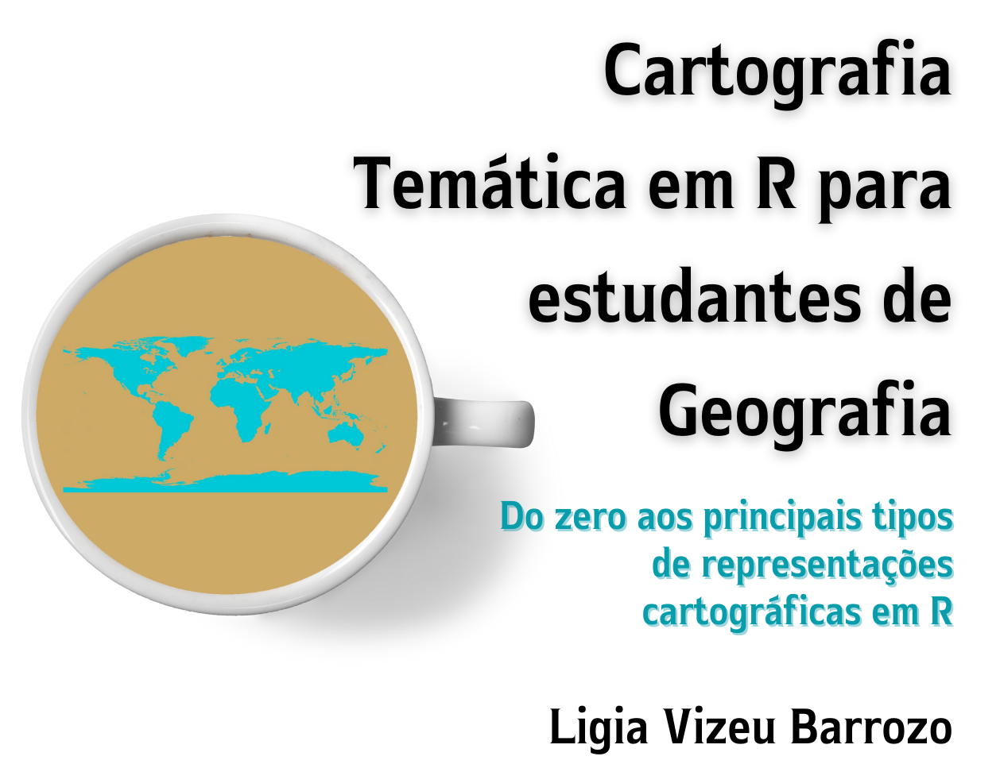

Apresentação

A Geografia é muito mais do que mapas, análises quantitativas, modelos de regressão. Sem dúvida! No entanto, tem se beneficiado muito com a elaboração de mapas, com análises quantitativas e modelos de regressão. É inquestionável. Análises quantitativas e qualitativas se complementam e ampliam a capacidade crítica de compreensão de um mundo em constante transformação.
Há 17 anos ensinando Cartografia Temática para o curso de Bacharelado em Geografia na Universidade de São Paulo, tenho acompanhado a evolução das geotecnologias. Hoje temos a disponibilidade de grande volume de dados. Nossa forma de análise tradicional, utilizando planilhas eletrônicas que podem abrir arquivos de até 1 milhão de linhas, já não atende as necessidades de nossas pesquisas. Estamos em uma nova encruzilhada promovida pelo avanço tecnológico. Por acreditar no potencial crítico e sintético do(a) geógrafo(a), encaro o desafio de contribuir para a aprendizagem e incorporação da programação na elaboração de mapas de forma mais acessível aos geógrafos(as) e outros profissionais que usam dados espaciais para a compreensão do mundo.
Penso que este livro pode cobrir uma lacuna que se situa na necessidade de o(a) geógrafo(a) aprender os primeiros passos do R para elaborar mapas temáticos. Neste caso, não estou preocupada em ensinar a fazer códigos limpos, bonitos e complexos, mas a ensinar como o aluno pode dar início à utilização do R, ao mesmo tempo em que aplica aspectos teóricos da Cartografia Temática na elaboração de seus mapas. Este livro surge junto com o meu próprio aprendizado ao tentar compilar inúmeros livros sobre R disponíveis, mas que não cumprem a função que preciso.
Fazer mapas não é sobre saber fazer código em R. O(A) geógrafo(a) pensa espacialmente. Precisa que os dados estejam representados cartograficamente para que sejam analisados, seja para a elaboração de hipóteses, seja para a comunicação de fenômenos espaciais, seja para testar hipóteses elaboradas previamente. Ao usar R para elaborar mapas, abre-se a possibilidade de explorar grandes bancos de dados e de permitir a reprodução exata dos procedimentos utilizados, garantindo transparência e avaliação criteriosa dos resultados obtidos. Em um mundo onde a Ciência é cada vez mais questionada, garantir a robustez e a transparência das análises contribui para que os resultados possam ser interpretados de forma correta e responsável. Além disso, segundo Comber & Brunsdom (2021), em uma ciência de dados crítica “não há desculpa para trituradores de números que não são críticos em sua análise de dados”.
Referência citada
Comber, L., Brunsdom, C. (2021) Geographical Data Science & Spatial Data Analysis: an introduction in R. Los Angeles: SAGE, 431p. https://study.sagepub.com/comber
Sobre o livro
Por que mais um livro sobre a linguagem R?
Este livro é para iniciantes na linguagem R. Não requer conhecimento anterior, ao mesmo tempo em que oferece conteúdo interessante para aqueles que já não são mais iniciantes. Também pode ser útil para quem utiliza mapas no jornalismo, pois orienta para a representação cartográfica mais adequada a cada conjunto de dados.
Este livro pretende compilar, de forma compreensível, o básico da gramática do ggplot2 e tmap além de recursos de diversos outros pacotes do R para a elaboração de mapas temáticos. Ao mesmo tempo, pretende associar aspectos técnicos da elaboração de mapas à teoria da representação cartográfica. Este livro foi organizado de forma a intercalar o conteúdo teórico da Cartografia Temática com a elaboração de mapas a partir de códigos do R. Um aspecto importante é a utilização de dados abertos para ilustrar os diversos tipos de representação cartográfica. Desta forma, o leitor se torna independente na obtenção de dados e na elaboração de mapas.
Este livro não está acabado. Ele será modificado à medida em que serão percebidos erros de qualquer tipo (conceituais, gramaticais, de tipografia, códigos etc.). Assim, fique à vontade em me enviar sugestões de correções. Agradeço antecipadamente. Também agradeço se puder divulgá-lo. Democratizar o conhecimento de forma gratuita e aberta faz parte de um projeto de mundo no qual o conhecimento científico de qualidade é valorizado e subsidia ações que promovam bem-estar para todos.
Agradecimentos
O aprendizado é um percurso longo. Impossível agradecer a todos que têm contribuído para a minha formação. Várias são as minhas referências na área da Cartografia, das quais destaco meus mestres diretos durante a graduação, professores Marcello Martinelli e Mario De Biasi. Os meus colegas de ofício, todos, têm me ensinado muito. Aos que ensinam Cartografia no Departamento de Geografia da FFLCH/USP, meu grande carinho e amizade. Aos meus alunos de Graduação e Pós, motivo deste livro. À equipe do Big Data Analytics do Hospital Israelita Albert Einstein, em especial ao Dr. Edson Amaro Jr., meu profundo reconhecimento. Participar deste grupo como pesquisadora visitante me fez ver a importância de dominar os instrumentos para a atuação do geógrafo na pesquisa e na gestão de governos. Aos meus colegas de pesquisa, do Grupo de Estudos Espaço Urbano e Saúde - Geurbs, direção do IEA/USP e apoio técnico, e aos demais das mais diversas áreas que me desafiam a cada pesquisa, minha gratidão sincera. Ao Professor Paulo Saldiva, exemplo de ser humano e de pesquisador, que com sua generosidade agrega pessoas e, sendo médico, acredita na força dos mapas.
Contato:
Ligia Vizeu Barrozo
Professora Titular, Departamento de Geografia, da Fac. de Filosofia, Letras e Ciências Humanas
e-mail: lija@usp.br
Universidade de São Paulo - USP
Pesquisadora Visitante, Big Data Analytics
Hospital Israelita Albert Einstein

Este trabalho tem uma licença da Creative Commons Attribution-NonCommercial-NoDerivatives 4.0 International License
1 Introdução
1.1 O programa R
Na página do projeto R https://www.r-project.org/about.html você encontrará todos os detalhes sobre este programa incrível. O R pode ser definido como uma linguagem e ambiente para computação estatística e gráficos. O R teve origem na linguagem S desenvolvida nas décadas de 1970 e 1980 e inicialmente desenvolvido por Robert Gentleman e Ross Ihaka — também conhecido como “R & R” - do Departamento de Estatística da Universidade de Auckland, Austrália. A versão atual é resultado de esforço colaborativo com contribuição de pesquisadores de todo o mundo. Desde a metade de 1997 existe um grupo central, o R Core Team, com acesso à gravação da fonte R.
O R disponibiliza grande variedade de técnicas gráficas, de análise estatística (modelagem linear e não linear, clássicos testes estatísticos, análise de séries temporais, classificação, agrupamento etc.) e de análise espacial.
Você deve estar se perguntando por quê um geógrafo precisa aprender R para fazer mapas se domina Sistemas de Informações Geográficas (SIGs) como QGIS e ArcGIS, entre outros. Uma das respostas seria a possibilidade de reprodutibilidade por meio de códigos facilmente aplicáveis por outros pesquisadores. Outra resposta seria a crescente necessidade de trabalhar com a paulatina disponibilidade de grandes quantidades de dados. Imagine se você quisesse reproduzir o mesmo mapa de precipitação para dados de cada um dos 30 dias de um mês. Seria muito mais fácil com algumas linhas de comando. Ainda, a possibilidade de fazer a ponte com programas SIGs como GRASS, QGIS, SAGA e gvSIG a partir do terminal do sistema por meio de command-line interface (CLI) (interface por linha de comando, em português). De acordo com o criador do QGIS, Gary Sherman, muitos usuários do QGIS perdem as vantagens da linha de comando por não saberem R.
Além disso, deve-se destacar que o R é fantástico para análise espacial e permite a elaboração de mapas interativos para visualização na Web usando os pacotes Leaflet e Shiny.
Se você ficou convencido(a), arregace as mangas e vamos começar.
1.2 Instalação do R e RStudio
A interface do R é basicamente uma interface de comando de linha.
O RStudio é um IDE (Integrated Development Environment - Ambiente de Desenvolvimento Integrado, em português). Em outras palavras, é um programa que roda o programa R e fornece uma interface com ferramentas auxiliares para escrever os códigos em R de forma mais amigável. Você pode trabalhar diretamente no R se preferir, mas o RStudio pode facilitar em muito a sua experiência com o R.
Se você for usar R no sistema Windows, instale também o RTools, um conjunto de programas que são necessários para construir pacotes R a partir da fonte.
1.2.1 Instalação do R para Windows
Vá até https://cran.r-project.org/, clique em ‘Download R for Windows’, então, clique em ‘base’, e depois no link de Download.
Depois que o download estiver completo, rode o instalador. Use as opções padrão, com uma exceção. Não escolha a pasta arquivos de programas. Prefira criar uma pasta R como subpasta do seu drive C.
1.2.2 Instalação do R para Mac
Vá até https://cran.r-project.org/, clique em ‘Download R for (Mac) OS X’, então em ‘base’, e depois no link de Download.
Depois que o download estiver completo, rode o instalador e aceite as opções padrão. Você deverá ver uma tela indicando que a instalação obteve sucesso.
1.2.3 Instalação do RStudio
Você deve instalar o RStudio apenas depois de já ter instalado o programa R.
Você pode fazer download do RStudio a partir do seguinte link: https://www.rstudio.com/products/rstudio/download/#download. Selecione a opção para o seu sistema operacional.
Depois de fazer download, rode o instalador e use todas as opções padrão.
1.2.4 Instalação do RTools
Se você estiver usando o sistema operacional Windows, instale também o RTools.
Vá para https://cran.r-project.org/, clique em ‘Download R for Windows’, então em ‘Rtools’, e selecione a versão mais atual do RTools para download.
Depois que o download tiver sido feito, rode o instalador. Selecione todas as opções padrão.
2 Básico do básico do R e RStudio
2.1 Os paineis
Ao abrir o RStudio você encontrará os seguintes paineis (Figura @ref(fig:console)).
(#fig:console)Tela do RStudio
O painel “console” é o R propriamente dito; onde você pode digitar os comandos e executá-los diretamente. As outras janelas são opcionais existentes no RStudio para facilitar as tarefas. É recomendado utilizar o painel de Editor de Texto (ou script) pois você pode digitar comentários sobre os comandos para que possa se recordar futuramente ou para que outra pessoa possa compreender o raciocínio percorrido. Para abrir um script, use o menu File/New file/R script. Desta forma, terá uma tela como a da Figura @ref(fig:script).
(#fig:script)Tela do script
O script permite a digitação de um texto sem formatação, como no Bloco de Notas do Windows. No lado direito, encontramos o painel “Environment” (ou Ambiente, em português) onde são listados os objetos e funções da sessão corrente. No lado inferior direito existe o navegador de arquivos entre outras guias que serão vistas no decorrer das atividades. O navegador de arquivos funciona como o “Explorer” do Windows, onde você pode apagar, renomear e gerenciar os arquivos.
O script do RStudio apresenta algumas funcionalidades muito úteis, tais como a conclusão do código. Ao digitar parte de um código, opções de códigos semelhantes surgirão e poderão ser completados ao se utilizar a tecla Tab. Além deste, o RStudio também armazena a história dos comandos. Assim, usando as teclas com as setas para cima ou para baixo, você pode navegar nos comandos anteriores.
O R é um programa de linha de comando, ou seja, após abri-lo, digitamos o código no script. Para executá-lo, você pode selecionar a linha digitada e as teclas Ctrl+Enter para enviar a linha para o seu interpretador. Ou pode usar o comando Run que fica na barra de cima do script. Todos os códigos do R são baseados em inglês e seus nomes, normalmente, dão dicas a respeito do seu uso.
O símbolo > no início da última linha exibida no console chama-se prompt e indica que o R está pronto para receber comandos. Todos as funções terminam com (). Quando quiser fechar o R, utilize a função quit(). O programa lhe perguntará se quer salvar a área de trabalho. Escolha “Yes” se quiser continuar o trabalho da próxima vez que abrir o R na mesma pasta. Os objetos criados serão salvos no arquivo .RData e o histórico de todos os comandos digitados no arquivo .Rhistory. Se quiser sair sem salvar a área de trabalho e o histórico, escolha “No”. O comando quit() possui uma versão mais curta q().
A acentuação no R pode ficar com caracteres estranhos devido à incompatibilidade com a língua portuguesa. Para resolver este problema, vamos ajustar para português.
#para ajustar a língua para portugues usando a função
Sys.setlocale(category = "LC_ALL", locale = "pt_BR.UTF-8")## [1] "LC_COLLATE=pt_BR.UTF-8;LC_CTYPE=pt_BR.UTF-8;LC_MONETARY=pt_BR.UTF-8;LC_NUMERIC=C;LC_TIME=pt_BR.UTF-8"Neste livro, os comandos a serem digitados no script do R estão coloridos de forma a facilitar a sua interpretação. Os resultados dos comandos impressos no console do R são exibidos aqui precedidos do símbolo ## e de [1] (indica o primeiro elemento requerido). Por exemplo, ao digitar no script do R a primeira linha, a segunda será exibida no console:
## [1] "Olá geógraf@s"Observe que ao digitar ou colar comandos longos no console, ocupando mais de uma linha, o R adiciona o símbolo + à primeira coluna da tela para indicar que a linha é a continuação do comando anterior.
Crie o hábito de adicionar comentários aos fragmentos de códigos que você digita no script. Para isso, utilize o símbolo # ao começar o comentário. O RStudio ignora tudo o que vier depois deste símbolo. Fazer comentários no código ajuda muito o aprendizado e a recuperar o raciocínio utilizado.
A utilização da função help auxilia enormemente a compreensão das funções. Use ? nome_da_função ou help(nome_da_função). Quando se deparar com algo que não consegue resolver, busque a solução na internet, nos fóruns de discussão sobre o R. Existem páginas como https://stackoverflow.com/, onde os usuários se ajudam mutuamente para a solução de problemas. Existe um grupo com discussão em português https://pt.stackoverflow.com/questions.
2.2 Tipos de objetos
Uma referência bastante interessante para a estruturação deste capítulo é o DataCamp, a primeira plataforma de aprendizado on-line para Ciência de Dados. Os cursos são ministrados em inglês e fornecem a base necessária para a compreensão dos tipos de objetos e manipulação de dados (DataCamp, 2023).
A forma mais simples de utilização do R é como uma calculadora. Vamos fazer um teste: digite na área do script 3 + 4. Selecione esta linha digitada e rode (pressione a tecla Ctrl ao mesmo tempo em que digita a tecla Enter).
## [1] 7No console, você verá a resposta [1] 7, ou seja, o R retornou um valor [1] solicitado cuja resposta é 7. Observe o painel do “Ambiente”, do lado direito superior. Ele está vazio, ou seja, não atribui a resposta (7) a nenhum objeto. No entanto, se quisermos gravar esta resposta, podemos atribui-la a um objeto, como x ou qualquer outro nome. Uma variável permite que você salve um valor (e.g., 102) ou um objeto (e.g., descrição de uma função, listas, matrizes) em R. Em outro momento, você pode usar o nome da variável armazenada para acessar o valor ou o objeto que foi salvo dentro desta variável. A atribuição a uma variável é feita com os símbolos <-. Este símbolo parece uma flecha apontando para o nome que se quer dar à variàvel e pode ser usado para o outro lado ->.
Rode novamente, agora digitando x seguido dos sinais de menor e de subtração antes da soma desejada. Use espaços antes e depois dos operadores de atribuição <-, mas não entre < e -. O atalho muito útil para <- é pressionar simultaneamente as teclas alt e a tecla menos (Alt + -).
x <- 3 + 4 #dê o nome de "x" ao valor resultante de 3 + 4
3 + 4 -> x #dê ao valor resultante de 3 + 4 o nome de "x"Observe que agora existe um objeto no painel “Ambiente”. O objeto é x e seu valor é 7. Deve-se observar que para nomear um objeto, o nome deve iniciar com uma letra (A-Z ou a-z) e pode incluir letras, dígitos (0-9), ponto (.) e sublinhado (_). No entanto, os nomes não podem começar com um número ou por um ponto seguido de um número. As palavras “if” e “for” não são permitidas para um objeto. O R discrimina letras maiúsculas de minúsculas nos nomes dos objetos. Assim, Y e y são dois objetos diferentes.
Digite a função typeofpara verificar o tipo de objeto criado.
## [1] "double"No caso, o objeto obtido foi do tipo “double”. Se você atribuir a x um outro valor, digamos 8, o valor anterior é apagado e passa a ter o novo valor. Esta modificação afeta apenas os objetos na memória ativa, não os dados que estão no disco rígido (Paradis, 2005). Para excluir um objeto, usa-se a função rm. Por exemplo, rm(x) exclui o objeto x. O comando rm(list=ls()) apaga todos os objetos da memória.
Todos os objetos têm dois atributos intrínsecos: modo (mode) e comprimento (length).
No R, os tipos de dados que são inseridos nos objetos são divididos em:
numeric: armazena números no formato “integer” (inteiro) ou “double” (reais);
character: armazena dados categóricos ou qualitativos por meio de caracteres (variáveis de texto);
logical: armazena variáveis que assumem os valores “FALSE” (falso) ou “TRUE” (verdadeiro). Variáveis lógicas são conhecidas como “booleanas” porque é um tipo de dado lógico que pode ter apenas um de dois valores possíveis: verdadeiro ou falso;
complex: relacionados ao número imaginário “i”.
Quando um número aparece entre aspas (simples ou dupla), o objeto é atribuído a um tipo “character”. Vejamos alguns exemplos:
## [1] "character"## [1] "character"## [1] "double"## [1] "logical"## [1] "double"Para que um número inteiro seja armazenado como “integer” é preciso que seja seguido da letra L. Já vimos que o tipo de objeto x é “double”. Vamos criar um objeto y do tipo “integer”.
## [1] "integer"Perceba que a classde x é “numeric” e a de y é “integer”. As outras classes são “character” e “logical”.
## [1] "numeric"## [1] "integer"## [1] "character"## [1] "logical"A classe é uma propriedade de um objeto que determina o comportamento das funções aplicadas a ele.
A tabela sistematizada por Aquino (2014), apresenta os operadores matemáticos e lógicos que podemos usar no R e seus significados.
| Operador matemático | Significado | Operador lógico | Significado |
|---|---|---|---|
| + | soma | > | maior que |
| - | subtração | < | menor que |
| / | divisão | >= | maior ou igual a |
| * | multiplicação | <= | menor ou igual a |
| ^ | exponenciação | & | e |
| | | ou | ||
| == | igual a | ||
| ! | não | ||
| != | diferente de |
Quando temos objetos, podemos fazer operações matemáticas entre eles. Por exemplo, vamos criar o objeto laranjas e atribuir o valor de 36. Criamos também o objeto bananas e atribuímos o valor de 48. Agora, podemos ter um novo objeto minhas_frutas, resultante da soma entre bananas e laranjas.
#para criar o objeto 'laranjas'
laranjas <- 36
#para criar o objeto 'bananas'
bananas <- 48
#para criar o objeto 'minhas_frutas'
minhas_frutas <- laranjas + bananas
#para mostrar o objeto 'minhas_frutas'
minhas_frutas## [1] 842.3 Estrutura dos dados
Segundo Wickham (2019), a estrutura dos dados no R pode ser organizada segundo sua dimensionalidade (1 dimensão, 2 dimensões ou n dimensões) e se ela é homogênea (todos os conteúdos são do mesmo tipo) ou heterogênea (conteúdos podem ser de tipos diferentes). A tabela organizada por Wickham (2019), a seguir, mostra os cinco tipos de dados mais frequentemente utilizados em análise de dados.
| Dimensão | Homogênea | Heterogênea |
|---|---|---|
| 1d | Atomic vector | List |
| 2d | Matrix | Data frame |
| nd | Array |
Para saber a estrutura de um objeto, use str(). A função str mostra o modo e o comprimento (número de elementos do objeto). Dados faltantes são representados por NA (not available, ou não disponível, em português). Valores não numéricos são representados por NaN (not a number, ou não é um número, em português).
## num 7## int 72.4 Vetores
Os vetores são matrizes de uma dimensão que podem conter dados numéricos, dados de caracteres ou dados lógicos. Em outras palavras, um vetor é uma ferramenta simples para armazenar dados de um único tipo.
Em R, criamos um vetor com a função c(). Para facilitar a memorização, “c” vem de “concatenate” (concatenar, unir). Os elementos são colocados dentro dos parênteses, separados por vírgula. A partir de vetores é possível fazer cálculos.
Por exemplo, podemos criar vetores para armazenar os dados de temperatura do ar e precipitação média mensal de Mirante do Parnaíba, em São Paulo (Fonte: https://pt.wikipedia.org/wiki/Clima_da_cidade_de_São_Paulo#).
Vamos criar vetores de temperatura média anual do ar, que receberá o nome de temp. Os dados de temp são: 23.1, 23.5, 22.5, 21.2, 18.4, 17.5, 17.2, 18.1, 19.1, 20.5, 21.2, 22.6 (Dica: para ter o exato conjunto de dados, copie e cole desde o primeiro valor até o último dentro dos parênteses da função).
#para criar o objeto 'temp'
temp <- c(23.1, 23.5, 22.5, 21.2, 18.4, 17.5, 17.2, 18.1, 19.1, 20.5, 21.2, 22.6)
#para visualizar 'temp'
temp## [1] 23.1 23.5 22.5 21.2 18.4 17.5 17.2 18.1 19.1 20.5 21.2 22.6A precipitação média anual receberá o nome de prec. Os dados de precipitação arredondados são: 292, 257, 229, 87, 66, 59, 48, 32, 83, 127, 143, 231
#para criar o objeto 'prec'
prec <- c(292, 257, 229, 87, 66, 59, 48, 32, 83, 127, 143, 231)
#para visualizar 'prec'
prec## [1] 292 257 229 87 66 59 48 32 83 127 143 2312.5 Nomeando os vetores
Vimos que podemos criar conjuntos de dados usando a função c() em R.
Como temos dados de precipitação e temperatura, seria interessante que estes valores fossem associados ao mês correspondente. Esta tarefa pode ser executada por meio da função names().
Podemos dar os nomes dos meses aos dados de temperatura e precipitação criando um vetor de meses. Atribua a uma variável chamada ‘meses’ o conjunto de nomes dos meses do ano. Os nomes dos meses serão abreviados: “jan”, “fev”, “mar”, “abr”, “mai”, “jun”, “jul”, “ago”, “set”, “out”, “nov”, “dez”. Lembre-se que nomes são textos e, portanto, devem entrar entre aspas.
#para atribuir os meses do ano ao objeto 'meses'
meses <- c("jan", "fev", "mar", "abr", "mai", "jun", "jul", "ago", "set", "out", "nov", "dez")Agora, atribua o vetor de “meses” diretamente à variável temp usando a função names().
## jan fev mar abr mai jun jul ago set out nov dez
## 23.1 23.5 22.5 21.2 18.4 17.5 17.2 18.1 19.1 20.5 21.2 22.6Faça o mesmo para a variável prec.
## jan fev mar abr mai jun jul ago set out nov dez
## 292 257 229 87 66 59 48 32 83 127 143 2312.6 Seleção em vetores
Como geógrafos, gostaríamos de saber quanto chove em cada estação do ano. Para chegarmos nesta resposta, começaremos criando variáveis para cada estação do ano com os valores de precipitação correspondentes. Considere primavera contendo os seguintes meses: setembro, outubro e novembro; verão contendo dezembro, janeiro e fevereiro; outono contendo março, abril e maio e, inverno contendo junho, julho e agosto.
Para selecionar elementos de um vetor (e depois em matrizes, dataframes, …), são usados os colchetes []. Dentro dos colchetes são indicados os elementos do conjunto de dados que serão selecionados. Por exemplo, para selecionar a precipitação do mês de janeiro usa-se a seguinte forma de seleção prec[1]. A seleção do segundo elemento seria prec[2] e assim por diante. Em R, o primeiro elemento de um vetor tem a posição 1 (em Python, a primeira posição tem o índice 0).
Para selecionar múltiplos elementos de um vetor, são usados os [] contendo o vetor com a posição dos elementos desejados. Como exemplo, se quisermos selecionar as precipitações dos meses de janeiro e dezembro, usamos c(1, 12) entre colchetes, depois de definir o nome da variável que contém os dados.
#para selecionar as precipitações de janeiro e dezembro
prec_selecao <- prec[c(1, 12)]
#para imprimir a seleção
prec_selecao## jan dez
## 292 231Observe que para selecionar intervalos de dados, pode-se usar :. Por exemplo, para criar uma variável selecionando as precipitações durante os meses do primeiro semestre:
#para selecionar as precipitações do semestre 1
prec_semestre1 <- prec[c(1:6)]
#para imprimir prec_semestre1
prec_semestre1## jan fev mar abr mai jun
## 292 257 229 87 66 59Crie os arquivos de precipitação para cada estação do ano: primavera_prec, verao_prec, outono_prec e inverno_prec usando seleção múltipla.
#para criar a 'primavera_prec' a partir de seleção
primavera_prec <- prec[c(9, 10, 11)]
#para criar a 'verao_prec' a partir de seleção
verao_prec <- prec[c(12, 1, 2)]
#para criar a 'outono_prec' a partir de seleção
outono_prec <- prec[c(3, 4, 5)]
#para criar a 'inverno_prec' a partir de seleção
inverno_prec <- prec[c(6, 7, 8)]
#para visualizar os resultados
primavera_prec## set out nov
## 83 127 143## dez jan fev
## 231 292 257## mar abr mai
## 229 87 66## jun jul ago
## 59 48 32Vamos fazer a seleção segundo estação do ano para a variável ‘temp’.
#para criar a 'primavera_temp' a partir de seleção
primavera_temp <- temp[c(9, 10, 11)]
#para criar a 'verao_temp' a partir de seleção
verao_temp <- temp[c(12, 1, 2)]
#para criar a 'outono_temp' a partir de seleção
outono_temp <- temp[c(3, 4, 5)]
#para criar a 'inverno_temp' a partir de seleção
inverno_temp <- temp[c(6, 7, 8)]
#para visualizar os resultados
primavera_temp## set out nov
## 19.1 20.5 21.2## dez jan fev
## 22.6 23.1 23.5## mar abr mai
## 22.5 21.2 18.4## jun jul ago
## 17.5 17.2 18.1R permite fazer seleções a partir de operadores lógicos:
<para menor do que>para maior do que<=para menor ou igual a>=para maior ou igual a==para igual a!=para não igual a
Suponha que gostaríamos de saber em quais meses do ano temos precipitação acima de 100 mm. Você consegue imaginar como seria a linha de comando? Crie uma variável chamada prec100.
#para selecionar os meses com valores acima de 100 mm de precipitação
prec100 <- prec > 100
#para visualizar os meses que atendem à seleção
prec100## jan fev mar abr mai jun jul ago set out nov dez
## TRUE TRUE TRUE FALSE FALSE FALSE FALSE FALSE FALSE TRUE TRUE TRUEComo você observou, o código criado gerou um resultado lógico mostrando TRUE para meses com valores acima de 100 mm e FALSE para meses com valores abaixo ou até 100 mm. No entanto, gostaríamos de saber também não apenas os meses com precipitação acima de 100 mm, mas também quanto choveu nestes meses. Você pode criar uma nova variável meses_prec100 selecionando diretamente [prec > 100] após prec.
## jan fev mar out nov dez
## 292 257 229 127 143 2312.7 Totais e médias em vetores
Como queremos compreender um pouco mais as variáveis meteorológicas de São Paulo, precisamos saber os totais de precipitação durante cada estação do ano. Como já temos os valores para cada estação, podemos simplesmente criar novas variáveis (primavera_prec_total, verao_prec_total, outono_prec_total e inverno_prec_total) usando a função de soma, sum(primavera_prec) e assim por diante.
#para criar o total da precipitação na primavera
primavera_prec_total <- sum(primavera_prec)
#para criar o total da precipitação no verão
verao_prec_total <- sum(verao_prec)
#para criar o total da precipitação no outono
outono_prec_total <- sum(outono_prec)
#para criar o total da precipitação no inverno
inverno_prec_total <- sum(inverno_prec)
#para visualizar os totais
primavera_prec_total## [1] 353## [1] 780## [1] 382## [1] 139Sabendo que a função para o cálculo das médias de temperatura é mean(), como você faria para calcular as médias de temperaturas segundo estação do ano?
#para criar a média da temperatura na primavera
primavera_temp_media <- mean(primavera_temp)
#para criar a média da temperatura no verão
verao_temp_media <- mean(verao_temp)
#para criar a média da temperatura no outono
outono_temp_media <- mean(outono_temp)
#para criar a média da temperatura no inverno
inverno_temp_media <- mean(inverno_temp)
#para visualizar as médias
primavera_temp_media## [1] 20.26667## [1] 23.06667## [1] 20.7## [1] 17.6Será que em São Paulo chove mais no verão ou no inverno? Escreva um código para verificar se chove mais no verão ou no inverno em São Paulo.
Verifique se a temperatura média no outono é diferente da do inverno.
Qual seria a precipitação em cada mês do ano se chovesse o dobro? Crie uma variável chamada prec2x. Imprima o resultado de prec2x.
Qual a diferença de precipitação entre primavera e verão (nesta ordem)? Chame a nova variável de dif_prec. Imprima o resultado.
2.8 Matrizes
Em R, uma matriz é uma coleção de elementos do mesmo tipo de dados (numeric, character ou logical) arrumados em um número fixo de linhas e colunas. Como está organizada em linhas e colunas, uma matriz é bi-dimensional.
Uma matriz pode ser criada com a função matrix().
Por exemplo se queremos construir uma matriz com 9 elementos e 3 linhas, podemos usar o código a seguir:
## [,1] [,2] [,3]
## [1,] 1 2 3
## [2,] 4 5 6
## [3,] 7 8 9Nesta função, o primeiro argumento 1:9 é a coleção de elementos que R vai formar em colunas e linhas em uma matriz. Neste caso será 1:9, ou seja c(1, 2, 3, 4, 5, 6, 7, 8, 9).
O segundo argumento byrow indica que a matriz vai ser preenchida pelos números de 1 a 9 seguindo as linhas (by row = por linha). Se queremos preencher segundo as colunas, o argumento deverá ser byrow = FALSE.
O terceiro argumento nrow indica que a matriz deve ter 3 linhas (nrow significa number of rows).
Vamos construir uma matriz para ver como se distribui a população de São Paulo segundo tipo de assentamento. Dividimos os assentamentos em: assentamentos regulares, aglomerados subnormais (definidos pelo IBGE) e assentamentos precários, em três faixas etárias: de 0 a 19 anos; de 20 a 59 anos e + de 60 anos de idade.
Para construir uma matriz, vamos primeiro criar os vetores das populações por faixa etária de cada tipo de assentamento. Chame o primeiro vetor de ‘ass_reg’ e atribua os seguintes valores: 2540608, 5794529, 1253256.
O segundo vetor terá o nome de ‘ass_prec’ e conterá os seguintes valores: 97712, 161663, 19225.
O terceiro vetor será o ‘agsn’, com: 539918, 777051, 65114
#para criar o vetor 'ass_reg'
ass_reg <- c(2540608, 5794529, 1253256)
#para criar o vetor 'ass_prec'
ass_prec <- c(97712, 161663, 19225)
#para criar o vetor 'agsn'
agsn <- c(539918, 777051, 65114)Agora podemos definir a matriz com 3 linhas, seguindo a sequência das linhas. Vamos chamá-la de pop_sp_matrix.
#para criar a matriz com os 3 vetores
pop_sp_matrix <- matrix(c(ass_reg, ass_prec, agsn), nrow = 3, byrow = TRUE)
#para imprimi-la
pop_sp_matrix## [,1] [,2] [,3]
## [1,] 2540608 5794529 1253256
## [2,] 97712 161663 19225
## [3,] 539918 777051 65114Como você viu, não temos nomes para linhas e colunas. Vamos gerar dois vetores contendo os nomes. Um para as linhas, outro para as colunas. As linhas vão receber o nome de ‘tipos’ e vão conter: ‘ass. regular’, ‘ass. precário’ e ‘agsn’. A ordem de entrada dos elementos precisa ser correta. Lembre-se que por serem texto, precisam estar entre aspas.
As colunas serão chamadas de ‘idades’ e deverão conter: 0 a 19, 20 a 59, 60 e mais
Para atribuir os nomes das colunas à matriz, vamos usar a função colnames().
Você consegue atribuir o nome ‘tipos’ para as linhas usando a função rownames()? Imprima novamente a matrix.
2.9 Cálculos em Matrizes
Gostaríamos de saber qual a população total em cada tipo de assentamento. Para isso, usamos a função rowSums() para criar ‘total’
## ass. regular ass. precário agsn
## 9588393 278600 1382083Seria interessante criarmos uma nova coluna com os totais encontrados. Para isso vamos adicionar o vetor ‘total’ à matriz ‘pop_sp_matrix’ e chamar de ‘pop_sp_tot_rows’, usando a função cbind(). A letra ‘c’ neste caso, indica ‘column’
#para unir a coluna 'tot_rows' à matriz
pop_sp_tot_rows <- cbind(pop_sp_matrix, tot_rows)
#imprima pop_sp_total
pop_sp_tot_rows## 0 a 19 20 a 59 60 e mais tot_rows
## ass. regular 2540608 5794529 1253256 9588393
## ass. precário 97712 161663 19225 278600
## agsn 539918 777051 65114 1382083Usando o raciocínio percorrido para adicionar uma nova coluna com a função cbind(), você seria capaz de acrescentar uma linha com os totais de cada faixa etária na matriz ‘pop_sp_total’ usando as funções colSums() e rbind()?
#para somar as colunas
tot_cols <- colSums(pop_sp_tot_rows)
#para unir a linha 'tot_cols' à matriz
pop_sp_total <- rbind(pop_sp_tot_rows, tot_cols)
#Imprima para ver o resultado
pop_sp_total## 0 a 19 20 a 59 60 e mais tot_rows
## ass. regular 2540608 5794529 1253256 9588393
## ass. precário 97712 161663 19225 278600
## agsn 539918 777051 65114 1382083
## tot_cols 3178238 6733243 1337595 11249076Imagine, hipoteticamente, que 90% da população, independente da faixa etária e tipo de assentamento, tenha tomado todas as doses da vacina contra a COVID-19 em São Paulo. Para saber quantas pessoas ainda precisam tomá-la podemos multiplicar toda a matriz por 0.10. Chame o resultado de ‘pop_sp_10’
#para multiplicar a matriz por 10%
pop_sp_10 <- pop_sp_total * 0.10
#para visualizar o resultado
pop_sp_10## 0 a 19 20 a 59 60 e mais tot_rows
## ass. regular 254060.8 579452.9 125325.6 958839.3
## ass. precário 9771.2 16166.3 1922.5 27860.0
## agsn 53991.8 77705.1 6511.4 138208.3
## tot_cols 317823.8 673324.3 133759.5 1124907.6Mas na verdade descobrimos que a cobertura vacinal variou entre as faixas etárias e também entre os tipos de assentamentos. Criamos uma matriz com os valores (hipotéticos) de cobertura vacinal.
#vetor da cobertura vacinal
cob_vac <- c(0.59, 0.88, 0.93, 0.8, 0.61, 0.79, 0.75, 0.66, 0.56, 0.65, 0.72, 0.64, 0.59, 0.77, 0.8, 0.7)
#para criar a matriz
cob_vac_matrix <- matrix(cob_vac, nrow = 4, byrow = TRUE)
#para imprimir a matriz
cob_vac_matrix## [,1] [,2] [,3] [,4]
## [1,] 0.59 0.88 0.93 0.80
## [2,] 0.61 0.79 0.75 0.66
## [3,] 0.56 0.65 0.72 0.64
## [4,] 0.59 0.77 0.80 0.70Agora queremos saber quantas pessoas já foram vacinadas por faixa etária e tipo de assentamento. Para isso, multiplique as duas matrizes.
#para multiplicar as matrizes
sp_cob_vac <- pop_sp_total * cob_vac_matrix
#para visualizar o resultado
sp_cob_vac## 0 a 19 20 a 59 60 e mais tot_rows
## ass. regular 1498958.72 5099185.5 1165528.08 7670714.4
## ass. precário 59604.32 127713.8 14418.75 183876.0
## agsn 302354.08 505083.2 46882.08 884533.1
## tot_cols 1875160.42 5184597.1 1070076.00 7874353.2Veja que a aritmética entre matrizes só é possível quando elas têm o mesmo número de linhas e colunas.
2.10 Seleção em Matrizes
Já vimos que para selecionar um elemento de um vetor podemos usar colchetes [ ]. O mesmo acontece com a seleção em matrizes. A diferença é que um vetor é unidimensional enquanto uma matriz é bidimensional. Desta forma, dentro dos colchetes precisamos indicar qual a linha e qual a coluna correspondente ao elemento que desejamos selecionar.
Outro aspecto que precisamos recordar é que quando desejamos selecionar um intervalo de dados podemos usar : para indicar que os dados estão em uma sequência. Por exemplo, para selecionar elementos que estão nas linhas 23 a 35, na coluna 12: [23:35,12].
Ao selecionar uma linha inteira definimos apenas o número da linha. Por exemplo, seleção da linha 63: nomearquivo[63,]. Se fosse a coluna 31, seria [,31].
Com base na matriz de população por tipo de assentamento e faixa etária, selecione a população de 20 a 59 anos que mora em aglomerados subnormais. Chame a variável de ‘agsn_20a59’. Se achar mais fácil, imprima a matriz ‘pop_sp_total’ para visualizar os dados. Observe que a matriz de dados é 4 x 4 (os nomes das linhas e das colunas não contam).
## 0 a 19 20 a 59 60 e mais tot_rows
## ass. regular 2540608 5794529 1253256 9588393
## ass. precário 97712 161663 19225 278600
## agsn 539918 777051 65114 1382083
## tot_cols 3178238 6733243 1337595 11249076#para selecionar o que se deseja e criar uma nova variável
agsn_20a59 <- pop_sp_total[3,2]
#para visualizar o resultado
agsn_20a59## [1] 777051Selecione a linha inteira dos assentamentos precários e chame a nova variável de ‘pop_ass_prec’.
#para atribuir 'pop_ass_prec' à seleção da linha inteira
pop_ass_prec <- pop_sp_total[2,]
#para visualizar
pop_ass_prec## 0 a 19 20 a 59 60 e mais tot_rows
## 97712 161663 19225 2786002.11 Fatores
Fatores armazenam dados de variáveis categóricas (ou qualitativas). Enquanto as variáveis contínuas correspondem a infinitos valores, as variáveis categóricas só podem pertencer a um número limitado de classes.
Um bom exemplo de variável categórica são as classes de raça ou cor (segundo classificação do IBGE). No Censo Demográfico brasileiro há 5 grupos autorreferidos de raça ou cor: preta, branca, amarela, indígena ou parda. Deixando de lado todas as discussões sobre a definição e nomes destas categorias, podemos criar um vetor atribuindo a cada pessoa entrevistada uma cor ou raça referida por ela.
Vamos criar um vetor chamado ‘vetor_cor’ para uma amostragem de 10 pessoas, cujas respostas ordenadas foram: preta, preta, branca, parda, branca, amarela, indigena, preta, branca, parda. Como as respostas são em texto, é necessário usar ““.
vetor_cor <- c("preta", "preta", "branca", "parda", "branca", "amarela", "indigena", "preta", "branca", "parda")
#Imprima para ver o vetor
vetor_cor## [1] "preta" "preta" "branca" "parda" "branca" "amarela"
## [7] "indigena" "preta" "branca" "parda"Para que o R reconheça este vetor como um fator, usamos a função factor(). Crie ‘fator_vetor_cor’ usando a função factor(). Imprima para ver o resultado.
## [1] preta preta branca parda branca amarela indigena
## [8] preta branca parda
## Levels: amarela branca indigena parda pretaObserve que quando imprimimos o objeto do tipo fator, existe a linha “Levels” mostrando todas as categorias encontradas no conjunto de dados.
Os dados categóricos podem ser nominais ou ordinais. Como vimos no fator cor, não existe ordem entre as categorias. Neste caso, eles são listados em ordem alfabética na linha “Levels”.
Uma função muito útil é summary(). Com ela você tem uma boa ideia do conteúdo de cada objeto. Tente summary() para ver ‘vetor_cor’ e em seguida, para ver ‘fator_vetor_cor’.
Qual a diferença entre os dois?
## Length Class Mode
## 10 character character## amarela branca indigena parda preta
## 1 3 1 2 3Em um fator, o ‘summary’ resume o número de elementos presentes em cada categoria. No vetor, ‘summary’ apresenta o comprimento do vetor e o tipo de dados.
Fatores podem ser nominais ou ordinais. Para criar um fator ordinal, é preciso especificar os níveis entre os elementos. Vamos criar um vetor com a vulnerabilidade a inundações de 10 municípios. Chame este vetor de ‘vuln’.
#para criar o vetor
vuln <- c("alta", "baixa", "baixa", "muito alta", "nenhuma", "intermediária", "intermediária", "intermediária", "baixa", "baixa")
#para visualizar
vuln## [1] "alta" "baixa" "baixa" "muito alta"
## [5] "nenhuma" "intermediária" "intermediária" "intermediária"
## [9] "baixa" "baixa"Vamos converter o vetor ‘vuln’ em um fator ordenado. Para isso precisaremos indicar a ordem dos níveis. Ordem de elementos segundo vulnerabilidade (nenhuma, baixa, intermediária, alta, muito alta).
#para criar o fator
factor_vuln <- factor(vuln, ordered = T, levels = c("nenhuma", "baixa", "intermediária", "alta", "muito alta"))
#para visualizar o fator criado
factor_vuln## [1] alta baixa baixa muito alta
## [5] nenhuma intermediária intermediária intermediária
## [9] baixa baixa
## Levels: nenhuma < baixa < intermediária < alta < muito altaEm um fator ordenado, as classes aparecem em ordem crescente de acordo com os níveis estabelecidos.
Visualize o summary() de ‘factor_vuln’.
## nenhuma baixa intermediária alta muito alta
## 1 4 3 1 1Vamos selecionar e criar novos objetos com os elementos de ‘factor_vuln’. Selecione o elemento 6 e crie um objeto. Selecione o elemento 2 e crie um elemento. Chame de ‘vuln6’ e ‘vuln2’, respectivamente
#para selecionar o elemento 6
vuln6 <- factor_vuln[6]
#para selecionar o elemento 2
vuln2 <- factor_vuln[2]
#para visualizar
vuln6## [1] intermediária
## Levels: nenhuma < baixa < intermediária < alta < muito alta## [1] baixa
## Levels: nenhuma < baixa < intermediária < alta < muito altaAgora poderemos comparar ‘vuln6’ com ‘vuln2’. Verifique se ‘vuln6’ é igual a ‘vuln2’.
## [1] FALSEVerifique se ‘vuln6’ é maior do que ‘vuln2’.
## [1] TRUE2.12 Referências citadas
AQUINO, J.A. R para cientistas sociais. Ilhéus: Editora da UESC, 2014. 167p.
DATACAMP. 2023. Cornelissen, J. Introduction to R. On-line Course.
DATACAMP. 2023. Robinson, D. Introduction to the Tidyverse. On-line Course.
DATACAMP. 2023. Chapman, J. Data manipulation with Dplyr. On-line Course.
3 Dataframes
Um dataframe contém um conjunto de dados organizados em linhas e colunas, assim como uma matriz. No entanto, existe uma diferença importante entre uma matriz e um dataframe. O dataframe aceita que as colunas tenham diferentes tipos de dados, enquanto uma matriz só permite um tipo para todas as colunas.
Para darmos início, vamos limpar a memória e verificar o diretório.
É sempre bom deixarmos alinhado com a língua que usaremos para evitar problemas com acentuação nos títulos. Também vamos desativar a notação científica para que os códigos do IBGE apareçam por completo.
#para ajustar a língua para português usando a função
Sys.setlocale(category = "LC_ALL", locale = "pt_BR.UTF-8")## [1] "LC_COLLATE=pt_BR.UTF-8;LC_CTYPE=pt_BR.UTF-8;LC_MONETARY=pt_BR.UTF-8;LC_NUMERIC=C;LC_TIME=pt_BR.UTF-8"3.1 Criação de dataframe
Vimos que um dataframe pode conter diferentes tipos de variáveis. Para vermos com mais detalhes como um dataframe funciona, vamos criar um a partir de vetores.
Podemos criar vetores e depois uni-los usando a função data.frame(). Também poderemos importar bancos de dados prontos, o que é ainda mais usual.
Vamos começar com a construção de um dataframe a partir dos vetores.
Vamos criar um dataframe com dados das capitais das Unidades da Federação do Brasil. Para isso vamos precisar criar os vetores de cada conjunto de dados separadamente.
Vamos começar com os nomes das capitais, ‘nomes’. Lembre-se que os nomes devem entrar entre aspas: “Aracaju”, “Belém”, “Belo Horizonte”, “Boa Vista”, “Brasília”, “Campo Grande”, “Cuiabá”, “Curitiba”, “Florianópolis”, “Fortaleza”, “Goiânia”, “João Pessoa”, “Macapá”, “Maceió”, “Manaus”, “Natal”, “Palmas”, “Porto Alegre”, “Porto Velho”, “Recife”, “Rio Branco”, “Rio de Janeiro”, “Salvador”, “São Luís”, “São Paulo”, “Teresina”, “Vitória”
nomes <- c("Aracaju", "Belém", "Belo Horizonte", "Boa Vista", "Brasília", "Campo Grande", "Cuiabá", "Curitiba", "Florianópolis", "Fortaleza", "Goiânia", "João Pessoa", "Macapá", "Maceió", "Manaus", "Natal", "Palmas", "Porto Alegre", "Porto Velho", "Recife", "Rio Branco", "Rio de Janeiro", "Salvador", "São Luís", "São Paulo", "Teresina", "Vitória")Vamos criar o objeto ‘regiao’: “Nordeste”, “Norte”, “Sudeste”, “Norte”, “Centro-Oeste”, “Centro-Oeste”, “Centro-Oeste”, “Sul”, “Sul”, “Nordeste”, “Centro-Oeste”, “Nordeste”, “Norte”, “Nordeste”, “Norte”, “Nordeste”, “Norte”, “Sul”, “Norte”, “Nordeste”, “Norte”, “Sudeste”, “Nordeste”, “Nordeste”, “Sudeste”, “Nordeste”, “Sudeste”
O vetor da população de cada capital receberá o nome de ‘pop’ e deverá conter: 664908, 1499641, 2521564, 419652, 3055149, 906092, 618124, 1948626, 508826, 2686612, 1536097, 817511, 512902, 1025360, 2219580, 890480, 306296, 1488252, 539354, 1653461, 413418 , 6747815, 2886698, 1108975, 11253503, 868075, 365855
Vamos criar um vetor para indicar se a capital fica no litoral ou não. O vetor receberá o nome de ‘costa’ e deverá conter: TRUE, TRUE, FALSE, FALSE, FALSE, FALSE, FALSE, FALSE, TRUE, TRUE, FALSE, TRUE, TRUE, TRUE, FALSE, TRUE, FALSE, FALSE, FALSE, TRUE, FALSE, TRUE, TRUE, TRUE, FALSE, FALSE, TRUE
A partir dos vetores fica fácil criar um data frame usando a função data.frame(). Chame o dataframe de ‘capitais’ contendo os vetores nomes, regiao, pop e costa
Agora examine as variáveis de ‘capitais’ usando a função str().
3.2 Importação de um dataframe
Os dataframes são muito usados nas análises de dados. Os arquivos com dados espaciais, que serão usados para elaborarmos os mapas, contêm uma tabela de dados relacional. Ela é chamada relacional porque está associada a cada feição (ponto, linha ou polígono) do arquivo de geometria. Assim, em um arquivo do tipo shapefile o polígono do município de São Paulo tem a sua forma representada em um arquivo do tipo .shp. A tabela de dados do tipo .dbf contém uma linha para cada feição do arquivo da geometria e características (atributos) vinculados a cada feição. Um terceiro arquivo, do tipo .shx, faz a conexão entre o arquivo .shp e o .dbf.
Não é objetivo deste livro esgotar as possibilidades dos pacotes para análise de dados. O conteúdo que será apresentado será o mínimo para que seja possível a preparação dos arquivos que serão usados para a elaboração de mapas. Em geral, precisaremos saber fazer o download de tabelas e arquivos espaciais; fazer cálculos entre colunas da tabela; filtrar colunas e linhas e unir tabelas de dados a dados espaciais (shapefiles, geopackages, etc).
Para que o leitor consiga autonomia, vamos trabalhar com dados reais, disponíveis na Internet. Para baixar os dados diretos da Internet, vamos precisar do pacote R.utils. Precisamos instalá-lo agora.
Também será necessário carregá-lo.
O arquivo com extensão csv está disponível no site da Fundação SEADE. Desta forma, faremos o download do arquivo CSV após a identificação da url (Uniform Resource Locator, ou Localizador Uniforme de Recursos - significa endereço web, ou seja, o texto que você digita na barra do navegador para acessar uma determinada página ou serviço). Para isso, usaremos a função download.file do pacote R.utils. A documentação completa dos pacotes e funções estão disponíveis em R documentation.
#se quiser identificar a url de um determinado conjunto de dados, faça o download do arquivo desejado manualmente e clique em Ctrl+J. O navegador mostrará o caminho completo, que poderá ser copiado. Para o download do arquivo com os municípios do estado de São Paulo, use o comando a seguir. Use o nome do arquivo como arquivo de destino (destfile)
download.file(url = "https://repositorio.seade.gov.br/dataset/71bffea4-0650-4f2e-9d82-b0179137cd3e/resource/ef737887-69d9-4afa-a513-00aa78ec2419/download/evolucao_casamentos.csv", destfile = "evolucao_casamentos.csv")Também precisaremos do arquivo com os nomes dos municípios.
#para fazer download do arquivo 'codigos_municipios_regioes.csv'
download.file(url = "https://repositorio.seade.gov.br/dataset/1617c335-f5ab-426c-b175-280d4e41ec1c/resource/1871ac05-7b7f-4c13-9b4a-23c7d41fd988/download/codigos_municipios_regioes.csv", destfile = "codigos_municipios_regioes.csv")#para criar um dataframe com o nome 'evol_casam' a partir do arquivo csv. Como o arquivo contém a primeira linha de cabeçalho, é preciso indicar que 'header = TRUE'. Como os campos estão separados por ponto e vírgula, deve-se indicar 'sep = ";"
evol_casam <- read.csv("C:/Users/l_viz/Documents/RCartoTematica/evolucao_casamentos.csv", header = TRUE, sep = ";")Vamos abrir o segundo arquivo csv que contém os códigos do IBGE e os nomes dos municípios do Estado de São Paulo.
#Este arquivo está codificado em 'latin1'.
#para criar um dataframe com o nome 'codigos', precisamos indicar o encoding como 'latin1' para que a acentuação seja lida corretamente
codigos <- read.csv("C:/Users/l_viz/Documents/RCartoTematica/codigos_municipios_regioes.csv", header = TRUE, sep = ";", dec = ".", stringsAsFactors=FALSE, encoding="latin1")Como o banco de dados é muito grande, podemos olhar para uma amostra bem menor, digamos, de 6 linhas do começo do banco de dados ou das últimas linhas. Para isso usamos a função head() (cabeça) ou tail() (cauda), respectivamente. Rode as duas funções para ‘evol_casam’ e ‘codigos’.
## ano cod_ibge entre.pessoas.de.sexos.diferentes
## 1 2000 3500105 139
## 2 2000 3500204 22
## 3 2000 3500303 119
## 4 2000 3500402 69
## 5 2000 3500501 73
## 6 2000 3500550 14
## entre.pessoas.do.mesmo.sexo ignorado total
## 1 NA NA 139
## 2 NA NA 22
## 3 NA NA 119
## 4 NA NA 69
## 5 NA NA 73
## 6 NA NA 14## cod_ibge municipios cod_ra
## 1 3500000 Estado de São Paulo Estado sem especificação
## 2 3500105 Adamantina 691
## 3 3500204 Adolfo 689
## 4 3500303 Aguaí 686
## 5 3500402 Águas da Prata 686
## 6 3500501 Águas de Lindóia 686
## reg_administrativa reg_metropolitanas cod_ibge6
## 1 Estado sem especificação Estado sem especificação 350000
## 2 RA de Presidente Prudente Demais municípios 350010
## 3 RA de São José do Rio Preto RM São José do Rio Preto 350020
## 4 RA de Campinas Demais municípios 350030
## 5 RA de Campinas Demais municípios 350040
## 6 RA de Campinas Demais municípios 350050
## pop2020 porte_pop2020
## 1 Estado sem especificação Estado sem especificação
## 2 33894 Mais de 20 mil até 50 mil
## 3 3447 Até 5 mil
## 4 35608 Mais de 20 mil até 50 mil
## 5 7797 Mais de 5 mil até 10 mil
## 6 18374 Mais de 10 mil até 20 mil
## cod_drs drs
## 1 Estado sem especificação Estado sem especificação
## 2 5 Marília
## 3 15 São José do Rio Preto
## 4 14 São João da Boa Vista
## 5 14 São João da Boa Vista
## 6 3 Campinas## ano cod_ibge entre.pessoas.de.sexos.diferentes
## 14763 2022 3557154 11
## 14764 2022 3557204 87
## 14765 2022 3557303 69
## 14766 2022 3549102 398
## 14767 2022 3522901 39
## 14768 2022 3538105 79
## entre.pessoas.do.mesmo.sexo ignorado total
## 14763 NA NA 11
## 14764 NA NA 87
## 14765 NA NA 69
## 14766 NA NA 398
## 14767 1 NA 40
## 14768 NA NA 79## cod_ibge municipios cod_ra reg_administrativa
## 641 3556958 Vitória Brasil 689 RA de São José do Rio Preto
## 642 3557006 Votorantim 685 RA de Sorocaba
## 643 3557105 Votuporanga 689 RA de São José do Rio Preto
## 644 3557154 Zacarias 689 RA de São José do Rio Preto
## 645 3557204 Chavantes 692 RA de Marília
## 646 3557303 Estiva Gerbi 686 RA de Campinas
## reg_metropolitanas cod_ibge6 pop2020
## 641 Demais municípios 355695 1760
## 642 RM de Sorocaba 355700 119824
## 643 Demais municípios 355710 91760
## 644 RM São José do Rio Preto 355715 2560
## 645 Demais municípios 355720 12223
## 646 Demais municípios 355730 11079
## porte_pop2020 cod_drs drs
## 641 Até 5 mil 15 São José do Rio Preto
## 642 Mais de 100 mil até 200 mil 6 Sorocaba
## 643 Mais de 50 mil até 100 mil 15 São José do Rio Preto
## 644 Até 5 mil 15 São José do Rio Preto
## 645 Mais de 10 mil até 20 mil 5 Marília
## 646 Mais de 10 mil até 20 mil 14 São João da Boa VistaVamos usar estes dois dataframes para as operações com o pacote Tidyverse, a seguir.
4 Básico do Tidyverse
Quando instalamos o R e o RStudio, apenas as funções básicas do R são instaladas. Outros pacotes são necessários para funções específicas.
Um pacote que permite a organização e manipulação de dados é o Tidyverse. Este pacote contém outros, tais como: ggplot2, dplyr, tidyr, readr, purrr, tibble, stringr, forcats.
O primeiro passo será instalar o pacote tidyverse, usando a função install.packages(). Alternativamente, é possível fazer a instalação usando a ferramenta Tools/Install Packages do menu do RStudio.
Depois de instalado, o pacote precisa ser carregado a partir da função library().
Observe que ao carregar o pacote tidyverse, os pacotes ggplot2, dplyr, tidyr, readr, purrr, tibble, stringr, forcats são carregados também.
4.1 O operador Pipe no tidyverse
O operador %>% é usado para expressar uma sequência de operações múltiplas, por exemplo, a saída de uma função ou expressão é passada a uma outra função como um argumento. No código, pode ser traduzido como então.
Pontos importantes no uso do Pipe no R
quando usar o pacote tidyverse o operador %>% fica automaticamente disponível para uso.
ele considera a saída de uma função e a usa em outra função como um argumento;
funciona com uma função que leva uma entrada;
se uma função precisar de duas entradas, então não poderá ser usado.
Quando você tem um código complexo para escrever na programação R, às vezes você aninha as operações que resultam em um código R ilegível e é difícil para outras pessoas entenderem. Usando o operador %>% é possível encadear uma sequência para evitar a gravação de código complexo.
Além disso, usando o operador Pipe %>% ajuda a economizar memória. Por causa disso, tem sido usado em muitos pacotes do R. Por exemplo, imagine que você tenha chamado 3 funções e o resultado de cada função é passado como entrada para a função subsequente. Quando você não usa o Pipe, você tem que armazenar o resultado de cada função em uma variável e usar esta variável em outra função. Desta forma você armazena 3 variáveis na memória com os dados. Ao usar o operador Pipe, você pode evitar variáveis intermediárias e encadear as funções.
4.2 Selecionando colunas
Vimos que ‘codigos’ contém diversas colunas que não serão utilizadas. Interessam-nos apenas as colunas ‘cod_ibge’, ‘municipios’ e ‘reg_administrativa’. Para criar um novo dataframe com apenas estas duas colunas, vamos usar a função select. Atribuiremos à seleção, o nome de ‘nomes_munic’.
#para selecionar apenas as colunas 'cod_ibge', 'municipios' e 'reg_administrativa'
nomes_munic <- codigos %>%
select(cod_ibge, municipios, reg_administrativa)
#para visualizar
head(nomes_munic)## cod_ibge municipios reg_administrativa
## 1 3500000 Estado de São Paulo Estado sem especificação
## 2 3500105 Adamantina RA de Presidente Prudente
## 3 3500204 Adolfo RA de São José do Rio Preto
## 4 3500303 Aguaí RA de Campinas
## 5 3500402 Águas da Prata RA de Campinas
## 6 3500501 Águas de Lindóia RA de Campinas4.3 Combinando dataframes
O Tidyverse oferece diversas possibilidades de unir dois dataframes. Este resumo em pdf apresenta as principais funções do Tidyverse (https://www.rstudio.com/wp-content/uploads/2015/02/data-wrangling-cheatsheet.pdf).
Os conjuntos de dados podem ser combinados a partir das seguintes funções: left_join, right_join, inner_join, full_join, semi_join e anti_join.
Como podemos observar, os dois dataframes (‘evol_casam’ e ‘nomes_munic’) têm uma coluna com o mesmo nome (‘cod_ibge’), cujos códigos apresentam 7 dígitos. Desta forma, esta coluna será usada para unirmos os dois dataframes para termos os nomes dos municípios, que não aparecem em ‘evol_casam’.
Com os dois dataframes, podemos uni-los usando a função right_join. Imagine duas tabelas que serão unidas. A tabela de ‘nomes_munic’ contém 646 linhas. A tabela de ‘evol_casam’ contém 14123 linhas porque são 21 anos de dados. Queremos que a tabela ‘evol_casam’ receba os nomes dos municípios da tabela ‘nomes_munic’. Usando a função right_join os nomes dos municípios da tabela à esquerda (nomes_munic) farão correspondência com todas as linhas da tabela à direita (evol_casam).
#para unir os dois dataframes
casam <- right_join(nomes_munic, evol_casam, by="cod_ibge")
#para visualizar as 6 primeiras linhas
head(casam)## cod_ibge municipios reg_administrativa ano
## 1 3500105 Adamantina RA de Presidente Prudente 2000
## 2 3500105 Adamantina RA de Presidente Prudente 2001
## 3 3500105 Adamantina RA de Presidente Prudente 2002
## 4 3500105 Adamantina RA de Presidente Prudente 2003
## 5 3500105 Adamantina RA de Presidente Prudente 2004
## 6 3500105 Adamantina RA de Presidente Prudente 2005
## entre.pessoas.de.sexos.diferentes entre.pessoas.do.mesmo.sexo
## 1 139 NA
## 2 136 NA
## 3 112 NA
## 4 141 NA
## 5 119 NA
## 6 125 NA
## ignorado total
## 1 NA 139
## 2 NA 136
## 3 NA 112
## 4 NA 141
## 5 NA 119
## 6 NA 125## cod_ibge municipios reg_administrativa ano
## 14763 3557303 Estiva Gerbi RA de Campinas 2017
## 14764 3557303 Estiva Gerbi RA de Campinas 2018
## 14765 3557303 Estiva Gerbi RA de Campinas 2019
## 14766 3557303 Estiva Gerbi RA de Campinas 2020
## 14767 3557303 Estiva Gerbi RA de Campinas 2021
## 14768 3557303 Estiva Gerbi RA de Campinas 2022
## entre.pessoas.de.sexos.diferentes entre.pessoas.do.mesmo.sexo
## 14763 86 NA
## 14764 65 1
## 14765 86 NA
## 14766 56 1
## 14767 74 1
## 14768 69 NA
## ignorado total
## 14763 NA 86
## 14764 NA 66
## 14765 NA 86
## 14766 NA 57
## 14767 NA 75
## 14768 NA 69Outra forma de entender melhor os dados é olhando a sua estrutura. Use str()
## 'data.frame': 14768 obs. of 8 variables:
## $ cod_ibge : int 3500105 3500105 3500105 3500105 3500105 3500105 3500105 3500105 3500105 3500105 ...
## $ municipios : chr "Adamantina" "Adamantina" "Adamantina" "Adamantina" ...
## $ reg_administrativa : chr "RA de Presidente Prudente" "RA de Presidente Prudente" "RA de Presidente Prudente" "RA de Presidente Prudente" ...
## $ ano : int 2000 2001 2002 2003 2004 2005 2006 2007 2008 2009 ...
## $ entre.pessoas.de.sexos.diferentes: int 139 136 112 141 119 125 196 185 173 148 ...
## $ entre.pessoas.do.mesmo.sexo : int NA NA NA NA NA NA NA NA NA NA ...
## $ ignorado : int NA NA NA NA NA NA NA NA NA NA ...
## $ total : int 139 136 112 141 119 125 196 185 173 148 ...4.4 Filtrando observações
A função filter() filtra as observações (linhas) de acordo com uma condição.
A partir do dataframe ‘casam’, vamos filtrar os dados para mantermos apenas dados do ano de 2021, criando o objeto ‘casam_2021’.
Outras condições podem ser também filtradas. Vamos filtrar para o município “São Paulo”.
## cod_ibge municipios reg_administrativa ano
## 1 3550308 São Paulo RM de São Paulo 2000
## 2 3550308 São Paulo RM de São Paulo 2001
## 3 3550308 São Paulo RM de São Paulo 2002
## 4 3550308 São Paulo RM de São Paulo 2003
## 5 3550308 São Paulo RM de São Paulo 2004
## 6 3550308 São Paulo RM de São Paulo 2005
## 7 3550308 São Paulo RM de São Paulo 2006
## 8 3550308 São Paulo RM de São Paulo 2007
## 9 3550308 São Paulo RM de São Paulo 2008
## 10 3550308 São Paulo RM de São Paulo 2009
## 11 3550308 São Paulo RM de São Paulo 2010
## 12 3550308 São Paulo RM de São Paulo 2011
## 13 3550308 São Paulo RM de São Paulo 2012
## 14 3550308 São Paulo RM de São Paulo 2013
## 15 3550308 São Paulo RM de São Paulo 2014
## 16 3550308 São Paulo RM de São Paulo 2015
## 17 3550308 São Paulo RM de São Paulo 2016
## 18 3550308 São Paulo RM de São Paulo 2017
## 19 3550308 São Paulo RM de São Paulo 2018
## 20 3550308 São Paulo RM de São Paulo 2019
## 21 3550308 São Paulo RM de São Paulo 2020
## 22 3550308 São Paulo RM de São Paulo 2021
## 23 3550308 São Paulo RM de São Paulo 2022
## entre.pessoas.de.sexos.diferentes entre.pessoas.do.mesmo.sexo
## 1 47937 NA
## 2 50019 NA
## 3 50035 NA
## 4 51117 NA
## 5 55887 NA
## 6 57688 NA
## 7 60248 NA
## 8 62883 NA
## 9 65732 NA
## 10 62700 NA
## 11 62990 NA
## 12 65764 NA
## 13 66305 NA
## 14 67226 820
## 15 70960 791
## 16 73716 770
## 17 70500 798
## 18 70385 926
## 19 65732 1767
## 20 63658 1385
## 21 45375 969
## 22 52072 1109
## 23 56213 1638
## ignorado total
## 1 NA 47937
## 2 NA 50019
## 3 NA 50035
## 4 NA 51117
## 5 NA 55887
## 6 NA 57688
## 7 NA 60248
## 8 NA 62883
## 9 NA 65732
## 10 NA 62700
## 11 NA 62990
## 12 NA 65764
## 13 NA 66305
## 14 248 68294
## 15 NA 71751
## 16 NA 74486
## 17 NA 71298
## 18 NA 71311
## 19 NA 67499
## 20 NA 65043
## 21 NA 46344
## 22 NA 53181
## 23 1 57852As duas condições podem ser filtradas em um mesmo código.
## cod_ibge municipios reg_administrativa ano
## 1 3550308 São Paulo RM de São Paulo 2021
## entre.pessoas.de.sexos.diferentes entre.pessoas.do.mesmo.sexo
## 1 52072 1109
## ignorado total
## 1 NA 53181Também é possível filtrar a partir de operadores lógicos. Vamos filtrar os municípios com casamentos entre pessoas de sexos diferentes maior do que 5000 em 2021.
#para filtrar para o ano de 2021 e municípios com casamentos entre pessoas de sexos diferentes maiores do que 5 mil
casam %>%
filter(ano == 2021, entre.pessoas.de.sexos.diferentes > 5000)## cod_ibge municipios reg_administrativa ano
## 1 3509502 Campinas RA de Campinas 2021
## 2 3518800 Guarulhos RM de São Paulo 2021
## 3 3550308 São Paulo RM de São Paulo 2021
## entre.pessoas.de.sexos.diferentes entre.pessoas.do.mesmo.sexo
## 1 6017 107
## 2 7021 79
## 3 52072 1109
## ignorado total
## 1 NA 6124
## 2 NA 7100
## 3 NA 531814.5 Organizando uma tabela com a função arrange()
A função arrange() organiza uma tabela com base em uma variável (coluna). A condição default é a ordem crescente. Para indicar ordem decrescente, é necessário indicar desc. Vamos a um exemplo. Vamos solicitar a organização da tabela pela coluna entre.pessoas.de.mesmo.sexo.
#para filtrar as linhas que correspondem ao ano 2021
msexo_2021 <- casam %>%
filter(ano == 2021) %>%
#para organizar em ordem crescente
arrange(entre.pessoas.do.mesmo.sexo)
#para visualizar
head(msexo_2021)## cod_ibge municipios reg_administrativa ano
## 1 3500105 Adamantina RA de Presidente Prudente 2021
## 2 3500204 Adolfo RA de São José do Rio Preto 2021
## 3 3500550 Águas de Santa Bárbara RA de Sorocaba 2021
## 4 3500600 Águas de São Pedro RA de Campinas 2021
## 5 3500808 Alfredo Marcondes RA de Presidente Prudente 2021
## 6 3501707 Américo Brasiliense RA Central 2021
## entre.pessoas.de.sexos.diferentes entre.pessoas.do.mesmo.sexo
## 1 122 1
## 2 27 1
## 3 34 1
## 4 16 1
## 5 21 1
## 6 168 1
## ignorado total
## 1 NA 123
## 2 NA 28
## 3 NA 35
## 4 NA 17
## 5 NA 22
## 6 NA 169Para organizar em ordem decrescente:
#para filtrar as linhas que correspondem ao ano 2021
casam_msexo_desc <- casam %>%
filter(ano == 2021) %>%
#para organizar em ordem decrescente
arrange(desc(entre.pessoas.do.mesmo.sexo))
#para visualizar
head(casam_msexo_desc)## cod_ibge municipios reg_administrativa ano
## 1 3550308 São Paulo RM de São Paulo 2021
## 2 3509502 Campinas RA de Campinas 2021
## 3 3518800 Guarulhos RM de São Paulo 2021
## 4 3543402 Ribeirão Preto RA de Ribeirão Preto 2021
## 5 3552205 Sorocaba RA de Sorocaba 2021
## 6 3534401 Osasco RM de São Paulo 2021
## entre.pessoas.de.sexos.diferentes entre.pessoas.do.mesmo.sexo
## 1 52072 1109
## 2 6017 107
## 3 7021 79
## 4 3636 79
## 5 4283 76
## 6 4224 71
## ignorado total
## 1 NA 53181
## 2 NA 6124
## 3 NA 7100
## 4 NA 3715
## 5 NA 4359
## 6 NA 42954.6 O verbo “mutate”
Digamos que quiséssemos ter uma coluna com a porcentagem de casamentos entre pessoas de sexos diferentes. Para isso seria necessário dividir a coluna entre.pessoas.de.sexos.diferentes pela coluna total e multiplicar por 100. A função mutate() permite mudar por meio de cálculos ou adicionar variáveis (colunas).
#para acrescentar uma coluna com os resultados da porcentagem de casamentos entre pessoas de sexos diferentes
casam1 <- casam %>%
mutate(perc_sexodif = entre.pessoas.de.sexos.diferentes / total * 100) %>%
#para organizar a coluna em ordem decrescente
arrange(desc(perc_sexodif))
#para visualizar as 6 primeiras linhas
head(casam1)## cod_ibge municipios reg_administrativa ano
## 1 3500105 Adamantina RA de Presidente Prudente 2000
## 2 3500105 Adamantina RA de Presidente Prudente 2001
## 3 3500105 Adamantina RA de Presidente Prudente 2002
## 4 3500105 Adamantina RA de Presidente Prudente 2003
## 5 3500105 Adamantina RA de Presidente Prudente 2004
## 6 3500105 Adamantina RA de Presidente Prudente 2005
## entre.pessoas.de.sexos.diferentes entre.pessoas.do.mesmo.sexo
## 1 139 NA
## 2 136 NA
## 3 112 NA
## 4 141 NA
## 5 119 NA
## 6 125 NA
## ignorado total perc_sexodif
## 1 NA 139 100
## 2 NA 136 100
## 3 NA 112 100
## 4 NA 141 100
## 5 NA 119 100
## 6 NA 125 100Observe que municípios com pequeno número total de casamentos, quando 1 deles é entre pessoas do mesmo sexo, o percentual fica elevado.
4.7 Agrupando dados com a função group_by
A função group_by permite aplicar cálculos de resumo segundo grupos, por exemplo, por ano, por Região Administrativa, etc. Para usar essa função é necessário definir o tipo de agregação que queremos. Em outras palavras, se vamos agrupar os casamentos por Região Administrativa, os resultados serão as somas dos casamentos das regiões? Ou seriam as médias? Dependendo da variável, não faz sentido efetuarmos a soma como no caso de variáveis resultantes de divisões (índices, porcentagens, razões, etc.) deve-se calcular a média, por meio da função summarize (mean). No nosso exemplo, vamos agrupar as regiões administrativas por meio de soma para as variáveis entre.pessoas.de.sexos.diferentes, entre.pessoas.do.mesmo.sexo e total.
#para agrupar por região administrativa
casam %>%
group_by(reg_administrativa) %>%
#para definir a soma como operação de agrupamento. 'na.omit' é usado para que a soma desconsidere os valores NA da coluna entre.pessoas.do.mesmo.sexo
summarize(tot_sexodif = sum(entre.pessoas.de.sexos.diferentes),
tot_msexo = sum(na.omit(entre.pessoas.do.mesmo.sexo)),
tot_todos = sum(total))## # A tibble: 16 × 4
## reg_administrativa tot_sexodif tot_msexo tot_todos
## <chr> <int> <int> <int>
## 1 RA Central 132776 619 133420
## 2 RA de Araçatuba 100275 307 100602
## 3 RA de Barretos 57897 211 58119
## 4 RA de Bauru 148751 552 149316
## 5 RA de Campinas 893340 3840 897859
## 6 RA de Franca 92649 301 92974
## 7 RA de Itapeva 72322 131 72475
## 8 RA de Marília 129304 373 129700
## 9 RA de Presidente Prudente 116224 327 116563
## 10 RA de Registro 36611 67 36692
## 11 RA de Ribeirão Preto 162735 813 163579
## 12 RA de Santos 211221 1482 212739
## 13 RA de Sorocaba 346753 1590 348424
## 14 RA de São José do Rio Preto 194609 871 195513
## 15 RA de São José dos Campos 334861 1499 336420
## 16 RM de São Paulo 2616946 16027 2633463Observe que passamos a ter 16 linhas, correspondendo às 16 Regiões Administrativas do Estado. Vamos resumir por ano e região administrativa.
#para agrupar por região administrativa
casam_regadm <- casam %>%
group_by(ano, reg_administrativa) %>%
#para definir a soma como operação de agrupamento. 'na.omit' é usado para que a soma desconsidere os valores NA da coluna entre.pessoas.do.mesmo.sexo
summarize(tot_sexodif = sum(entre.pessoas.de.sexos.diferentes),
tot_msexo = sum(na.omit(entre.pessoas.do.mesmo.sexo)),
tot_todos = sum(total))## `summarise()` has grouped output by 'ano'. You can override using the
## `.groups` argument.## # A tibble: 6 × 5
## # Groups: ano [1]
## ano reg_administrativa tot_sexodif tot_msexo tot_todos
## <int> <chr> <int> <int> <int>
## 1 2000 RA Central 4164 0 4164
## 2 2000 RA de Araçatuba 3438 0 3438
## 3 2000 RA de Barretos 1662 0 1662
## 4 2000 RA de Bauru 5116 0 5116
## 5 2000 RA de Campinas 28634 0 28634
## 6 2000 RA de Franca 3291 0 3291Agora temos 352 linhas, resultantes de 16 regiões administrativas vezes 22 anos.
4.8 Rumo aos mapas
Agora que você teve uma introdução rápida ao R e aprendeu a fazer cálculos entre colunas, unir dataframes e agrupar dados, tem a bagagem mínima para entrar em contato com a teoria da Cartografia Temática e a elaborar seus mapas em R. Novas funções serão apresentadas à medida que forem necessárias.
5 Tipos de dados, conceitos e representação cartográfica
A Cartografia Temática é um campo da Cartografia com um referencial teórico consolidado para a orientação das representações gráficas, em especial, para os mapas da Geografia. A literatura na área é densa e vasta. Não tenho como objetivo o aprofundamento teórico de cada tipo de representação cartográfica, pois além de repetitivo faria este livro ser muito extenso, desfocando da aplicação do R na elaboração de mapas temáticos. Desta forma, apresentarei a ideia principal em torno de cada tipo de representação e a bibliografia sugerida para aprofundamento.
5.1 Definição do tipo de representação cartográfica
Como escolher o tipo de representação cartográfica mais adequado? A resposta a esta pergunta, diferente do que muitos pensam, é direcionada pelo tipo de dados que queremos mapear.
Cada tipo de dado conduz a um conceito a ser transcrito. Segundo J. Bertin em seu livro Semiologie graphique, de 1973, existem três conceitos associados aos tipos de dados: diversidade, ordem e proporcionalidade. Assim, o primeiro passo é identificar a qual grupo os dados a serem mapeados pertencem: aos dados qualitativos ou aos dados quantitativos. Se os dados forem qualitativos, deve-se identificar se referem-se a categorias (dados nominais) ou se sugerem ordem (dados ordinais).
No caso dos dados quantitativos, estes devem ser identificados como absolutos (resultantes de contagens) ou relativos (resultantes de divisões por área, por população, etc.). A Figura @ref(fig:tipos-dados) apresenta o fluxograma para a identificação do conceito e da variável visual a ser utilizada.
(#fig:tipos-dados)Fluxograma para identificação do conceito e variável visual a ser definida segundo a Semiologia Gráfica de J. Bertin (1973)
Tomando como partida o conceito a ser transcrito graficamente, Martinelli (2003a) agrupou os métodos para elaboração dos mapas temáticos, em métodos para:
representações qualitativas,
representações ordenadas,
representações quantitativas,
representações dinâmicas.
Martinelli (2003a) ainda diferenciou o tipo de raciocínio a ser considerado, se analítico ou sintético. Para entender melhor o racional envolvido nestes dois tipos de mapas, sugiro a leitura do artigo de Queiroz Filho e Martinelli (2007).
5.2 Variáveis visuais
Bertin (1973) propôs que seis variáveis visuais seriam suficientes para transcrever os três conceitos de diversidade, ordem e proporcionalidade.
A Figura @ref(fig:var-visuais) apresenta as seis variáveis visuais sugeridas por Bertin (1973, 1977).
(#fig:var-visuais)As variáveis visuais segundo Bertin (1973, 1977) e Martinelli (1999)
5.3 O conceito diversidade
O conceito diversidade é sugerido apenas por dados qualitativos nominais (Fig. @ref(fig:tipos-dados)). A ideia é transcrever por meio das variáveis visuais que os elementos são diferentes, sem ordem entre eles. Bertin (1973) sugeriu que as variáveis mais eficientes para tal transcrição seriam a cor, a forma e a orientação. Deve-se contextualizar esta escolha, uma vez que a produção de mapas na década de 1970 era feita na forma impressa, para a qual havia um custo enorme ao se utilizar cores no processo gráfico de impressão. No momento presente, a variável mais eficiente é a cor, pois “tem indiscutível impacto e atua sobre a emotividade humana” (Martinelli, 2003a). O uso da cor em computadores e em publicações digitais é muito viável.
Por ser a variável visual de maior impacto, conhecer alguns aspectos da cor nos capacita a empregá-la de forma adequada.
O que chamamos de cor corresponde a uma faixa bem estreita do espectro eletromagnético. A energia eletromagnética pode ser definida como uma forma de energia que se move na velocidade da luz, na forma de ondas ou de partículas, e que não precisa de um meio material para se propagar. Nossos olhos são sensíveis a apenas determinados comprimentos de radiação eletromagnética. Assim, a cor pode ser considerada como uma resposta sensorial à radiação eletromagnética. O olho humano capta o intervalo entre 380 e 760 nm (nanômetro = bilionésima parte do metro, 10–9 m). Um objeto pode absorver todos os comprimentos de onda e, portanto, será entendido como preto aos nossos olhos. Ao contrário, pode ser capaz de refletir todos os comprimentos de onda da luz branca e será percebido como branco. A cor de um objeto é na verdade os comprimentos de onda da luz refletida, enquanto todos os outros comprimentos de onda são absorvidos. As cores seguem a ordem definida pelos comprimentos de onda (Fig. @ref(fig:espectro1)).
(#fig:espectro1)A faixa visível do espectro eletromagnético
Considerando a faixa da Figura (@ref(fig:espectro1)), se unirmos suas extremidades (violeta e vermelho) teremos o círculo das cores (Fig. @ref(fig:circulocores2)).
(#fig:circulocores2)Círculo das cores: a) as setas indicam as cores opostas, b) a seta indica as cores em ordem
Desta forma, o conceito de diversidade por meio da variável cor será transcrito se usarmos cores que se encontram distantes no círculo das cores (Fig. @ref(fig:circulocores2)a).
As variáveis visuais podem ser usadas para transcrever fenômenos cujas feições são pontuais, lineares, em área ou tridimensionais. As implantações da cor e seus aspectos (matiz, brilho e saturação) são apresentados na Figura @ref(fig:implantacao3).
(#fig:implantacao3)Matiz, brilho e saturação e suas implantações segundo tipo de feição, modificado de Slocum et al. (2005)
Mais sobre cores e paletas de cores em R será visto no item @ref(escalacores).
5.4 O conceito ordem
O conceito ordem pode ser sugerido tanto por dados qualitativos quanto por dados quantitativos (Fig. @ref(fig:tipos-dados)). As variáveis visuais valor, cor ordenada e granulação transcrevem este conceito. Enquanto a cor ordenada corresponde ao matiz e segue o espectro visível (@ref(fig:espectro1)), a variável valor corresponde ao brilho, ou seja, uma única matiz que varia do mais claro ao mais escuro (monocromático). Na impossibilidade da utilização de cor ou valor, a variável granulação pode ser utilizada.
5.5 O conceito de proporcionalidade
A comparação entre quantidades só pode ser efetuada de forma inequívoca pela utilização da variável visual tamanho. Embora não seja incomum encontrarmos a variável valor para representar o conceito de proporcionalidade, a transcrição com esta variável não é a ideal. A diferença de tonalidade entre uma classe e outra é incapaz de seguir uma escala proporcional em relação às quantidades. No entanto, este efeito é facilmente obtido por meio do tamanho.
5.6 Referências sugeridas
BÉGUIN, M.; PUMAIN, D. La représentation des données géographique: statistique et cartographie. Paris: Armand Colin, 2007. 192 ISBN 978-2-2002-6581-6.
BERTIN, J. Sémiologie graphique: les diagrammes, les réseaux, les cartes. Paris: Mouton, Gauthier-Villars, 1973.
BERTIN, J. La graphique et le traitement graphique de l’information. Paris: Flammarion, 1977.
BERTIN, J. A neográfica e o tratamento gráfico da informação. Curitiba: 1986. 273.
BONIN, S. Initiation a la Graphique. 1983. 1975.
CAUVIN, C.; ESCOBAR, F.; SERRADJ, A. Cartographie thématique 1: une nouvelle démarche. Paris: Lavoisier, 2007a. 284 ISBN 978-2-7462-1535-1.
______. Cartographie thématique 2: des transformations incontournables. Paris: Lavoisier, 2007b. 272 ISBN 978-2-7462-1535-1.
______. Cartographie thématique 3: méthodes quantitatives et transformations attributaires. Paris: Lavoisier, 2008a. 276 ISBN 978-2-7462-1535-1.
______. Cartographie thématique 4: des transformations renouvelées. Paris: Lavoisier, 2008b. 196 ISBN 978-2-7462-1535-1.
CAUVIN, C.; REYMOND, H.; SERRADJ, A. Discrétisation et représentation cartographique. Maison de la Geographie, Montpellier, 1987. 116 ISBN 2-86912-010-3.
LIBAULT, A. Geocartografia. São Paulo: 1975.
MARTINELLI, M. Gráficos e mapas: construa-os você mesmo. São Paulo: 1998.
______. Mapas da geografia e cartografia temática. São Paulo: 2003a.
______. Cartografia temática: caderno de mapas. São Paulo: 2003b.
MONMONIER, M. How to lie with maps. Chicago: The University of Chicago Press, 1996. 207 ISBN 0-226-53421-9.
POIDEVIN, D. La carte: moyen d’action. Paris: Ellipses, 1999. 200.
QUEIROZ FILHO, A. P.; MARTINELLI, M. . Cartografia de análise e de síntese na Geografia. Boletim Paulista de Geografia, v. 87, p. 7-43, 2007.
RAMOS, C. S. Visualização cartográfica e cartografia multimídia: conceitos e tecnologias. Rio Claro: 2005.
SALITCHEV, K. A. Cartografía. Ciudad de la Habana: Pueblo y Educatión, 1979. 214.
SLOCUM, T. A., McMASTER, R. B., KESSLER, F. C., HOWARD, H. H. Thematic Cartography and Geographic Visualization. New Jersey: 2005.
6 Dados qualitativos: mapa corocromático nominal
6.1 Instalando e carregando pacotes do R
Inicie o RStudio, no Menu File, escolha New File e R Script.
Embora, na primeira vez de acesso não seja necessário limpar a memória, das outras vezes, ao iniciar o RStudio, é recomendável sempre limpá-la e definir o diretório de trabalho. Digite o seguinte comando:
O que estiver depois do sinal # são anotações sobre o caminho percorrido que podem ajudar na memorização e não interferem no código. Você pode escrever o que quiser como anotação.
Para definir o diretório de trabalho, use a função setwd (de set working diretory, ou defina o diretório de trabalho, em português). Entre parênteses o caminho do diretório deve estar entre aspas e com a barra nesta direção /. Para verificar o diretório definido, use getwd():
Além do R e RStudio, usaremos uma série de outros pacotes do R que podem ser instalados de uma vez, usando a função install.packages (instalar pacotes):
#para instalar os pacotes
install.packages(c(
"devtools", "dplyr", "ggplot2", "ggtext", "ggthemes", "rgdal","rnaturalearth", "rnaturalearthdata", "sf", "sp","tidyr"
))Os pacotes rnaturalearth e rnaturalearthdata facilitam a elaboração de mapas em R com dados de feições naturais da Terra que se encontram em http://www.naturalearthdata.com/.
Vamos carregar alguns dos pacotes para a elaboração do mapa corocromático nominal, usando a função library para carregar as bibliotecas (pacotes instalados):
6.2 O pacote geobr
O pacote geobr foi desenvolvido por pesquisadores do Instituto de Pesquisa Econômica Aplicada (IPEA), que é uma fundação pública federal vinculada ao Ministério da Economia do Brasil, para importar os dados do IBGE (Pereira & Gonçalves, 2021). Este pacote está depositado no github do IPEA. Para facilitar a instalação de pacotes que não estão no repositório CRAN, pode-se usar o pacote devtools com a função install_github(). Se você seguiu os passos anteriores, o devtools já está instalado e carregado no RStudio.
Você deve estar curioso para saber o que significa :: . O que vem antes de :: é o nome do pacote a ser utilizado e o que vem depois, a função a ser usada. É muito útil, pois muitas vezes nos esquecemos de carregar um determinado pacote com a função library() e, mesmo assim, o R identifica o pacote e executa a função. Além disso, como as funções podem ter o mesmo nome em vários pacotes, o R utilizará a função cujo pacote foi carregado por último, não necessariamente a que você deseja. Usando :: deixa claro o pacote cuja função você quer executar.
Vamos carregar o pacote que acabamos de instalar.
O pacote geobr contém 27 conjuntos de dados do IBGE para importação. Este pacote evita que você tenha que ir ao site do IBGE para fazer o download individualmente de cada base cartográfica que pretende usar. Uma vez carregado no RStudio, você consegue fazer download dos dados segundo diferentes divisões territoriais. Para ter uma ideia do conteúdo do geobr, use a função list_geobr(), como a seguir:
Como iremos fazer um mapa dos biomas do Brasil, vamos criar um objeto chamado biomas. Este conjunto de dados inclui polígonos de todos os biomas presentes no território brasileiro e zona costeira. O conjunto de dados de 2019 está disponível na escala 1:250.000. Para isso, vamos atribuir o nome ‘biomas’ antes dos sinais <- e usar a função read_biomes do geobr, selecionando o ano dos dados de interesse - 2019. O argumento simplified é um argumento lógico (FALSO ou VERDADEIRO/FALSE or TRUE) que indica se a função deve retornar o conjunto de dados com a resolução original ou com os limites simplificados. A predefinição (default) é TRUE. Quando se deseja fazer análises espaciais com os dados, a versão com os limites simplificados é indicada. O argumento showProgress indica se deve apresentar a barra de progresso do download (TRUE) ou não (FALSE).
#para criar um objeto chamado ‘biomas’ a partir do conjunto de dados do IBGE
biomas <- read_biomes(year = 2019, simplified = TRUE, showProgress = FALSE)## Using year 2019Confira o tipo de objeto gerado:
## [1] "sf" "data.frame"Observe que a palavra ‘biomas’ aparece como um objeto no painel ‘Environment’ do RStudio. É um objeto do tipo ‘sf’ (espacial) e ‘data.frame’ porque tem uma tabela de dados alfa-numérica associada.
Pode ser que demore um pouco para abrir. Você verá uma tabela que contém as seguintes colunas: name_biome, code_biome, year, geom. A tabela de dados possui uma coluna para os nomes dos biomas, outra para os códigos atribuídos a cada bioma, outra com o ano dos dados e a última com a geometria (coordenadas de cada vértice para todos os polígonos). Se você quiser ver apenas os nomes das variáveis (colunas), digite a função names().
## [1] "name_biome" "code_biome" "year" "geom"Usando apenas o comando básico do R, conseguimos visualizar os dados espaciais. Vamos usar a função plot() para isso. O que temos é a Figura @ref(fig:plot-biom). Observamos que a partir da geometria (geom) foi elaborado um mapa para cada coluna da tabela de dados.

(#fig:plot-biom)Mapa para cada coluna da tabela de dados
6.3 Projeção cartográfica
Quando elaboramos um mapa, é sempre interessante colocarmos a área mapeada em um contexto mais amplo. Isso pode ser feito no próprio mapa ou inserindo um mapa de referência dentro da área de plotagem. Vamos fazer a primeira opção.
Quando adicionamos mais de uma camada em um mapa, precisamos ficar atentos às projeções cartográficas das duas camadas. Vamos conferir a projeção da camada biomas.
## Simple feature collection with 6 features and 3 fields
## Geometry type: MULTIPOLYGON
## Dimension: XY
## Bounding box: xmin: -73.98304 ymin: -33.75115 xmax: -28.84785 ymax: 5.269581
## Geodetic CRS: SIRGAS 2000
## name_biome code_biome year geom
## 1 Amazônia 1 2019 MULTIPOLYGON (((-44.08515 -...
## 2 Caatinga 2 2019 MULTIPOLYGON (((-41.7408 -2...
## 3 Cerrado 3 2019 MULTIPOLYGON (((-43.39009 -...
## 4 Mata Atlântica 4 2019 MULTIPOLYGON (((-48.70814 -...
## 5 Pampa 5 2019 MULTIPOLYGON (((-52.82472 -...
## 6 Pantanal 6 2019 MULTIPOLYGON (((-57.75946 -...Observamos que o sistema de coordenadas de referência CRS (coordinate reference system) é SIRGAS 2000.
Vamos criar uma camada do tipo sf (simple features) chamada mundo a partir do pacote rnaturalearth. A função ne_countries permite selecionar polígonos, pontos ou sf dos países do mundo em uma escala determinada ou pontos dos países muito pequenos. Para entender melhor, digite ne_countries na busca da aba Help do RStudio.
#para criar o objeto 'mundo'
mundo <- ne_countries(scale = "medium", returnclass = "sf")
#para ver o tipo de objetos
class(mundo)## [1] "sf" "data.frame"mundo tem duas classes de objetos: um do tipo sf (simple feature) e outro do tipo data.frame (tabela de dados). Vamos ver também o CRS (coordinate reference system) de mundo.
O sistema de coordenadas de mundo é +proj=longlat +datum=WGS84 +no_defs +ellps=WGS84 +towgs84=0,0,0.
Vamos colocar biomas na mesma projeção. O pacote sf (simple features for R) (Pebesma, 2018) permite a manipulação das bases de dados espaciais. Vamos usá-lo para alterar o CRS da camada biomas, usando a função st_transform.
#para alterar o CRS de 'biomas'
biomaswgs84<- st_transform(biomas, "+proj=longlat +datum=WGS84 +no_defs +ellps=WGS84 +towgs84=0,0,0")O embasamento teórico sobre as projeções cartográficas e sistemas de coordenadas geográficas é primordial para lidar com dados espaciais.
6.4 Iniciando com o ggplot2
ggplot2 é um pacote do R para produzir gráficos estatísticos ou dados (e mapas, claro!). Seu enorme potencial é descrito em diversos livros. Para aqueles que pretendem se aprofundar, uma ótima referência é Wickham et al. (2016). Todos os detalhes do pacote podem ser encontrados em https://ggplot2.tidyverse.org/reference/index.html.
Ao contrário da maioria dos outros pacotes gráficos, o ggplot2 possui uma gramática subjacente, com base na teoria da gramática dos gráficos (Wilkinson & Wills, 2005; Wickham, 2010), que permite compor gráficos combinando componentes independentes.
Resumidamente, parte-se da ideia de que todo gráfico ou mapa é composto por um conjunto de dados (que fornecerá a informação a ser representada) e o arranjo (a descrição de como as variáveis dos dados são representadas por meio dos atributos estéticos). O arranjo tem cinco componentes:
layer - uma camada de elementos geométricos (geom), que representa o que se vê, como pontos, linhas, polígonos, etc. e a estatística que resume os dados;
scale - representa os valores do espaço dos dados no espaço estético. Este componente inclui o uso da cor, forma ou tamanho, além de desenhar a legenda e eixos;
coord - sistema de coordenadas que descreve como as coordenadas dos dados são representadas no plano do gráfico. Também fornece os eixos e linhas de grade;
facet - especifica como dividir e mostrar subconjuntos dos dados;
theme - controla os detalhes do gráfico/mapa, tais como o tamanho da fonte ou cor do fundo. Existe um tema padrão definido no ggplot2 que pode ser modificado.
O pacote ggplot2 só permite a elaboração de gráficos ou mapas estáticos. Para mapas interativos, outros pacotes podem ser usados, tais como o leaflet ou tmap.
Usando ggplot2 podemos especificar diferentes partes do gráfico e combiná-las usando o operador + (Wickham et al., 2016).
6.5 Biomas do Brasil
Vamos usar o ggplot2 para a elaboração do mapa de Biomas do Brasil. Agora que as camadas já estão com o mesmo CRS, vamos começar a adicioná-las por partes e configurar o mapa. No ggplot2, os mapas são construídos adicionando-se camada sobre camada, sendo a primeira delas dada pela função ggplot() (sem o número “2”). Primeiro vamos carregar a camada mundo. Digitamos a função ggplot(), definimos o banco de dados, no caso, mundo e acrescentamos o sinal +. sf é o acrônimo de simple features e desenha objetos geométricos diferentes dependendo do tipo de feição que existe nos dados, podendo ser pontos, linhas ou polígonos. Como vimos anteriormente, mundo tem um objeto do tipo sf e, por isso, vamos usar geom_sf para sua representação gráfica. Veja que a primeira linha chama a função ggplot . No final da primeira linha tem um sinal + indicando que outros elementos serão adicionados. Todas as linhas que serão adicionadas nesta função ficarão com recuo de 2 caracteres em relação à primeira linha. (Figura @ref(fig:plot-mundo)).

(#fig:plot-mundo)Mapa base
Observe que não é necessário colocar data = quando for indicar que quer visualizar o objeto ‘mundo’. Esta indicação pode ser feita de forma direta ggplot(mundo).
Podemos alterar as cores do contorno dos países e do seu preenchimento adicionando as novas cores com os atributos ‘color’(ou ‘colour’) para o contorno e ‘fill’ para o preenchimento. Vamos usar tonalidades diferentes de cinza para estes atributos (Figura @ref(fig:plot-mundo-grey)). Entenda melhor como funcionam as cores no R consultando https://r-charts.com/colors/.

(#fig:plot-mundo-grey)Mapa base em cinza claro
Agora vamos adicionar a segunda camada do mapa, a camada ‘biomaswgs84’. Para isso, precisamos indicar o nome da camada e qual o campo (variável) que definirá o preenchimento (neste caso, o campo name_biome), que contém os nomes de cada um dos biomas, um dado qualitativo nominal. O arranjo estético é dado por aes(), que descreve a propriedade visual da geometria (geom). Então na nova camada geom_sf precisamos indicar qual o banco de dados (biomaswgs84) e que queremos que o campo name_biome seja preenchido com cores (fill) (Figura @ref(fig:plot-mundo-biomas)).
ggplot(mundo) +
geom_sf(color = "grey80", fill = "grey90")+
geom_sf(data = biomaswgs84, aes(fill = name_biome))
(#fig:plot-mundo-biomas)Mapa base em cinza claro e camada de biomas
O resultado mostra que as duas camadas estão sobrepostas de forma correta e que as cores preenchidas correspondem a uma escala de cor default do ggplot2. Além disso, estamos vendo a representação do mundo todo. Como a nossa intenção é obter o mapa de biomas no território brasileiro, precisamos fazer um recorte indicando os limites geográficos que nos interessam. Assim, usando a função coord_sf (coordenadas de uma camada simple feature ) vamos indicar as coordenadas limites para o eixo x (longitude) e para o eixo y (latitude). Conferindo os limites da camada biomaswgs84 (xmin: -73.98304 ymin: -33.75115 xmax: -28.84785 ymax: 5.269581), vamos aumentar um pouco esta área para termos espaço na área dentro da moldura do mapa. A informação dos limites de uma camada pode ser extraída de sf::st_crs(biomaswgs84) ou head(biomaswgs84) (Figura @ref(fig:plot-mundo-biomas-recorte)).
ggplot(mundo) +
geom_sf(color = "grey80", fill = "grey90")+
geom_sf(data=biomaswgs84, aes(fill = name_biome)) +
coord_sf(xlim = c(-77, -19), ylim = c(-36, 10), expand = FALSE)
(#fig:plot-mundo-biomas-recorte)Mapa base ajustada à camada de biomas
A escala de cores não é apropriada para os dados que estão sendo representados. Podemos observar uma ordem na sequência das cores e a utilização de cores inadequadas para algumas feições como para os biomas Amazônia e Sistema Costeiro. Em mapas corocromáticos nominais, as cores devem permitir a diferenciação entre as feições. No R, existem diferentes formas de se referir aos nomes das cores e muitas escalas de cores. Com base na tabela em https://r-charts.com/colors/, você pode escolher os nomes das cores para cada bioma. Para tal, vamos usar a função scale_fill_manual e dizer qual cor a partir da ordem em que apareceram na legenda da figura anterior: Amazônia, Caatinga, Cerrado, Mata Atlântica, Pampa, Pantanal e Sistema Costeiro (Figura @ref(fig:plot-mundo-biomas-cores)).
ggplot(mundo) +
geom_sf(color = "grey80", fill = "grey90")+
geom_sf(data=biomaswgs84, aes(fill = name_biome)) +
coord_sf(xlim = c(-77, -19), ylim = c(-36, 10), expand = FALSE)+
scale_fill_manual(values=c("forestgreen", "lightgoldenrodyellow", "orange1","green3","indianred","mediumorchid3","skyblue1"))
(#fig:plot-mundo-biomas-cores)Mapa base e biomas com cores adequadas
Agora que as cores foram ajustadas, vamos mudar o título que fica acima da legenda. Para isso, vamos usar a função labs (rótulo) dizendo que quer preencher com a palavra “Biomas”(Figura @ref(fig:plot-mundo-biomas-leg)).
ggplot(mundo) +
geom_sf(color = "grey80", fill = "grey90")+
geom_sf(data = biomaswgs84, aes(fill = name_biome)) +
coord_sf(xlim = c(-77, -19), ylim = c(-36, 10), expand = FALSE)+
scale_fill_manual(values=c("forestgreen", "lightgoldenrodyellow", "orange1","green3","indianred","mediumorchid3","skyblue1"))+
labs(fill = "Biomas")
(#fig:plot-mundo-biomas-leg)Título da legenda
Nem todo mapa precisa de um título no próprio mapa. Ele pode estar na legenda da figura. Este detalhe depende do propósito do mapa. Aqui, vamos colocá-lo na área de fora, acima da área da moldura do mapa. O título do mapa é dado pela função ggtitle. O título vai entre aspas (Figura @ref(fig:plot-mundo-biomas-title)).
ggplot(mundo) +
geom_sf(color = "grey80", fill = "grey90")+
geom_sf(data=biomaswgs84, aes(fill = name_biome)) +
coord_sf(xlim = c(-77, -19), ylim = c(-36, 10), expand = FALSE)+
scale_fill_manual(values=c("forestgreen", "lightgoldenrodyellow", "orange1","green3","indianred","mediumorchid3","skyblue1"))+
labs(fill = "Biomas")+
ggtitle("Mapa corocromático nominal: Biomas do Brasil")
(#fig:plot-mundo-biomas-title)Título do mapa
Uma observação importante: caso quando você acrescente o título usando acentuação como em “corocromático”, apareça um erro, você precisará ajustar a língua para português usando a função Sys.setlocale(category = “LC_ALL”, locale = “pt_BR.UTF-8”).
## [1] "LC_COLLATE=pt_BR.UTF-8;LC_CTYPE=pt_BR.UTF-8;LC_MONETARY=pt_BR.UTF-8;LC_NUMERIC=C;LC_TIME=pt_BR.UTF-8"Rodando o código novamente depois desta função deverá resolver o problema.
Agora vamos alterar a cor do fundo do mapa usando a função theme(), indicando que a cor do fundo deve ser “aliceblue” (Figura @ref(fig:plot-fundo)).
ggplot(mundo) +
geom_sf(color = "grey80", fill = "grey90")+
geom_sf(data=biomaswgs84, aes(fill = name_biome)) +
coord_sf(xlim = c(-77, -19), ylim = c(-36, 10), expand = FALSE)+
scale_fill_manual(values=c("forestgreen", "lightgoldenrodyellow", "orange1","green3","indianred","mediumorchid3","skyblue1"))+
labs(fill = "Biomas")+
ggtitle("Mapa corocromático nominal: Biomas do Brasil") +
theme(panel.background = element_rect(fill = "aliceblue"))
(#fig:plot-fundo)Mapa com fundo azul claro
Nós podemos optar por deixar a legenda fora da moldura do mapa, como já está. No entanto, é importante saber como posicioná-la na parte de dentro. Para ajustar os elementos dentro da moldura, considere que o canto inferior esquerdo é a posição (0,0) e o canto superior direito, a posição (1,1). Por padrão, se não ajustarmos justification, a legenda ficará centralizada a partir da posição que definirmos na posição da legenda, o que cortará parte da mesma. Teste cada uma das quatro posiçoes a partir dos cantos, com a respectiva justification, alternando entre (0,0), (0,1), (1,0) e (1,1). Vamos ficar com a posição c(1, 0.2). A Figura @ref(fig:posicao-01) mostra como é a posição da legenda em (0,1).
ggplot(data = mundo) +
geom_sf(color = "grey80", fill = "grey90")+
geom_sf(data = biomaswgs84, mapping = aes(fill = name_biome)) +
coord_sf(xlim = c(-77, -19), ylim = c(-36, 10), expand = FALSE)+
scale_fill_manual(values=c("forestgreen", "lightgoldenrodyellow", "orange1","green3","indianred","mediumorchid3","skyblue1"))+
labs(fill = "Biomas")+
ggtitle("Mapa corocromático nominal: Biomas do Brasil") +
theme(panel.background = element_rect(fill = "aliceblue"))+
theme(legend.position = c(0, 1),
legend.justification = c(1, 0.2),
legend.background = element_rect(colour = NA, fill = "white"))
(#fig:posicao-01)Legenda na posição (0,1)
Vamos precisar diminuir um pouco o tamanho da legenda. Uma legenda é composta por diversos elementos e todos podem ser ajustados: caixa da legenda, título, texto, espaçamento, cor do fundo, cor da moldura, entre outros. Para saber os ajustes que estão sendo usados use a função theme_get(). Segue a função para ajustes de alguns elementos.
theme(legend.key.size = unit(1, 'cm'), #muda o tamanho da caixa da legenda
legend.key.height = unit(1, 'cm'), #muda a altura da caixa da legenda
legend.key.width = unit(1, 'cm'), #muda a largura da caixa da legenda
legend.title = element_text(size=14), #muda o tamanho da fonte do título
legend.text = element_text(size=10)) #muda o tamanho da fonte do textoVamos reduzir o tamanho da fonte do título da legenda e do texto (Figura @ref(fig:plot-text-size)). As possibilidades de edição são inúmeras usando ggplot2. Sugiro consultar o site https://ggplot2.tidyverse.org/index.html e o livro online “R Graphics Cookbook” (Chang, 2023), que cobrem todos os detalhes.
ggplot(mundo) +
geom_sf(color = "grey80", fill = "grey90")+
geom_sf(data=biomaswgs84, aes(fill = name_biome)) +
coord_sf(xlim = c(-77, -19), ylim = c(-36, 10), expand = FALSE)+
scale_fill_manual(values=c("forestgreen", "lightgoldenrodyellow", "orange1","green3","indianred","mediumorchid3","skyblue1"))+
labs(fill = "Biomas")+
ggtitle("Mapa corocromático nominal: Biomas do Brasil") +
theme(panel.background = element_rect(fill = "aliceblue"))+
theme(legend.position = c(1, 0),
legend.justification = c(1, 0),
legend.background = element_rect(colour = NA, fill = "white"),
legend.title = element_text(size=8),
legend.text = element_text(size=7))
(#fig:plot-text-size)Redução das fontes do título da legenda e texto
O título pode ser colocado dentro da área do mapa, do lado direito. Vamos acrescentar esta informação logo abaixo da definição do título no código, usando theme(plot.title = element_text(hjust = 1, vjust = -8)) para que o alinhamento fique à direita (hjust = 1) e que fique dentro da área (vjust = -8) (Figura @ref(fig:plot-alin-title)).
ggplot(mundo) +
geom_sf(color = "grey80", fill = "grey90")+
geom_sf(data=biomaswgs84, aes(fill = name_biome)) +
coord_sf(xlim = c(-77, -19), ylim = c(-36, 10), expand = FALSE)+
scale_fill_manual(values=c("forestgreen", "lightgoldenrodyellow", "orange1","green3","indianred","mediumorchid3","skyblue1"))+
labs(fill = "Biomas")+
ggtitle("Mapa corocromático nominal: Biomas do Brasil") +
theme(panel.background = element_rect(fill = "aliceblue"))+
theme(plot.title = element_text(hjust = 1, vjust = -8))+
theme(legend.position = c(1, 0),
legend.justification = c(1, 0),
legend.background = element_rect(colour = NA, fill = "white"),
legend.title = element_text(size=9),
legend.text = element_text(size=8))
(#fig:plot-alin-title)Alinhamento do título
Precisamos adicionar um elemento muito importante: a escala gráfica! A função ggspatial::annotation_scale(location = “br”, width_hint = 0.4, line_width = 0.5, height = unit(0.1,“cm”)) indica que a localização da escala gráfica será “br”, ou seja, bottom right (inferior direito). width_hint é a largura total da barra da escala. A espessura da linha da barra da escala é dada por line_width e height, a altura. Vamos aproveitar também para colocar uma linha de contorno na moldura do mapa. Essa linha é a panel.border. As linhas do Equador e do Trópico de Capricórnio podem ser adicionadas com a função geo_hline() ajustando os valores para 0 (Equador) e -23.27 para o Trópico. O tipo da linha será pontilhado “dashed”. Também podemos deixar sem linhas dos contornos dos biomas usando colour=NA na camada “biomaswgs84” (Figura @ref(fig:plot-escala)).
ggplot(mundo) +
geom_sf(color = "grey80", fill = "grey90")+
geom_sf(data = biomaswgs84, aes(fill = name_biome), colour=NA) +
coord_sf(xlim = c(-77, -19), ylim = c(-36, 10), expand = FALSE)+
geom_hline(yintercept = 0, linetype = "dashed")+
geom_hline(yintercept =-23.27, linetype = "dashed")+
scale_fill_manual(values=c("forestgreen", "lightgoldenrodyellow", "orange1","green3","indianred","mediumorchid3","skyblue1"))+
labs(fill = "Biomas")+
ggtitle("Mapa corocromático nominal: Biomas do Brasil") +
theme(panel.background = element_rect(fill = "aliceblue"))+
theme(plot.title = element_text(hjust = 1, vjust = -8))+
theme(legend.position = c(1, 0.2),
legend.justification = c(1, 0.2),
legend.background = element_rect(colour = NA, fill = "white"),
legend.title = element_text(size=9),
legend.text = element_text(size=8),
panel.border = element_rect(color = "black",size = .1,fill = NA))+
ggspatial::annotation_scale(location = "br", width_hint = 0.3, line_width = 0.5, height = unit(0.1,"cm"))## Scale on map varies by more than 10%, scale bar may be inaccurate
(#fig:plot-escala)Escala gráfica, Equador e Trópico de Capricórnio
Observe que quando inserimos as linhas do Equador e do Trópico de Capricórnio, apareceu o título no eixo y como “yintercept”. Para remover esta informação, basta indicar que o título do eixo não deve ter preenchimento axis.title.y = element_blank()). Embora o mapa de biomas pareça satisfatório, não temos referências internas da localização dos biomas. Seria interessante adicionar a camada dos estados (Unidades da Federação = UF) sem preenchimento e com o contorno em cinza médio (grey50). Para isso, primeiro vamos criar uma camada “sf” usando uma função do geobr, que é a “read_state”.
## Using year 2010Em seguida, vamos transformar a projeção da camada “uf” para que fique em WGS84.
Agora adicionamos a camada ufwgs84 logo abaixo da linha de código da camada biomaswgs84. O atributo alpha = 0 indica que não deve haver preenchimento da camada, ou seja, ela deverá ficar transparente e o contorno deverá ser “grey50” (Figura @ref(fig:plot-uf)).
ggplot(mundo) +
geom_sf(color = "grey80", fill = "grey90")+
geom_sf(data = biomaswgs84, aes(fill = name_biome), colour=NA)+
geom_sf(data = ufwgs84, colour = "grey50", alpha = 0)+
coord_sf(xlim = c(-77, -19), ylim = c(-36, 10), expand = FALSE)+
geom_hline(yintercept = 0, linetype = "dashed")+
geom_hline(yintercept =-23.27, linetype = "dashed")+
scale_fill_manual(values=c("forestgreen", "lightgoldenrodyellow", "orange1","green3","indianred","mediumorchid3","skyblue1"))+
labs(fill = "Biomas")+
ggtitle("Mapa corocromático nominal: Biomas do Brasil") +
theme(panel.background = element_rect(fill = "aliceblue"))+
theme(plot.title = element_text(hjust = 1, vjust = -8))+
theme(legend.position = c(1, 0.2),
legend.justification = c(1, 0.2),
legend.background = element_rect(colour = NA, fill = "white"),
legend.title = element_text(size=9),
legend.text = element_text(size=8),
panel.border = element_rect(color = "black",size = .1,fill = NA),
axis.title.y = element_blank())+
ggspatial::annotation_scale(location = "br", width_hint = 0.4, line_width = 0.5, height = unit(0.1,"cm"))## Scale on map varies by more than 10%, scale bar may be inaccurate
(#fig:plot-uf)Adicionando os limites das Unidades da Federação
Por último, vamos adicionar a fonte dos dados. Esta informação entra como “caption” na função labs e poderá entrar nos parênteses já existentes para labs (Figura @ref(fig:plot-caption)).
ggplot(mundo) +
geom_sf(color = "grey80", fill = "grey90")+
geom_sf(data = biomaswgs84, aes(fill = name_biome), colour=NA)+
geom_sf(data = ufwgs84, colour = "grey50", alpha = 0)+
coord_sf(xlim = c(-77, -19), ylim = c(-36, 10), expand = FALSE)+
geom_hline(yintercept = 0, linetype = "dashed")+
geom_hline(yintercept =-23.27, linetype = "dashed")+
scale_fill_manual(values=c("forestgreen", "lightgoldenrodyellow", "orange1","green3","indianred","mediumorchid3","skyblue1"))+
labs(fill = "Biomas",
caption = "Fonte: IBGE (2019) \n Elaborado por: @Ligiaviz") +
ggtitle("Mapa corocromático nominal: Biomas do Brasil") +
theme(panel.background = element_rect(fill = "aliceblue"))+
theme(plot.title = element_text(size = 10, hjust = 1, vjust = -8))+
theme(legend.position = c(1, 0.2),
legend.justification = c(1, 0.2),
legend.background = element_rect(colour = NA, fill = "white"),
legend.title = element_text(size=8),
legend.text = element_text(size=7),
plot.caption = element_text(size = 7),
panel.border = element_rect(color = "black",size = .1,fill = NA),
axis.title.y = element_blank())+
ggspatial::annotation_scale(location = "br", width_hint = 0.4, line_width = 0.5, height = unit(0.1,"cm"))## Scale on map varies by more than 10%, scale bar may be inaccurate
(#fig:plot-caption)Mapa final com fonte de dados
Pronto! Nosso primeiro mapa em R está finalizado! E nem doeu… Você pode salvar o arquivo no formato png. Ele estará no seu diretório de trabalho.
Referências citadas
CHANG, W. (2023) R Graphics Cookbook: Practical Recipes for Visualizing Data. 2nd Edition. https://r-graphics.org/index.html
PEBESMA, E. (2018). Simple Features for R: Standardized Support for Spatial Vector Data. The R Journal 10:1, 439-446. https://journal.r-project.org/archive/2018/RJ-2018-009/index.html
PEREIRA, R.H.M.; GONÇALVES, C.N. (2021) geobr: Loads Shapefiles of Official Spatial Data Sets of Brazil. GitHub repository - https://github.com/ipeaGIT/geobr.
WICKHAM, H. (2010) A Layered Grammar of Graphics. Journal of Computational and Graphical Statistics, 19(1).
WICKHAM, H. (2016). ggplot2: Elegant Graphics for Data Analysis. Springer-Verlag New York. ISBN 978-3-319-24277-4, https://ggplot2.tidyverse.org.
WILKINSON, L., WILLS, G. (2005) The Grammar of Graphics. 2nd Edition. New York: Springer. 690p.
7 Dados qualitativos: mapa corocromático ordinal
Mapas corocromáticos ordinais são usados para representar dados qualitativos que se ordenam. Esses dados podem ser derivados de dados quantitativos para os quais se atribuem classes ordenadas do tipo “baixo-médio-alto”, “ruim-regular-bom” ou outras que sigam esta lógica.
O exemplo usado aqui é o do mapa de potencial de agressividade climática na Amazônia Legal do Brasil, elaborado pela Coordenação de Recursos Naturais e Estudos Ambientais - CREN, da Diretoria de Geociências do IBGE. São três classes: alta (fatores 1 e 2), média (fatores 1, 2 e 3) e baixa (fatores 1, 2 e 3). Aqui, Fator é a causa predominante que explica o potencial de agressividade do clima: os fatores determinantes que explicam cada grau, expressos pelos dígitos 1, 2 e 3, que representam, respectivamente o Excesso de Umidade, a Deficiência de Umidade e a Ocorrência de Ambos Fatores (http://geoftp.ibge.gov.br/cartas_e_mapas/mapas_regionais/sociedade_e_economia/integrado_zee_amazonia_legal/Potencial_de_Agressividade_Climatica.pdf).
A ideia é seguir as cores segundo classe (alta, média e baixa) com variações de tonalidade dentro de cada classe.
7.1 Banco de dados
Iniciamos limpando a memória.
Definimos o diretório de trabalho.
Carregamos os pacotes que serão utilizados.
#para carregar os pacotes que serao usados
library(geobr)
library(sf)
library(rgdal)
library(ggplot2,warn.conflicts=FALSE)
library(dplyr)
library(ggsn)
library(cowplot)
library(ggspatial)
library(broom)
library(rnaturalearth)
library(rnaturalearthdata)Vamos criar o objeto mundo usando a função ne_countries do pacote rnaturalearth.
Vamos examinar o objeto gerado.
## Simple feature collection with 6 features and 63 fields
## Geometry type: MULTIPOLYGON
## Dimension: XY
## Bounding box: xmin: -70.06611 ymin: -18.01973 xmax: 74.89131 ymax: 60.40581
## Geodetic CRS: +proj=longlat +datum=WGS84 +no_defs +ellps=WGS84 +towgs84=0,0,0
## scalerank featurecla labelrank sovereignt sov_a3 adm0_dif
## 0 3 Admin-0 country 5 Netherlands NL1 1
## 1 1 Admin-0 country 3 Afghanistan AFG 0
## 2 1 Admin-0 country 3 Angola AGO 0
## 3 1 Admin-0 country 6 United Kingdom GB1 1
## 4 1 Admin-0 country 6 Albania ALB 0
## 5 3 Admin-0 country 6 Finland FI1 1
## level type admin adm0_a3 geou_dif geounit
## 0 2 Country Aruba ABW 0 Aruba
## 1 2 Sovereign country Afghanistan AFG 0 Afghanistan
## 2 2 Sovereign country Angola AGO 0 Angola
## 3 2 Dependency Anguilla AIA 0 Anguilla
## 4 2 Sovereign country Albania ALB 0 Albania
## 5 2 Country Aland ALD 0 Aland
## gu_a3 su_dif subunit su_a3 brk_diff name name_long
## 0 ABW 0 Aruba ABW 0 Aruba Aruba
## 1 AFG 0 Afghanistan AFG 0 Afghanistan Afghanistan
## 2 AGO 0 Angola AGO 0 Angola Angola
## 3 AIA 0 Anguilla AIA 0 Anguilla Anguilla
## 4 ALB 0 Albania ALB 0 Albania Albania
## 5 ALD 0 Aland ALD 0 Aland Aland Islands
## brk_a3 brk_name brk_group abbrev postal
## 0 ABW Aruba <NA> Aruba AW
## 1 AFG Afghanistan <NA> Afg. AF
## 2 AGO Angola <NA> Ang. AO
## 3 AIA Anguilla <NA> Ang. AI
## 4 ALB Albania <NA> Alb. AL
## 5 ALD Aland <NA> Aland AI
## formal_en formal_fr note_adm0 note_brk name_sort
## 0 Aruba <NA> Neth. <NA> Aruba
## 1 Islamic State of Afghanistan <NA> <NA> <NA> Afghanistan
## 2 People's Republic of Angola <NA> <NA> <NA> Angola
## 3 <NA> <NA> U.K. <NA> Anguilla
## 4 Republic of Albania <NA> <NA> <NA> Albania
## 5 Åland Islands <NA> Fin. <NA> Aland
## name_alt mapcolor7 mapcolor8 mapcolor9 mapcolor13 pop_est gdp_md_est
## 0 <NA> 4 2 2 9 103065 2258.0
## 1 <NA> 5 6 8 7 28400000 22270.0
## 2 <NA> 3 2 6 1 12799293 110300.0
## 3 <NA> 6 6 6 3 14436 108.9
## 4 <NA> 1 4 1 6 3639453 21810.0
## 5 <NA> 4 1 4 6 27153 1563.0
## pop_year lastcensus gdp_year economy
## 0 NA 2010 NA 6. Developing region
## 1 NA 1979 NA 7. Least developed region
## 2 NA 1970 NA 7. Least developed region
## 3 NA NA NA 6. Developing region
## 4 NA 2001 NA 6. Developing region
## 5 NA NA NA 2. Developed region: nonG7
## income_grp wikipedia fips_10 iso_a2 iso_a3 iso_n3 un_a3
## 0 2. High income: nonOECD NA <NA> AW ABW 533 533
## 1 5. Low income NA <NA> AF AFG 004 004
## 2 3. Upper middle income NA <NA> AO AGO 024 024
## 3 3. Upper middle income NA <NA> AI AIA 660 660
## 4 4. Lower middle income NA <NA> AL ALB 008 008
## 5 1. High income: OECD NA <NA> AX ALA 248 248
## wb_a2 wb_a3 woe_id adm0_a3_is adm0_a3_us adm0_a3_un adm0_a3_wb
## 0 AW ABW NA ABW ABW NA NA
## 1 AF AFG NA AFG AFG NA NA
## 2 AO AGO NA AGO AGO NA NA
## 3 <NA> <NA> NA AIA AIA NA NA
## 4 AL ALB NA ALB ALB NA NA
## 5 <NA> <NA> NA ALA ALD NA NA
## continent region_un subregion region_wb
## 0 North America Americas Caribbean Latin America & Caribbean
## 1 Asia Asia Southern Asia South Asia
## 2 Africa Africa Middle Africa Sub-Saharan Africa
## 3 North America Americas Caribbean Latin America & Caribbean
## 4 Europe Europe Southern Europe Europe & Central Asia
## 5 Europe Europe Northern Europe Europe & Central Asia
## name_len long_len abbrev_len tiny homepart
## 0 5 5 5 4 NA
## 1 11 11 4 NA 1
## 2 6 6 4 NA 1
## 3 8 8 4 NA NA
## 4 7 7 4 NA 1
## 5 5 13 5 5 NA
## geometry
## 0 MULTIPOLYGON (((-69.89912 1...
## 1 MULTIPOLYGON (((74.89131 37...
## 2 MULTIPOLYGON (((14.19082 -5...
## 3 MULTIPOLYGON (((-63.00122 1...
## 4 MULTIPOLYGON (((20.06396 42...
## 5 MULTIPOLYGON (((20.61133 60...Observe que o CRS de mundo é WGS84. Na sequência, baixamos o arquivo “BR_UF_2020.zip” que contém o shapefile dos limites estaduais do Brasil, do site do IBGE.
#para identificar o url, faca o download do arquivo shapefile e clique em Ctrl+J
download.file(url = "https://geoftp.ibge.gov.br/organizacao_do_territorio/malhas_territoriais/malhas_municipais/municipio_2020/Brasil/BR/BR_UF_2020.zip", destfile = "BR_UF_2020.zip")Precisamos descompactar o arquivo tipo zip.
Fazemos a leitura do arquivo shapefile no R. O arquivo receberá o nome de UFBR.
## Reading layer `BR_UF_2020' from data source
## `C:\Users\l_viz\Documents\RCartoTematica\BR_UF_2020.shp'
## using driver `ESRI Shapefile'
## Simple feature collection with 27 features and 4 fields
## Geometry type: MULTIPOLYGON
## Dimension: XY
## Bounding box: xmin: -73.99045 ymin: -33.75118 xmax: -28.84764 ymax: 5.271841
## Geodetic CRS: SIRGAS 2000A função head fornece uma série de informações, tais como os limites e o CRS.
## Simple feature collection with 6 features and 4 fields
## Geometry type: MULTIPOLYGON
## Dimension: XY
## Bounding box: xmin: -73.99045 ymin: -13.6937 xmax: -46.06142 ymax: 5.271841
## Geodetic CRS: SIRGAS 2000
## CD_UF NM_UF SIGLA_UF NM_REGIAO geometry
## 1 11 Rondônia RO Norte MULTIPOLYGON (((-65.3815 -1...
## 2 12 Acre AC Norte MULTIPOLYGON (((-71.07772 -...
## 3 13 Amazonas AM Norte MULTIPOLYGON (((-69.83766 -...
## 4 14 Roraima RR Norte MULTIPOLYGON (((-63.96008 2...
## 5 15 Pará PA Norte MULTIPOLYGON (((-51.43248 -...
## 6 16 Amapá AP Norte MULTIPOLYGON (((-50.45011 2...Observe que o CRS é SIRGAS 2000. Para ver a unidade de medida do arquivo UFBR.
## [1] "degree"Vamos solicitar a visualização das colunas de UFBR.

Para saber o tipo de dados de UFBR, usamos a função class.
## [1] "sf" "data.frame"A segunda camada shapefile que precisamos é a de potencial de agressividade climática na Amazônia, que se encontra no site do IBGE.
#para fazer o download do arquivo da Amazônia
download.file(url = "https://geoftp.ibge.gov.br/informacoes_ambientais/climatologia/vetores/regionais/shapes_potencial_agressividade_climatica.zip",
destfile = "shapes_potencial_agressividade_climatica.zip")Usamos a função já conhecida para descompactar o arquivo.
E fazemos a leitura do shapefile no R, já atribuindo a projeção SIRGAS 2000 (CRS = 4674).
#para abrir o arquivo shapefile da Amazonia
amazonia <- st_read("./VetoresIntegrados.shp", crs = 4674)## Reading layer `VetoresIntegrados' from data source
## `C:\Users\l_viz\Documents\RCartoTematica\VetoresIntegrados.shp'
## using driver `ESRI Shapefile'## Warning: st_crs<- : replacing crs does not reproject data; use
## st_transform for that## Simple feature collection with 454 features and 2 fields
## Geometry type: POLYGON
## Dimension: XY
## Bounding box: xmin: -73.99853 ymin: -18.04267 xmax: -43.98264 ymax: 5.277829
## Geodetic CRS: SIRGAS 2000Damos uma olhada nos limites, colunas e projeção do arquivo.
## Simple feature collection with 6 features and 2 fields
## Geometry type: POLYGON
## Dimension: XY
## Bounding box: xmin: -65.35683 ymin: -18.04267 xmax: -50.22443 ymax: -9.736471
## Geodetic CRS: SIRGAS 2000
## Id Classe geometry
## 1 0 A2 POLYGON ((-51.72783 -15.548...
## 2 0 A2 POLYGON ((-58.00463 -15.393...
## 3 0 M2 POLYGON ((-59.98223 -11.944...
## 4 0 B2 POLYGON ((-61.47633 -10.528...
## 5 0 M2 POLYGON ((-50.22443 -9.8380...
## 6 0 B2 POLYGON ((-50.37933 -9.8277...Podemos visualizar o shapefile “amazonia” (Figura @ref(fig:plot-amazon)).

(#fig:plot-amazon)Mapa para cada coluna da tabela de dados
Os objetos que iremos utilizar estão em projeções diferentes: mundo (CRS = WGS84), amazonia e UFBR (CRS = SIRGAS 2000). Como estas projeções são compatíveis, vamos mantê-las como estão.
7.2 Potencial de agressividade climática na Amazônia Legal do Brasil
Vamos iniciar a elaboração do mapa usando o ggplot2. A primeira camada a ser mapeada será mundo. Como um objeto de classe sf, usaremos a função geom_sf, indicando a cor do contorno (“white”, branco) e do preenchimento (“grey90”, cinza claro) (Figura @ref(fig:plot-mundo1)).

(#fig:plot-mundo1)Mapa-mundi
A segunda camada será a dos limites dos estados brasileiros (UFBR), com contorno em cinza médio (grey50) e preenchimento em cinza mais claro do que o contorno (grey85) e leve transparência (alpha = 0.2) (Figura @ref(fig:plot-mundoUF)).
ggplot() +
geom_sf(data = mundo, colour = "white", fill = "grey90")+
geom_sf(data = UFBR, colour = "grey50", fill = "grey85", alpha = 0.2)
(#fig:plot-mundoUF)Mapa-mundi com UFs do Brasil
A terceira camada corresponde à “amazonia”, com o preenchimento da coluna “Classe”, sem contorno dos polígonos (colour = NA). As cores do potencial de agressividade (“Classe”) são preenchidas manualmente com o comando scale_fill_manual (Figura @ref(fig:plot-mundoUF-amazon)). Vamos seguir a ordem das cores como em http://geoftp.ibge.gov.br/cartas_e_mapas/mapas_regionais/sociedade_e_economia/integrado_zee_amazonia_legal/Potencial_de_Agressividade_Climatica.pdf.
ggplot() +
geom_sf(data = mundo, colour = "white", fill = "grey90")+
geom_sf(data = UFBR, colour = "grey50", fill = "grey85", alpha = 0.2)+
geom_sf(data = amazonia, aes(fill = Classe), colour = NA)+
scale_fill_manual(values= c("A1" = "red3",
"A2" = "red1",
"M1" = "darkorange3",
"M2" = "darkorange",
"M3" = "goldenrod1",
"B1" = "chartreuse4",
"B2" = "chartreuse3",
"B3" = "chartreuse1"))
(#fig:plot-mundoUF-amazon)Mapa-mundi com UFs do Brasil e classes de agressividade climática da Amazônia
Observamos que o mapa resultante apresenta ordem alfabética das categorias na legenda, apesar de ter sido indicada outra ordem no código. Isso acontece porque para entender que as categorias são ordenadas, o tipo de dado deve ser factor e deve ser ordenado. Vamos verificar a classe atual da coluna ‘Classe’.
## [1] "character"A classe ‘character’ precisa ser convertida para ‘ordened factor’. Vamos convertê-la.
#para converter em 'factor' ordenado
amazonia$Classe <- as.ordered(amazonia$Classe)
#para estabelecer a ordem entre os níveis
amazonia$Classe <- ordered(amazonia$Classe, levels = c("B3", "B2", "B1", "M3", "M2", "M1", "A2", "A1"))Podemos adicionar o título do mapa, ajustar o tamanho da fonte do título, a cor do fundo, borda do mapa, título da legenda e informações adicionais como a fonte dos dados e os créditos da elaboração do mapa (Figura @ref(fig:plot-creditos)).
ggplot() +
geom_sf(data = mundo, colour = "white", fill = "grey90")+
geom_sf(data = UFBR, colour = "grey50", fill = "grey85", alpha = 0.2)+
geom_sf(data = amazonia, aes(fill = Classe), colour = NA)+
scale_fill_manual(values= c("A1" = "red3",
"A2" = "red1",
"M1" = "darkorange3",
"M2" = "darkorange",
"M3" = "goldenrod1",
"B1" = "chartreuse4",
"B2" = "chartreuse3",
"B3" = "chartreuse1"))+
ggtitle("Potencial de agressividade climática na Amazônia Legal")+
theme(panel.background = element_rect(fill = "aliceblue"),
plot.title = element_text(size = 11, hjust = 1, vjust = -10),
panel.border = element_rect(color = "black",linewidth = .1,fill = NA))+
labs(fill = "Potencial", caption = "Fonte: IBGE (2019) \n
Elaborado por: @Ligiaviz")
(#fig:plot-creditos)Adicionando fonte dos dados e créditos
Observe que agora a legenda segue a ordem estabelecida e não mais a ordem alfabética. Podemos também, alterar a forma como o nome da categoria aparece na legenda. No lugar de “B3” podemos nomeá-la “Baixa 3”.
#para recodificar as categorias
amazonia <- amazonia %>%
mutate(Classe = recode(Classe,
# como referência: categoria antiga = categoria nova
"B3" = "Baixa 3",
"B2" = "Baixa 2",
"B1" = "Baixa 1",
"M3" = "Média 3",
"M2" = "Média 2",
"M1" = "Média 1",
"A2" = "Alta 2",
"A1" = "Alta 1"
))
unique(amazonia$Classe)## [1] Alta 2 Média 2 Baixa 2 Baixa 3 Média 1 Baixa 1 <NA> Média 3
## [9] Alta 1
## 8 Levels: Baixa 3 < Baixa 2 < Baixa 1 < Média 3 < ... < Alta 1Ainda precisamos de outra camada dos limites das Unidades da Federação para termos ideia da distribuição do potencial de agressividade climática na Amazônia. Aproveitamos também para configurar a legenda, acertando a posição dela no mapa e a cor do fundo, assim como já deixar sem o título do eixo y.
ggplot() +
geom_sf(data = mundo, colour = "white", fill = "grey90")+
geom_sf(data = UFBR, colour = "grey50", fill = "grey85", alpha = 0.2)+
geom_sf(data = amazonia, aes(fill = Classe), colour = NA)+
scale_fill_manual(values= c("Alta 1" = "red3",
"Alta 2" = "red1",
"Média 1" = "darkorange3",
"Média 2" = "darkorange",
"Média 3" = "goldenrod1",
"Baixa 1" = "chartreuse4",
"Baixa 2" = "chartreuse3",
"Baixa 3" = "chartreuse1"))+
ggtitle("Potencial de agressividade climática na Amazônia Legal")+
theme(panel.background = element_rect(fill = "aliceblue"),
plot.title = element_text(size = 11, hjust = 1, vjust = -10),
panel.border = element_rect(color = "black",size = .1,fill = NA))+
labs(fill = "Potencial", caption = "Fonte: IBGE (2019) \n
Elaborado por: @Ligiaviz")+
geom_sf(data = UFBR, colour = "grey50", fill = NA, alpha = 0)+
theme(legend.position = c(0.9, 0.2),
legend.justification = c(0.9, 0.2),
legend.background = element_rect(colour = NA, fill = "aliceblue"),
axis.title.y = element_blank())
(#fig:plot-uf-legenda)Mapa com correção da legenda e limites das UFs
A delimitação da área do mapa e outros elementos como a linha do Equador também podem ser definidos agora. A última linha do código define a escala gráfica (Figura @ref(fig:plot-final)).
ggplot() +
geom_sf(data = mundo, colour = "white", fill = "grey90")+
geom_sf(data = UFBR, colour = "grey50", fill = "grey85", alpha = 0.2)+
geom_sf(data = amazonia, aes(fill = Classe), colour = NA)+
scale_fill_manual(values= c("Alta 1" = "red3",
"Alta 2" = "red1",
"Média 1" = "darkorange3",
"Média 2" = "darkorange",
"Média 3" = "goldenrod1",
"Baixa 1" = "chartreuse4",
"Baixa 2" = "chartreuse3",
"Baixa 3" = "chartreuse1"))+
ggtitle("Potencial de agressividade climática na Amazônia Legal")+
theme(panel.background = element_rect(fill = "aliceblue"),
plot.title = element_text(size = 11, hjust = 1, vjust = -10),
panel.border = element_rect(color = "black",size = .1,fill = NA))+
labs(fill = "Potencial", caption = "Fonte: IBGE (2019) \n
Elaborado por: @Ligiaviz")+
geom_sf(data = UFBR, colour = "grey50", fill = NA, alpha = 0)+
theme(legend.position = c(0.9, 0.2),
legend.justification = c(0.9, 0.2),
legend.background = element_rect(colour = NA, fill = "aliceblue"),
axis.title.y = element_blank())+
coord_sf(xlim = c(-77, -24), ylim = c(-20, 7), expand = FALSE)+
geom_hline(yintercept = 0, linetype = "dashed")+
ggspatial::annotation_scale(location = "bl", width_hint = 0.3, line_width = 0.5, height = unit(0.1,"cm"))
(#fig:plot-final)Mapa completo: recorte da área de interesse, escala gráfica e linha do Equador
Para exportar como arquivo de extensão png, usa-se o comando a seguir.
8 Dados quantitativos absolutos: mapa das figuras geométricas proporcionais
Quando queremos transcrever graficamente dados quantitativos ou numéricos que expressam uma medida ou contagem, dois tipos de representação cartográfica são indicadas: o mapa de figuras geométricas proporcionais e o mapa dos pontos de contagem (também conhecido por densidade de pontos). A escolha pela utilização de um ou outro depende do tipo de fenômeno a ser representado e da magnitude dos valores. As figuras geométricas proporcionais (em geral, o círculo é a figura mais utilizada) utilizam a variável visual “tamanho” e permitem perceber diferenças entre as proporções de forma imediata. Os pontos de contagem também utilizam a variável visual “tamanho” e possibilitam estabelecer relação entre a variável de interesse e a área do polígono, remetendo à ideia de densidade.
Neste tópico trataremos da representação por meio de círculos proporcionais da população do estado de São Paulo em 2022, segundo município. Como os dados de população correspondem a cada município como um todo (área urbana e rural), o círculo deverá estar localizado nas coordenadas dos centróides dos municípios.
8.1 Bases de dados
Iniciamos limpando a memória.
Definimos com setwd()e verificamos o diretório de trabalho com getwd().
Para evitar textos com erros devido à acentuação, vamos ajustar para a língua portuguesa.
#para ajustar a língua para português usando a função
Sys.setlocale(category = "LC_ALL", locale = "pt_BR.UTF-8")## [1] "LC_COLLATE=pt_BR.UTF-8;LC_CTYPE=pt_BR.UTF-8;LC_MONETARY=pt_BR.UTF-8;LC_NUMERIC=C;LC_TIME=pt_BR.UTF-8"Outro ajuste importante será a desativação da notação científica dos números na legenda.
Carregamos os pacotes que serão utilizados.
#para carregar os pacotes que serão usados
library(sf)
library(geobr)
library(ggplot2,warn.conflicts=FALSE)
library(scales)Usaremos a base de dados de população do Portal da Fundação SEADE. Para baixar o arquivo compactado, usamos a linha de código a seguir.
#para identificar o url, faca o download do arquivo shapefile e clique em Ctrl+J
download.file(url = "https://repositorio.seade.gov.br/dataset/9bb4f8ef-f1a4-4734-92a2-814cfc8d0974/resource/09ba3695-a6a1-44ab-9916-fd1a8aa1c980/download/populacao.zip", destfile = "Populacao.zip")Para descompactar o arquivo, usamos a função unzip.
Na sequência, criamos o objeto pop usando a função para leitura de arquivo do tipo shapefile.
## Reading layer `Populacao' from data source
## `C:\Users\l_viz\Documents\RCartoTematica\Populacao.shp'
## using driver `ESRI Shapefile'
## Simple feature collection with 645 features and 12 fields
## Geometry type: MULTIPOLYGON
## Dimension: XY
## Bounding box: xmin: -53.10487 ymin: -25.30835 xmax: -44.1634 ymax: -19.78045
## Geodetic CRS: SIRGAS 2000Podemos ver as colunas de pop com a função names(pop).
## [1] "Cod_ibge" "Nome" "Rotulo" "Area_Km2" "Den_Demo" "Pop"
## [7] "RA" "RG" "RM" "AU" "RGI" "RGINT"
## [13] "geometry"O objeto pop está na projeção cartográfica SIRGAS 2000. Vamos passá-lo para WGS84 pseudo Mercator (CRS = 3857).
#para transformar para a projeção em WGS84 pseudo Mercator (crs=3857)
pop_wgs84 <- st_transform(pop, crs= 3857)Vamos precisar dos polígonos das Unidades da Federação, que podem ser obtidos no site do IBGE.
#para identificar o url, faca o download do arquivo shapefile e clique em Ctrl+J
download.file(url = "https://geoftp.ibge.gov.br/organizacao_do_territorio/malhas_territoriais/malhas_municipais/municipio_2020/Brasil/BR/BR_UF_2020.zip", destfile = "BR_UF_2020.zip")Usamos a função unzip para extrair o arquivo.
Para ler o arquivo no R, usamos st_read.
## Reading layer `BR_UF_2020' from data source
## `C:\Users\l_viz\Documents\RCartoTematica\BR_UF_2020.shp'
## using driver `ESRI Shapefile'
## Simple feature collection with 27 features and 4 fields
## Geometry type: MULTIPOLYGON
## Dimension: XY
## Bounding box: xmin: -73.99045 ymin: -33.75118 xmax: -28.84764 ymax: 5.271841
## Geodetic CRS: SIRGAS 2000Para que fiquem na mesma projeção, transformamos UFBR para WGS84 pseudo Mercator.
Podemos verificar o tipo de geometria do objeto pop_wgs84 usando a função st_geometry_type.
## [1] MULTIPOLYGON
## 18 Levels: GEOMETRY POINT LINESTRING POLYGON ... TRIANGLE8.2 Centroides dos municípios
Para utilizarmos os círculos proporcionais, precisaremos gerar as coordenadas dos centroides dos polígonos dos municípios, criando um objeto com geometria de ponto. Isto pode ser feito com a função st_centroid.
#para criar o objeto 'pop_centrd' que contém os pontos dos centroides
pop_centrd = st_centroid(pop_wgs84)Conferimos o tipo de geometria de pop_centrd.
## [1] POINT
## 18 Levels: GEOMETRY POINT LINESTRING POLYGON ... TRIANGLETemos agora três camadas que serão usadas para a elaboração do mapa, que deverão ser adicionadas na seguinte ordem:
Unidades da Federação: UFBRwgs84;
Arquivo dos polígonos dos municípios do estado de São Paulo com os dados das populações de todos os municípios: pop_wgs84
Arquivo de pontos das coordenadas dos centroides dos municípios: pop_centrd.
8.3 Mapa da população do estado de São Paulo
Vamos usar o pacote ggplot2 para fazer o mapa (Figura @ref(fig:plot-brasil-ufs)). Começamos adicionando a camada das UFs, preenchendo com cinza claro (fill = “gray95”) e contorno com cinza médio (colour = “grey50”). Alpha varia de 0 a 1, sendo 1 o valor para indicar nenhuma transparência.
#para plotar o mapa das UFs do Brasil
ggplot() +
geom_sf(data = UFBRwgs84, colour = "grey50", fill = "gray95", alpha = 0.8)
(#fig:plot-brasil-ufs)Mapa do Brasil com os limites das Unidades das Federações
Adicionamos a segunda camada, escolhendo a cor de preenchimento dos polígonos dos municípios (fill = “beige”), do contorno (color = “black”) e espessura da linha de contorno (size = 0.25) (Figura @ref(fig:plot-brasil-ufsp)).
#para plotar o mapa das UFs e dos municípios da UF São Paulo
ggplot() +
geom_sf(data = UFBRwgs84, colour = "grey50", fill = "gray95", alpha = 0.8)+
geom_sf(data = pop_wgs84, fill = "beige", color = "black", size = 0.25)
(#fig:plot-brasil-ufsp)Mapa do Brasil com os limites das Unidades das Federações e municípios da UF São Paulo
A terceira camada, os pontos sobre os quais serão desenhados os círculos proporcionais, deverá indicar qual variável será mapeada como círculo (size = Pop). Lembre-se que o nome da coluna não vem entre aspas. A cor (color = “tomato”), a transparência (alpha = 0.8) e se a legenda deverá aparecer são definidos na mesma camada (Figura @ref(fig:plot-pop-ufsp)).
#para plotar o mapa das UFs, dos municípios da UF São Paulo e centroides com dados da população
ggplot() +
geom_sf(data = UFBRwgs84, colour = "grey50", fill = "gray95", alpha = 0.8)+
geom_sf(data = pop_wgs84, fill = "beige", color = "black", size = 0.25) +
geom_sf(data = pop_centrd, aes(size = Pop), color = "tomato", alpha=0.8, show.legend = "point")
(#fig:plot-pop-ufsp)Mapa do Brasil com os limites das Unidades das Federações e população dos municípios da UF São Paulo
Após a definição das camadas, outras configurações podem ser feitas. Vamos definir as características relacionadas aos círculos. Para isso, usamos a função scale_size. Definimos o título que acompanha a legenda (name = “Habitantes”), a faixa dos tamanhos dos círculos (o menor como 0 e o maior como 10) (range = c(0, 10)) e os cortes dos tamanhos dos círculos (breaks = c(10000, 100000, 1000000, 10000000)) (Figura @ref(fig:plot-pop-config)).
#para plotar o mapa das UFs, dos municípios da UF São Paulo, centroides com dados da população e ajustar a legenda
ggplot() +
geom_sf(data = UFBRwgs84, colour = "grey50", fill = "gray95", alpha = 0.8)+
geom_sf(data = pop_wgs84, fill = "beige", color = "black", size = 0.25) +
geom_sf(data = pop_centrd, aes(size = Pop), color = "tomato", alpha=0.8, show.legend = "point")+
scale_size(name="Habitantes", range = c(0, 10), breaks = c(10000, 100000, 1000000, 10000000))
(#fig:plot-pop-config)Configurações da legenda
Acrescentamos o título do mapa (ggtitle(“População do estado de São Paulo em 2022”)) (Figura @ref(fig:plot-pop-title)).
#para plotar o mapa das UFs, dos municípios da UF São Paulo, centroides com dados da população, ajustar a legenda e adicionar o título
ggplot() +
geom_sf(data = UFBRwgs84, colour = "grey50", fill = "gray95", alpha = 0.8)+
geom_sf(data = pop_wgs84, fill = "beige", color = "black", size = 0.25) +
geom_sf(data = pop_centrd, aes(size = Pop), color = "tomato", alpha=0.8, show.legend = "point")+
scale_size(name="Habitantes", range = c(0, 10), breaks = c(10000, 100000, 1000000, 10000000))+
ggtitle("População do estado de São Paulo em 2022")
(#fig:plot-pop-title)Título do mapa
Em relação aos elementos da moldura do mapa, usamos a função theme. Vamos definir a cor de fundo em azul claro para remeter ao Oceano (panel.background = element_rect(fill = “aliceblue”)). Quanto ao título do mapa (plot.title), vamos ajustar o tamanho da fonte e a posição na área do mapa (element_text(size = 11, hjust = 0.9, vjust = -10)). Em relação à linha da moldura (panel.border), vamos indicar a cor preta, espessura da linha (0.1) e que não deverá haver preenchimento (NA) ( element_rect(color = “black”, linewidth = .1, fill = NA)) (Figura @ref(fig:plot-pop-title)).
#para plotar o mapa das UFs, dos municípios da UF São Paulo, centroides com dados da população, ajustar a legenda, adicionar o título e definir o tema
ggplot() +
geom_sf(data = UFBRwgs84, colour = "grey50", fill = "gray95", alpha = 0.8)+
geom_sf(data = pop_wgs84, fill = "beige", color = "black", size = 0.25) +
geom_sf(data = pop_centrd, aes(size = Pop), color = "tomato", alpha=0.8, show.legend = "point")+
scale_size(name="Habitantes", range = c(0, 10), breaks = c(10000, 100000, 1000000, 10000000))+
ggtitle("População do estado de São Paulo em 2022")+
theme(panel.background = element_rect(fill = "aliceblue"),
plot.title = element_text(size = 11, hjust = 0.9, vjust = -10),
panel.border = element_rect(color = "black",linewidth = .1,fill = NA))
(#fig:plot-pop-theme)Configurações do tema do mapa
Precisamos definir a área do mapa. Vamos restringir os limites para incluir uma área levemente maior do que o estado de São Paulo, usando a função coord_sf. Para saber os limites do estado de São Paulo, vamos olhar o objeto pop_wgs84.
Os limites de pop_wgs84 são:
Bounding box: xmin: -5911607 ymin: -2913666 xmax: -4916247 ymax: -2247040
Vamos ampliar um pouco esta área para:
xlim = c(-5950000, -4890000), ylim = c(-2950000, -2160000)
#para plotar o mapa das UFs, dos municípios da UF São Paulo, centroides com dados da população, ajustar a legenda, adicionar o título, definir o tema e os limites
ggplot() +
geom_sf(data = UFBRwgs84, colour = "grey50", fill = "gray95", alpha = 0.8)+
geom_sf(data = pop_wgs84, fill = "beige", color = "black", size = 0.25) +
geom_sf(data = pop_centrd, aes(size = Pop), color = "tomato", alpha=0.8, show.legend = "point")+
scale_size(name="Habitantes", range = c(0, 10), breaks = c(10000, 100000, 1000000, 10000000))+
ggtitle("População do estado de São Paulo em 2022")+
theme(panel.background = element_rect(fill = "aliceblue"),
plot.title = element_text(size = 11, hjust = 0.9, vjust = -10),
panel.border = element_rect(color = "black", linewidth = .1,fill = NA))+
coord_sf(xlim = c(-5950000, -4890000), ylim = c(-2950000, -2160000), expand = FALSE)
(#fig:plot-pop-limites)Limites do mapa
Vamos posicionar a legenda na área interna da moldura e adicionar outras informações como a fonte dos dados e os créditos de elaboração do mapa.
#para plotar o mapa das UFs, dos municípios da UF São Paulo, centroides com dados da população, ajustar a legenda, adicionar o título, definir o tema, alterar posição da legenda e adicionar notas de rodapé
ggplot() +
geom_sf(data = UFBRwgs84, colour = "grey50", fill = "gray95", alpha = 0.8)+
geom_sf(data = pop_wgs84, fill = "beige", color = "black", size = 0.25) +
geom_sf(data = pop_centrd, aes(size = Pop), color = "tomato", alpha=0.8, show.legend = "point")+
scale_size(name="Habitantes", range = c(0, 10), breaks = c(10000, 100000, 1000000, 10000000))+
ggtitle("População do estado de São Paulo em 2022")+
theme(panel.background = element_rect(fill = "aliceblue"),
plot.title = element_text(size = 11, hjust = 0.9, vjust = -10),
panel.border = element_rect(color = "black",linewidth = .1,fill = NA))+
coord_sf(xlim = c(-5950000, -4890000), ylim = c(-2950000, -2160000), expand = FALSE)+
theme(legend.position = c(0.2, 0.2))+
labs(caption = "Fonte: SEADE (2022) \n
Elaborado por: @Ligiaviz")
(#fig:plot-pop-detalhes)Outros detalhes do mapa
A escala gráfica será adicionada com a função annotation_scale do pacote ggspatial. Usamos :: para indicar o pacote e a função. A localização da barra de escala deve ser indicada pela posição em cima ou embaixo combinada com a posição esquerda ou direita. Embaixo é indicado por “bottom” ou simplesmente “b”; em cima por “top” ou “t”; do lado direito (“rigth” ou “r”) ou do lado esquerdo (“left” ou “l”). Podemos ajustar a espessura do traço, a largura e altura da barra e quanto vale a unidade em centímetros.
# a última linha adiciona a barra de escala
ggplot() +
geom_sf(data = UFBRwgs84, colour = "grey50", fill = "gray95", alpha = 0.8)+
geom_sf(data = pop_wgs84, fill = "beige", color = "black", size = 0.25) +
geom_sf(data = pop_centrd, aes(size = Pop), color = "tomato", alpha=0.8, show.legend = "point")+
scale_size(name="Habitantes", range = c(0, 10), breaks = c(10000, 100000, 1000000, 10000000))+
ggtitle("População do estado de São Paulo em 2022")+
theme(panel.background = element_rect(fill = "aliceblue"),
plot.title = element_text(size = 11, hjust = 0.9, vjust = -10),
panel.border = element_rect(color = "black",linewidth = .1,fill = NA))+
coord_sf(xlim = c(-5950000, -4890000), ylim = c(-2950000, -2160000), expand = FALSE)+
theme(legend.position = c(0.2, 0.2))+
labs(caption = "Fonte: SEADE (2022) \n
Elaborado por: @Ligiaviz")+
ggspatial::annotation_scale(location = "br", width_hint = 0.4, line_width = 0.5, height = unit(0.1,"cm"))
(#fig:plot-pop-escala)Com a escala gráfica
Por fim, vamos acrescentar a seta do norte geográfico. Usaremos ggspatial::annotation_north_arrow. Indicaremos a posição no mapa (location = “tr”), o tipo de norte (which_north = “true”), o tamanho e a unidade (pad_x = unit(0.4, “in”), pad_y = unit(0.4, “in”)), o estilo da seta, as cores de preenchimento e da linha e o estilo do texto para a letra N.
#o último bloco adiciona e configura a seta do Norte Geográfico
ggplot() +
geom_sf(data = UFBRwgs84, colour = "grey50", fill = "gray95", alpha = 0.8)+
geom_sf(data = pop_wgs84, fill = "beige", color = "black", size = 0.25) +
geom_sf(data = pop_centrd, aes(size = Pop), color = "tomato", alpha=0.8, show.legend = "point")+
scale_size(name="Habitantes", range = c(0, 10), breaks = c(10000, 100000, 1000000, 10000000))+
ggtitle("População do estado de São Paulo em 2022")+
theme(panel.background = element_rect(fill = "aliceblue"),
plot.title = element_text(size = 11, hjust = 0.9, vjust = -10),
panel.border = element_rect(color = "black",linewidth = .1,fill = NA))+
coord_sf(xlim = c(-5950000, -4890000), ylim = c(-2950000, -2160000), expand = FALSE)+
theme(legend.position = c(0.2, 0.2))+
labs(caption = "Fonte: SEADE (2022) \n
Elaborado por: @Ligiaviz")+
ggspatial::annotation_scale(location = "br", width_hint = 0.4, line_width = 0.5, height = unit(0.1,"cm"), bar_cols = c("white", "white"))+
ggspatial::annotation_north_arrow(
location = "tr", which_north = "true",
pad_x = unit(0.4, "in"), pad_y = unit(0.4, "in"),
style = ggspatial::north_arrow_nautical(
fill = c("grey40", "white"),
line_col = "grey20",
text_family = "ArcherPro Book"
)) 
(#fig:plot-pop-seta)Com a seta do Norte
Para exportar o mapa pronto com extensão png, usaremos ggsave.
8.4 Referências sugeridas
Using ggplot to plot pie charts on a geographical map - http://www.spectdata.com/index.php/2018/10/25/how-to-use-ggplot-to-plot-pie-charts-on-a-map/
NEW VERSION OF CARTOGRAPHY (outro pacote do R dedicado à Cartografia Temática) https://rgeomatic.hypotheses.org/category/cartography
9 Dados quantitativos absolutos: mapa dos pontos de contagem (ou densidade de pontos)
Diferente do mapa de figuras proporcionais, onde o tamanho das figuras remete à ideia de proporção, os pontos de contagem permitem estabelecer a ideia de densidade ao representar determinada quantidade espalhada aleatoriamente dentro dos polígonos de unidades administrativas.
Utilizaremos como exemplo os dados de etnia da população na escala intraurbana do município de São Paulo. Cada ponto terá um valor de número de residentes por Distrito Administrativo. Aos pontos atribuiremos cores para proporcionar a visualização da distribuição espacial das etnias por área. Este mapa tem como inspiração o mapa de grupos étnicos de Chicago, desenvovido por Bill Rankin (2009). Foi replicado em Londres para os votos segundo partidos políticos Tom Campbell. Este script foi utilizado e adaptado para a elaboração do mapa da população segundo etnia em São Paulo, que será desenvolvido a seguir.
9.1 Bases de dados
Para a elaboração deste mapa precisaremos de dados da população segundo cor ou raça. O IBGE define cinco grupos de cor ou raça autodeclarados durante a pesquisa do Censo Demográfico: raça ou cor branca, preta, amarela, parda e indígena. Usaremos os dados disponíveis mais recentes que são os de 2010. A base cartográfica será a malha dos Distritos, também disponíveis no site do IBGE.
Para darmos início, vamos limpar a memória e verificar o diretório.
## [1] "C:/Users/l_viz/Documents/RCartoTematica"É sempre bom deixarmos alinhado com a língua que usaremos para evitar problemas com acentuação nos títulos. Também vamos desativar a notação científica para que os códigos do IBGE apareçam por completo.
#para ajustar a lingua para portugues usando a funcao
Sys.setlocale(category = "LC_ALL", locale = "pt_BR.UTF-8")## [1] "LC_COLLATE=pt_BR.UTF-8;LC_CTYPE=pt_BR.UTF-8;LC_MONETARY=pt_BR.UTF-8;LC_NUMERIC=C;LC_TIME=pt_BR.UTF-8"Carregamos os pacotes que serão utilizados.
library(R.utils)
library(tidyverse)
library(sf)
library(ggplot2,warn.conflicts=FALSE)
library(ggspatial)
library(stringr)O arquivo shapefile dos Distritos estão disponíveis no FTP do IBGE por Unidade da Federação. Desta forma, faremos o download do arquivo zip após a identificação da url (Uniform Resource Locator, ou Localizador Uniforme de Recursos - significa endereço web, ou seja, o texto que você digita na barra do navegador para acessar uma determinada página ou serviço). Para isso, usaremos a função download.file do pacote R.utils. A documentação completa dos pacotes e funções estão disponíveis em R documentation.
url <- "https://geosampa.prefeitura.sp.gov.br/PaginasPublicas/downloadArquivo.aspx?orig=DownloadCamadas&arq=01_Limites%20Administrativos%5C%5CDistrito%5C%5CShapefile%5C%5CSIRGAS_SHP_distrito&arqTipo=Shapefile"
destfile <- "C:/Users/l_viz/Documents/RCartoTematica/shapefile.zip"
download.file(url, destfile, mode='wb')Descompacte o arquivo zip diretamente na pasta de trabalho. Vamos abrir o shapefile com a função st_read do pacote R.utils.
#para abrir o arquivo shapefile dos distritos da UF São Paulo
sp_distr <- st_read("C:/Users/l_viz/Documents/RCartoTematica/SIRGAS_SHP_distrito/SIRGAS_SHP_distrito.shp")## Reading layer `SIRGAS_SHP_distrito' from data source
## `C:\Users\l_viz\Documents\RCartoTematica\SIRGAS_SHP_distrito\SIRGAS_SHP_distrito.shp'
## using driver `ESRI Shapefile'
## Simple feature collection with 96 features and 7 fields
## Geometry type: POLYGON
## Dimension: XY
## Bounding box: xmin: 313389.7 ymin: 7343743 xmax: 360618.2 ymax: 7416156
## Projected CRS: SIRGAS 2000 / UTM zone 23SPara verificar o tipo de objeto, usamos class do pacote R.utils. Para olharmos as 6 primeiras linhas do objeto, usamos a função head do mesmo pacote.
## [1] "sf" "data.frame"## Simple feature collection with 6 features and 7 fields
## Geometry type: POLYGON
## Dimension: XY
## Bounding box: xmin: 315542 ymin: 7343743 xmax: 360618.2 ymax: 7408231
## Projected CRS: SIRGAS 2000 / UTM zone 23S
## ds_codigo ds_nome ds_sigla ds_cd_sub ds_subpref
## 1 51 MANDAQUI MAN 05 SANTANA-TUCURUVI
## 2 52 MARSILAC MAR 20 PARELHEIROS
## 3 32 MOEMA MOE 12 VILA MARIANA
## 4 31 GUAIANASES GUA 28 GUAIANASES
## 5 33 IGUATEMI IGU 30 SAO MATEUS
## 6 36 ITAIM PAULISTA IPA 24 ITAIM PAULISTA
## ds_areamt ds_areakmt geometry
## 1 13247864 13.25 POLYGON ((330950.4 7407837,...
## 2 208195746 208.20 POLYGON ((336124.1 7355302,...
## 3 9079516 9.08 POLYGON ((331242.2 7392162,...
## 4 8938527 8.94 POLYGON ((355108.2 7393291,...
## 5 19583557 19.58 POLYGON ((350859.9 7389600,...
## 6 12143789 12.14 POLYGON ((359239.6 7402470,...Vamos visualizar os Distritos usando ggplot do pacote ggplot2, definindo a geometria a partir de geom_sf com o contorno na cor preta e o preenchimento em cinza claro.
#para plotar a camada dos distritos do estado de SP
ggplot()+
geom_sf(data = sp_distr, colour = "black", fill = "grey90") #para plotar
(#fig:plot-distr-ufsp)Malha de Distritos do Estado de São Paulo
## [1] "ds_codigo" "ds_nome" "ds_sigla" "ds_cd_sub" "ds_subpref"
## [6] "ds_areamt" "ds_areakmt" "geometry"## Simple feature collection with 6 features and 7 fields
## Geometry type: POLYGON
## Dimension: XY
## Bounding box: xmin: 315542 ymin: 7343743 xmax: 360618.2 ymax: 7408231
## Projected CRS: SIRGAS 2000 / UTM zone 23S
## ds_codigo ds_nome ds_sigla ds_cd_sub ds_subpref
## 1 51 MANDAQUI MAN 05 SANTANA-TUCURUVI
## 2 52 MARSILAC MAR 20 PARELHEIROS
## 3 32 MOEMA MOE 12 VILA MARIANA
## 4 31 GUAIANASES GUA 28 GUAIANASES
## 5 33 IGUATEMI IGU 30 SAO MATEUS
## 6 36 ITAIM PAULISTA IPA 24 ITAIM PAULISTA
## ds_areamt ds_areakmt geometry
## 1 13247864 13.25 POLYGON ((330950.4 7407837,...
## 2 208195746 208.20 POLYGON ((336124.1 7355302,...
## 3 9079516 9.08 POLYGON ((331242.2 7392162,...
## 4 8938527 8.94 POLYGON ((355108.2 7393291,...
## 5 19583557 19.58 POLYGON ((350859.9 7389600,...
## 6 12143789 12.14 POLYGON ((359239.6 7402470,...A segunda etapa será a obtenção dos dados de raça ou cor a partir dos dados do Censo de 2010. Precisaremos fazer isso manualmente. Baixe os arquivos correspondentes ao município de São Paulo a partir do ftp do IBGE na sua pasta de trabalho https://ftp.ibge.gov.br/Censos/Censo_Demografico_2010/Resultados_do_Universo/Agregados_por_Setores_Censitarios/SP_Capital_20190823.zip.
Descompacte o arquivo manualmente na pasta do diretório onde se encontra para podermos selecionar e ler o arquivo que queremos. Depois de descompactado, execute a linha a seguir. read.table lerá o arquivo Pessoa03_SP1 de extensão csv com separador entre colunas “;” e primeira linha contendo os nomes das variáveis “(header = TRUE)”, criando o objeto de nome “pessoa”. Aproveitaremos para já selecionar as colunas que nos interessam usando %>% (pipe, que pode ser lido como “então”) e a função select selecionando a coluna de código do setor e as variáveis “V001” a “V006”. Com a função head verificamos as 6 primeiras linhas do objeto “pessoa”.
A documentação do Censo com todas as planilhas e variáveis encontra-se no arquivo BASE DE INFORMAÇÕES POR SETOR CENSITÁRIO Censo 2010 - Universo.pdf.
#para ler o arquivo Pessoa03_SP1.csv
pessoa <- read.table("C:/Users/l_viz/Documents/RCartoTematica/Base informaçoes setores2010 universo SP_Capital/CSV/Pessoa03_SP1.csv", sep=";", header=T) %>%
select(Cod_setor, V001, V002, V003, V004, V005, V006)
head(pessoa)## Cod_setor V001 V002 V003 V004 V005 V006
## 1 355030801000001 806 661 23 3 119 0
## 2 355030801000002 913 730 16 4 163 0
## 3 355030801000003 625 521 25 8 71 0
## 4 355030801000004 572 430 26 8 108 0
## 5 355030801000005 754 580 28 23 123 0
## 6 355030801000006 643 552 11 0 80 0O resultado da função head nos mostra que as variáveis de “V002” a “V006” são do tipo caractere (chr). Teremos que alterar para “integer” para que possam ser executados cálculos com estes valores. Vamos usar mutate que permite a transformação de todas estas variáveis de uma única vez. Ou seja, se a variável for caractere, será transformada em “integer”.
#para transformar todas as variáveis do tipo chr em int
pessoa <- pessoa %>%
mutate_if(is.character, as.integer)O aviso resultante do comando diz que foram introduzidos valores do tipo “NA” (not available, ou seja, valores faltantes) onde havia valores não numéricos do tipo “x”. O IBGE restringe a informação para proteção de dados dos informantes. Segundo a documentação,
“No arquivo agregado por setores, o IBGE optou pela restrição de dados como forma de proteção dos dados dos informantes do Censo Demográfico 2010. Assim, em todos os setores com menos de cinco domicílios particulares permanentes foram omitidos os valores da maioria das variáveis de dados. Foram mantidas apenas as variáveis estruturais tais como: a identificação das subdivisões geográficas, o número de domicílios e a população por sexo. Para indicar a omissão dos dados, os valores das variáveis foram preenchidos com “x”. (IBGE, 2011, p.35)>
Como vimos, a coluna “Cod_setor” aparece como numérica “dbl”(double) e precisa ser convertida para caractere. Usamos a função a seguir.
#para converter "dbl" para "chr"
pessoa <- pessoa %>%
mutate(Cod_setor = as.character(Cod_setor))
#para ver as 6 primeiras linhas
head(pessoa)## Cod_setor V001 V002 V003 V004 V005 V006
## 1 355030801000001 806 661 23 3 119 0
## 2 355030801000002 913 730 16 4 163 0
## 3 355030801000003 625 521 25 8 71 0
## 4 355030801000004 572 430 26 8 108 0
## 5 355030801000005 754 580 28 23 123 0
## 6 355030801000006 643 552 11 0 80 0Como vamos precisar unir a tabela de dados com o shapefile, as colunas de identificadores devem ser exatamente iguais. No shapefile temos 96 Distritos Administrativos, cuja coluna de identificação é CD_GEOCODD, com 9 dígitos. Na tabela “pessoa”, o identificador é “Cod_setor”, com 15 dígitos. Desta forma, precisaremos compatibilizar os identificadores deixando “Cod_setor” com 9 dígitos também.
#para deixar o codigo do setor com o mesmo numero de caracteres do codigo do distrito
pessoa$Cod_setor <- substring(pessoa$Cod_setor, 8, 9)
#para ver as 6 primeiras linhas
head(pessoa)## Cod_setor V001 V002 V003 V004 V005 V006
## 1 01 806 661 23 3 119 0
## 2 01 913 730 16 4 163 0
## 3 01 625 521 25 8 71 0
## 4 01 572 430 26 8 108 0
## 5 01 754 580 28 23 123 0
## 6 01 643 552 11 0 80 0## [1] "data.frame"Ao abrirmos a tabela com a função View, percebemos que temos os códigos com 9 dígitos, mas continuamos com 18.363 linhas referentes aos setores censitários e não as 96 dos Distritos! Como cada Distrito tem vários setores (em média, 18.363/96=191 setores), precisamos somá-los dentro de cada Distrito para termos os valores corretos de cada variável, com um total de 96 linhas. Ou seja, precisamos agregar os valores dos setores por meio de soma.
# Para agregar as variáveis das colunas 2 a 7, usando Cod_setor como quebra, função de soma e ignorando os valores NA
pessoa_distr <- aggregate(pessoa[,2:7],by=list(pessoa$Cod_setor),FUN=sum, na.rm=TRUE)Agora sim, temos uma tabela com os 96 Distritos administrativos de São Paulo e os valores somados de cada variável. Vamos, então, corrigir os nomes das colunas.
#para alterar os nomes das colunas de pessoa_distr
names(pessoa_distr) <- c('ds_codigo', 'Total', 'Branca', 'Preta', 'Amarela', 'Parda', 'Indigena')
#para verificar que a alteração foi feita
names(pessoa_distr)## [1] "ds_codigo" "Total" "Branca" "Preta" "Amarela"
## [6] "Parda" "Indigena"## [1] "data.frame"Observe que ‘ds_codigo’ em sp_distr tem apenas 1 dígito para os códigos menores do que 10 enquanto que ‘ds_codigo’ de pessoa_distr tem 2 dígitos para os códigos menores do que 10. Precisamos tornar estes campos iguais para que a união seja correta. Vamos usar o pacote stringr para isso.
Com a tabela compatível com o shapefile, podemos uni-los. Vamos chamar o novo objeto de “sp_pessoa_distr” e usar a função left_join, indicando o campo de união (ds_codigo). Uniremos o data.frame “pessoa_distr” ao objeto “sf” (simple feature) “sp_distr”. Então, tranformamos o novo objeto em classe “sf” com a função st_as_sf.
#para unir o arquivo shapefile com o dataframe
sp_pessoa_distr <- sp_distr %>%
left_join(pessoa_distr, by = "ds_codigo") %>%
st_as_sf()
#para conferir os nomes das colunas
names(sp_pessoa_distr)## [1] "ds_codigo" "ds_nome" "ds_sigla" "ds_cd_sub" "ds_subpref"
## [6] "ds_areamt" "ds_areakmt" "Total" "Branca" "Preta"
## [11] "Amarela" "Parda" "Indigena" "geometry"## Simple feature collection with 6 features and 13 fields
## Geometry type: POLYGON
## Dimension: XY
## Bounding box: xmin: 315542 ymin: 7343743 xmax: 360618.2 ymax: 7408231
## Projected CRS: SIRGAS 2000 / UTM zone 23S
## ds_codigo ds_nome ds_sigla ds_cd_sub ds_subpref
## 1 51 MANDAQUI MAN 05 SANTANA-TUCURUVI
## 2 52 MARSILAC MAR 20 PARELHEIROS
## 3 32 MOEMA MOE 12 VILA MARIANA
## 4 31 GUAIANASES GUA 28 GUAIANASES
## 5 33 IGUATEMI IGU 30 SAO MATEUS
## 6 36 ITAIM PAULISTA IPA 24 ITAIM PAULISTA
## ds_areamt ds_areakmt Total Branca Preta Amarela Parda Indigena
## 1 13247864 13.25 107580 79320 6209 2012 19985 54
## 2 208195746 208.20 8258 4045 463 92 3533 42
## 3 9079516 9.08 83368 75550 797 2915 4057 49
## 4 8938527 8.94 103996 49907 9995 478 43557 59
## 5 19583557 19.58 127662 61822 8559 785 56373 123
## 6 12143789 12.14 224074 99761 19493 1333 103245 236
## geometry
## 1 POLYGON ((330950.4 7407837,...
## 2 POLYGON ((336124.1 7355302,...
## 3 POLYGON ((331242.2 7392162,...
## 4 POLYGON ((355108.2 7393291,...
## 5 POLYGON ((350859.9 7389600,...
## 6 POLYGON ((359239.6 7402470,...9.2 Definição dos pontos aleatórios
A terceira etapa para a elaboração do mapa de densidade de pontos é a geração de um objeto de pontos definindo o valor de cada ponto. Se temos mais de 11 milhões de pessoas em São Paulo, um mapa com 11 milhões de pontos não ajudaria muito, pois eles cobririam todos os polígonos. Se cada ponto tiver o valor de 200 pessoas, teremos 55 mil pontos. Precisamos ficar atentos com os valores baixos da tabela. A população indígena varia de 16 a 1002 pessoas nos Distritos com menor e maior número, respectivamente. Ou seja, na divisão por 200, distritos com menos de 200 pessoas autodeclaradas indígenas vão ter 1 ponto devido a àproximação que será feita (superestimando valores baixos para evitar polígono com zero ponto desta etnia).
# para gerar objeto do número de pontos para serem plotados para cada etnia (1 para cada 200 pessoas)
num.pontos200 <- ceiling(select(as.data.frame(sp_pessoa_distr), Branca:Indigena) / 200)
#para ver a classe do objeto criado
class(num.pontos200)## [1] "data.frame"Vamos olhar o objeto gerado.
## [1] "Branca" "Preta" "Amarela" "Parda" "Indigena"A função sapply aplica o comando para todas as colunas. No caso, usamos sapply para ver a classe de todas as colunas.
#para converter valores numéricos em inteiros ("integer")
num.pontos200 <- num.pontos200 %>%
mutate_if(is.numeric, as.integer)
#para verificar as colunas e tipos de dados
sapply(num.pontos200, class)## Branca Preta Amarela Parda Indigena
## "integer" "integer" "integer" "integer" "integer"Agora vamos distribuir, de forma aleatória (random) os números de pontos gerados por polígono.
#para gerar os pontos aleatórios em cada polígono: st_sample gera os pontos em cada polígono
#st_cast lança o conjunto como "POINT"
#st_coordinates extrai as coordenadas para uma matriz
#converte como tibble
#setNames define os nomes das colunas
#cria a variável "Etnia"
#map_df une cada tibble da Etnia em um
pts <- map_df(names(num.pontos200),
~ st_sample(sp_pessoa_distr, size = num.pontos200[,.x], type = "random") %>%
st_cast("POINT") %>%
st_coordinates() %>%
as_tibble() %>%
setNames(c("lon","lat")) %>%
mutate(Etnia = factor(.x, levels = names((num.pontos200))))
) Vamos definir as cores para cada etnia criando uma paleta de cores com o nome “pal”. Tanto o nome das colunas quanto as cores devem estar entre aspas. Por ser um dado qualitativo, as cores devem ser bem diferentes, evitando ordenamento entre elas.
9.3 Mapa de raça ou cor dos residentes do município de São Paulo
Finalmente vamos elaborar o mapa adicionando as duas camadas: polígono com os Distritos Administrativos e camada de pontos segundo etnia. O mapa terá o fundo em preto, com os limites dos Distritos e textos em branco. A primeira camada (sp_pessoa_distr) será transparente com contorno branco. A segunda camada conterá a informação do objeto “pts” com os pontos aleatórios por polígono (cada ponto valendo 200 pessoas). As cores dos pontos se referem a cada etnia e são definidas pela paleta “pal”. Definimos o CRS = 4989 (SIRGAS 2000). O tema será “theme_void” onde o tamanho da fonte será 30 pontos. labs define os textos para o título, subtítulo e nota de rodapé. guides define as cores da legenda e o tamanho. Por fim, theme define as cores do painel, posição da legenda, margens, cor dos textos e o tamanho da fonte da nota de rodapé.
## Simple feature collection with 6 features and 13 fields
## Geometry type: POLYGON
## Dimension: XY
## Bounding box: xmin: 315542 ymin: 7343743 xmax: 360618.2 ymax: 7408231
## Projected CRS: SIRGAS 2000 / UTM zone 23S
## ds_codigo ds_nome ds_sigla ds_cd_sub ds_subpref
## 1 51 MANDAQUI MAN 05 SANTANA-TUCURUVI
## 2 52 MARSILAC MAR 20 PARELHEIROS
## 3 32 MOEMA MOE 12 VILA MARIANA
## 4 31 GUAIANASES GUA 28 GUAIANASES
## 5 33 IGUATEMI IGU 30 SAO MATEUS
## 6 36 ITAIM PAULISTA IPA 24 ITAIM PAULISTA
## ds_areamt ds_areakmt Total Branca Preta Amarela Parda Indigena
## 1 13247864 13.25 107580 79320 6209 2012 19985 54
## 2 208195746 208.20 8258 4045 463 92 3533 42
## 3 9079516 9.08 83368 75550 797 2915 4057 49
## 4 8938527 8.94 103996 49907 9995 478 43557 59
## 5 19583557 19.58 127662 61822 8559 785 56373 123
## 6 12143789 12.14 224074 99761 19493 1333 103245 236
## geometry
## 1 POLYGON ((330950.4 7407837,...
## 2 POLYGON ((336124.1 7355302,...
## 3 POLYGON ((331242.2 7392162,...
## 4 POLYGON ((355108.2 7393291,...
## 5 POLYGON ((350859.9 7389600,...
## 6 POLYGON ((359239.6 7402470,...p <- ggplot()+
geom_sf(data = sp_pessoa_distr, fill = "transparent", colour = "white")+
geom_point(data = pts, aes(lon, lat, colour = Etnia))+
scale_colour_manual(values = pal)+
coord_sf(crs = 31983)+
theme_void(base_family = "", base_size = 45)+
labs(x = NULL, y = NULL,
title = "Raça ou cor no município de São Paulo, Brasil",
subtitle = "1 ponto = 200 pessoas",
caption = "Fontes de dados: IBGE, Censo Demográfico 2010 | \n
Elaborado por: @Ligiaviz")+
guides(colour = guide_legend(override.aes = list(size = 5)))+
theme(legend.position = c(1, 1.01), legend.direction = "horizontal",
plot.background = element_rect(fill = "#212121", color = NA),
panel.background = element_rect(fill = "#212121", color = NA),
legend.background = element_rect(fill = "#212121", color = NA),
legend.key = element_rect(fill = "#212121", colour = NA),
plot.margin = margin(0.5, 0.5, 0.5, 0.5, "cm"),
text = element_text(color = "white"),
title = element_text(color = "white"),
plot.caption = element_text(size = 35, hjust = 1))+
ggspatial::annotation_scale(location = "br",
text_cex= 2,
text_col = "white",
bar_cols = c("white", "white"),
width_hint = 0.4,
line_width = 0.5,
height = unit(0.3,"cm"))Vamos exportar no formato png com boa resolução.
#para exportar o mapa como figura
ggsave("etnia.png", plot = p, dpi = 320, width = 85, height = 70, units = "cm")A figura exportada deverá ter a aparência a seguir.

9.4 Referências sugeridas
Grupos étnicos de Chicago, desenvovido por Bill Rankin (2009)
Votos em Londres, segundo partidos políticos, Tom Campbell
10 Dados quantitativos relativos: mapa coroplético
Vimos na Figura @ref(fig:tipos-dados) que podemos classificar os dados em qualitativos e quantitativos. Sendo um dado quantitativo, devemos classificá-se como absoluto ou relativo. As representações por figuras geométricas proporcionais e por densidade de pontos, vistas nos itens anteriores, tratavam de valores absolutos ou contagens. Quando os dados se referem a índices, taxas, porcentagens, densidades, ou seja, qualquer resultado de uma divisão, são classificados como relativos. O conceito envolvido neste tipo de dado não é o de proporcionalidade (como nos dados absolutos), mas o de ordem. A transcrição gráfica da ordem se faz pelas variáveis visuais valor, cor ordenada ou granulação ordenada. Esta representação é a coroplética, a mais frequentemente utilizada em Cartografia Temática. Utilizaremos como exemplos três indicadores na escala intraurbana da Região Metropolitana de São Paulo (RMSP), calculados para as Unidades de Desenvolvimento Humano (UDHs). Com base em dados provenientes de diversas fontes, tais como, Ministério da Saúde (DATASUS/SIM, SINASC, SIH/SUS), Ministério da Educação (Censos Escolares), MapBiomas, Ministério da Cidadania (CadÚnico, Bolsa Família e BPC), Ministério da Economia (RAIS), Tribunal Superior Eleitoral, Ministério do Desenvolvimento Regional (SNIS) e IBGE (Contas Nacionais), o PNUD, a Fundação João Pinheiro e o Instituto de Pesquisa Econômica Aplicada (IPEA) desenvolveram o Atlas do Desenvolvimento Humano no Brasil, publicado em 2013. Foram criadas malhas de UDHs para as Regiões Metropolitanas (RMs) a partir do agrupamento de unidades com a maior homogeneidade interna possível.
Para a elaboração destes mapas precisaremos dos valores dos indicadores para cada UDH da RMSP. A base cartográfica será a malha de UDHs da RMSP disponível no site do Atlas Brasil.
Para darmos início, vamos limpar a memória, verificar e definir o diretório de trabalho.
## [1] "C:/Users/l_viz/Documents/RCartoTematica"#para ajustar a lingua para portugues usando a funcao
Sys.setlocale(category = "LC_ALL", locale = "pt_BR.UTF-8")## [1] "LC_COLLATE=pt_BR.UTF-8;LC_CTYPE=pt_BR.UTF-8;LC_MONETARY=pt_BR.UTF-8;LC_NUMERIC=C;LC_TIME=pt_BR.UTF-8"Vamos carregar os pacotes que serão utilizados.
library(R.utils)
library(tidyverse)
library(sf)
library(ggplot2,warn.conflicts=FALSE)
library(ggspatial)
library(archive)
library(readxl)
library(gridExtra)
library(classInt)
library(tmap)
library(RColorBrewer)10.1 Bancos de dados
O arquivo shapefile das UDHs está disponível de forma compactada junto com os indicadores por RM no sítio do Atlas Brasil. Como em capítulos anteriores, faremos o download do arquivo zip após a identificação da url dos dados. Para baixar os dados, usaremos a função download.file do pacote R.utils.
#se quiser identificar a url de um determinado conjunto de dados, faça o download do arquivo desejado manualmente e clique em Ctrl+J. O navegador mostrará o caminho completo, que poderá ser copiado. Para o download do arquivo com as UDHs da RMSP, use o comando a seguir. Use o nome do arquivo como arquivo de destino (destfile)
download.file(url = "https://dv69vw.dm.files.1drv.com/y4mGCIOeG89QN-sOTMEQ4X1lyzmraQiwh4LzSTYvcxb9rrvkkmW_Am300R8_-WB_hZ-qtfPffeEoJ0rRVFpUV95lvP-nOvxI1Q-5iQzqHAwPeWMy8uDZ1pBM918KVAmFUFWpfWRIcINlOg1T9ooCQcVE_Qg42gmf-zjrX6IfvtU2e3Ca6ADD8ZDXNpSSrnjroE8490cc8CK9AHk_OY3rQ8-Ow", destfile = "dados_sp.zip", mode="wb")O arquivo “RM 63500 São Paulo - Base UDH 2000_2010.xlsx” contém os indicadores que usaremos para a elaboração dos mapas. Vamos ler o arquivo xlsx e criar um objeto em R com o nome de “dadosUDH”.
#para ler o arquivo xlsx
dadosUDH <- read_excel("RM 63500 São Paulo - Base UDH 2000_2010.xlsx")
#para ver as 6 primeiras linhas de dadosUDH
head(dadosUDH)## # A tibble: 6 × 237
## Cod_ID UDH_Atlas NOME_UDH CODMUN6 NOME_MUN CODUF NOME_UF CODRM
## <dbl> <dbl> <chr> <dbl> <chr> <dbl> <chr> <dbl>
## 1 1350390100001 1.35e12 Fazenda… 350390 Arujá (… 35 SP 63500
## 2 1350390100002 1.35e12 Arujá :… 350390 Arujá (… 35 SP 63500
## 3 1350390100003 1.35e12 Arujá :… 350390 Arujá (… 35 SP 63500
## 4 1350390100004 1.35e12 Arujá :… 350390 Arujá (… 35 SP 63500
## 5 1350390100005 1.35e12 São Ben… 350390 Arujá (… 35 SP 63500
## 6 1350390100006 1.35e12 Arujá :… 350390 Arujá (… 35 SP 63500
## # ℹ 229 more variables: NOME_RM <chr>, ANO <dbl>, ESPVIDA <dbl>,
## # FECTOT <dbl>, MORT1 <dbl>, MORT5 <dbl>, SOBRE40 <dbl>,
## # SOBRE60 <dbl>, RAZDEP <dbl>, T_ENV <dbl>, E_ANOSESTUDO <dbl>,
## # T_ANALF11A14 <dbl>, T_ANALF15A17 <dbl>, T_ANALF15M <dbl>,
## # T_ANALF18A24 <dbl>, T_ANALF18M <dbl>, T_ANALF25A29 <dbl>,
## # T_ANALF25M <dbl>, T_ATRASO_2_BASICO <dbl>, T_ATRASO_2_FUND <dbl>,
## # T_FBBAS <dbl>, T_FBFUND <dbl>, T_FBMED <dbl>, T_FBSUPER <dbl>, …O arquivo xlsx que foi aberto tem 237 colunas, das quais 227 são indicadores criados para o Atlas Brasil.
## Reading layer `RM_SaoPaulo_UDH_region' from data source
## `C:\Users\l_viz\Documents\RCartoTematica\RM_SaoPaulo_UDH_region.shp'
## using driver `ESRI Shapefile'
## Simple feature collection with 2858 features and 4 fields
## Geometry type: MULTIPOLYGON
## Dimension: XY
## Bounding box: xmin: -47.20852 ymin: -24.06425 xmax: -45.69481 ymax: -23.18342
## Geodetic CRS: WGS 84Para verificar o tipo de objeto, usamos class do pacote R.utils. Para olharmos as 6 primeiras linhas do objeto, usamos a função head do mesmo pacote.
## [1] "sf" "data.frame"## Simple feature collection with 6 features and 4 fields
## Geometry type: MULTIPOLYGON
## Dimension: XY
## Bounding box: xmin: -46.37286 ymin: -23.43001 xmax: -46.24768 ymax: -23.32145
## Geodetic CRS: WGS 84
## UDH_ATLAS CD_GEOCODM NM_MUNICIP RM
## 1 1350390100001 3503901 ARUJ\xc1 635
## 2 1350390100002 3503901 ARUJ\xc1 635
## 3 1350390100003 3503901 ARUJ\xc1 635
## 4 1350390100004 3503901 ARUJ\xc1 635
## 5 1350390100005 3503901 ARUJ\xc1 635
## 6 1350390100006 3503901 ARUJ\xc1 635
## geometry
## 1 MULTIPOLYGON (((-46.37286 -...
## 2 MULTIPOLYGON (((-46.31341 -...
## 3 MULTIPOLYGON (((-46.28883 -...
## 4 MULTIPOLYGON (((-46.27519 -...
## 5 MULTIPOLYGON (((-46.24768 -...
## 6 MULTIPOLYGON (((-46.31747 -...Vamos visualizar as UDHs usando ggplot do pacote ggplot2, definindo a geometria a partir de geom_sf com o contorno na cor preta e o preenchimento em laranja.

## [1] "UDH_ATLAS" "CD_GEOCODM" "NM_MUNICIP" "RM" "geometry"Como nosso objetivo é fazer alguns mapas da RMSP, no arquivo dadosUDH vamos selecionar algumas colunas das variáveis que nos interessam: UDH_Atlas, NOME_MUN, P_SUPER, T_LUZ e IDHM. Temos sempre que manter a coluna de identificador que permitirá a união entre o shapefile e o banco de dados.
## # A tibble: 6 × 5
## UDH_Atlas NOME_MUN P_SUPER T_LUZ IDHM
## <dbl> <chr> <dbl> <dbl> <dbl>
## 1 1350390100001 Arujá (SP) 0.62 99.7 0.584
## 2 1350390100002 Arujá (SP) 0.93 100 0.584
## 3 1350390100003 Arujá (SP) 7.68 98.8 0.688
## 4 1350390100004 Arujá (SP) 0.93 100 0.584
## 5 1350390100005 Arujá (SP) 25.3 99.8 0.793
## 6 1350390100006 Arujá (SP) 7.68 98.8 0.688Como vimos, a coluna “UDH_Atlas” aparece como numérica “dbl”(double) e precisa ser convertida para caractere. Usamos a função a seguir.
#para converter "dbl" para "chr"
dados_RMSP <- dados_RMSP %>%
mutate(UDH_Atlas = as.character(UDH_Atlas))
head(dados_RMSP)## # A tibble: 6 × 5
## UDH_Atlas NOME_MUN P_SUPER T_LUZ IDHM
## <chr> <chr> <dbl> <dbl> <dbl>
## 1 1350390100001 Arujá (SP) 0.62 99.7 0.584
## 2 1350390100002 Arujá (SP) 0.93 100 0.584
## 3 1350390100003 Arujá (SP) 7.68 98.8 0.688
## 4 1350390100004 Arujá (SP) 0.93 100 0.584
## 5 1350390100005 Arujá (SP) 25.3 99.8 0.793
## 6 1350390100006 Arujá (SP) 7.68 98.8 0.688Outro elemento importante é a grafia do nome da coluna que identifica cada UDH. Em dados_RMSP, a grafia da coluna é UDH_Atlas, enquanto no objeto UDH, a grafia é UDH_ATLAS. Embora o conteúdo seja o mesmo, a mistura entre caixa alta e caixa baixa nas letras, não permite a união entre a tabela e a geometria. Vamos, então, corrigir a grafia no objeto dados_RMSP.
#para alterar o nome da coluna UDH_Atlas
names(dados_RMSP) <- c('UDH_ATLAS', 'NOME_MUN', 'P_SUPER', 'T_LUZ', 'IDHM')
#para verificar que a alteração foi feita
names(dados_RMSP)## [1] "UDH_ATLAS" "NOME_MUN" "P_SUPER" "T_LUZ" "IDHM"Com a tabela compatível com o shapefile, podemos uni-los. Vamos chamar o novo objeto de “udh_dados_rmsp” e usar a função left_join, indicando o campo de união (UDH_Atlas). Uniremos o data.frame “dados_RMSP” ao objeto “sf” (simple feature) “UDH”. Então, tranformamos o novo objeto em classe “sf” com a função st_as_sf.
#para unir o arquivo shapefile com o dataframe
udh_dados_rmsp <- UDH %>%
left_join(dados_RMSP, by = "UDH_ATLAS") %>%
st_as_sf()
#para conferir os nomes das colunas
names(udh_dados_rmsp)## [1] "UDH_ATLAS" "CD_GEOCODM" "NM_MUNICIP" "RM" "NOME_MUN"
## [6] "P_SUPER" "T_LUZ" "IDHM" "geometry"## Simple feature collection with 6 features and 8 fields
## Geometry type: MULTIPOLYGON
## Dimension: XY
## Bounding box: xmin: -46.37286 ymin: -23.39725 xmax: -46.28883 ymax: -23.32145
## Geodetic CRS: WGS 84
## UDH_ATLAS CD_GEOCODM NM_MUNICIP RM NOME_MUN P_SUPER T_LUZ
## 1 1350390100001 3503901 ARUJ\xc1 635 Arujá (SP) 0.62 99.72
## 2 1350390100001 3503901 ARUJ\xc1 635 Arujá (SP) 6.87 99.70
## 3 1350390100002 3503901 ARUJ\xc1 635 Arujá (SP) 0.93 100.00
## 4 1350390100002 3503901 ARUJ\xc1 635 Arujá (SP) 3.12 100.00
## 5 1350390100003 3503901 ARUJ\xc1 635 Arujá (SP) 7.68 98.75
## 6 1350390100003 3503901 ARUJ\xc1 635 Arujá (SP) 20.41 100.00
## IDHM geometry
## 1 0.584 MULTIPOLYGON (((-46.37286 -...
## 2 0.733 MULTIPOLYGON (((-46.37286 -...
## 3 0.584 MULTIPOLYGON (((-46.31341 -...
## 4 0.695 MULTIPOLYGON (((-46.31341 -...
## 5 0.688 MULTIPOLYGON (((-46.28883 -...
## 6 0.812 MULTIPOLYGON (((-46.28883 -...10.2 Mapas coropléticos
Existem decisões importantes quando vamos fazer um mapa coroplético:
o número de classes;
como fazer a discretização (dividir os intervalos das classes);
qual paleta de cores utilizar.
Todos esses aspectos influirão na percepção visual do padrão espacial resultante. Vamos olhar o resumo das variáveis em nosso banco de dados.
## UDH_ATLAS CD_GEOCODM NM_MUNICIP
## Length:5716 Length:5716 Length:5716
## Class :character Class :character Class :character
## Mode :character Mode :character Mode :character
##
##
##
##
## RM NOME_MUN P_SUPER T_LUZ
## Length:5716 Length:5716 Min. : 0.00 Min. : 95.07
## Class :character Class :character 1st Qu.: 2.18 1st Qu.: 99.90
## Mode :character Mode :character Median : 5.85 Median :100.00
## Mean :12.42 Mean : 99.88
## 3rd Qu.:16.98 3rd Qu.:100.00
## Max. :77.07 Max. :100.00
## NA's :131 NA's :131
## IDHM geometry
## Min. :0.4790 MULTIPOLYGON :5716
## 1st Qu.:0.6450 epsg:4326 : 0
## Median :0.7150 +proj=long...: 0
## Mean :0.7188
## 3rd Qu.:0.7930
## Max. :0.9650
## NA's :131Existem três variáveis que nos interessam para elaborar mapas coropléticos. O arquivo “A - DICIONÁRIO dos indicadores do Atlas.xlsx” apresenta a explicação de todas as variáveis do banco de dados. A variável P_SUPER é o percentual das pessoas ocupadas com nível de escolaridade superior completo (Razão entre o número de pessoas de 18 anos ou mais de idade ocupadas e que já concluíram a graduação do ensino superior e o número total de pessoas ocupadas nessa faixa etária, multiplicada por 100). É importantíssimo que saibamos exatamente a definição das variáveis utilizadas para que possamos interpretar adequadamente os resultados obtidos. A variável T_LUZ é o percentual da população que vive em domicílios com energia elétrica (Razão entre a população que vive em domicílios particulares permanentes com iluminação elétrica e a população total residente em domicílios particulares permanentes, multiplicada por 100. Considera-se iluminação proveniente ou não de uma rede geral, com ou sem medidor). A variável IDHM é o Índice de Desenvolvimento Humano Municipal (Média geométrica dos índices das dimensões Renda, Educação e Longevidade, com pesos iguais). A dimensão Educação é obtida através da média geométrica do subíndice de frequência escolar, com peso de 2/3, e do subíndice de escolaridade, com peso de 1/3. A dimensão Longevidade é obtida a partir do indicador Esperança de vida ao nascer, através da fórmula: [(valor observado do indicador) - (valor mínimo)] / [(valor máximo) - (valor mínimo)], onde os valores mínimo e máximo são 25 e 85 anos, respectivamente. A dimensão Renda é obtida a partir do indicador Renda per capita, através da fórmula: [ln (valor observado do indicador) - ln (valor mínimo)] / [ln (valor máximo) - ln (valor mínimo)], onde os valores mínimo e máximo são R$ 8,00 e R$ 4.033,00 (a preços de agosto de 2010).
Conhecendo as variáveis que vamos mapear, vamos para as definições necessárias para elaborar os mapas. Vamos começar pela definição do número de classes. Este aspecto afeta diretamente a capacidade de identificar as classes em um mapa. Um mapa pode ser do tipo “sem classes” ou do tipo “com classes”. Os mapas sem classes atribuem uma tonalidade a cada valor do conjunto de dados. É muito interessante para termos ideia do padrão geral do mapa. No entanto, o leitor dificilmente conseguirá identificar o valor de cada tonalidade porque a legenda será apresentada em coluna única. Assim, os mapas divididos em classes são mais utilizados. Ao definir o número de classes, se utilizarmos poucas classes (menos de 4), podemos perder as situações intermediárias do fenômeno representado, resultando em grande simplificação. Se usarmos mais de 9 classes, por outro lado, o leitor terá dificuldade de identificar as tonalidades em uma escala monocromática. O intervalo entre 4 e 7 classes tem sido apontado como o mais indicado. Podemos utilizar a fórmula de Sturges para orientação sobre o número de classes (k). Na fórmula a seguir, n significa o número de unidades geográficas (no nosso caso, o número de UDHs).
\[
k = 1 + 3,3*log (n)
\]
Como vimos com a função summary, o shapefile de udh_dados_rmsp tem 5716 UDHs. Aplicando a fórmula de Sturges, teríamos 13,4 classes. De acordo com a fórmula, com 70 unidades geográficas já atingiríamos o limite de 7 classes. Assim, como regra geral, acima de 70 unidades, podemos usar 7 classes, para uma paleta monocromática. Se a paleta tiver duas cores opostas (e.g., azul e vermelho), poderíamos ter 7 classes em tons de azul e sete em tons de vermelho. Em paletas com cores ordenadas, um número levemente mais alto de classes seria aceitável. Neste caso, a experiência de quem faz o mapa ajudaria na decisão.
A segunda decisão necessária diz respeito a como dividir os intervalos das classes. Para isso, precisaremos recorrer a conceitos muito básicos de estatística descritiva. Na prática, precisamos avaliar a distribuição dos dados da variável de interesse. A melhor forma de fazer isso é examinarmos o histograma da variável. Um histograma mostra a frequência dos intervalos dos dados e permite avaliar se a distribuição se assemelha a uma distribuição normal ou Gaussiana. A distribuição normal é uma curva simétrica em torno do seu ponto médio, apresentando um formato de sino. Quando os dados apresentam simetria, a forma de discretização afetará pouco o padrão espacial do mapa. No entanto, quando há grande assimetria nos dados é necessário um cuidado maior para que a representação cartográfica comunique o padrão espacial do fenômeno de forma mais adequada.
Vamos, então, examinar os histogramas das variáveis IDHM, P_SUPER e T_LUZ.
Com o pacote ggplot2 vamos criar um objeto histo_idhm. Inicialmente, usamos a função ggplot, indicando o nome do objeto sf e da variável de interesse (IDHM). Adicionamos a função geom_histogram, definindo o número de classes para o histograma, que não precisa ser o número de classes do mapa (neste caso usamos bins=12). Definimos o eixo y como “density” porque é requerido para desenharmos a curva normal. Escolhemos a cor de contorno das colunas como “blue” e a cor de preenchimento como “lightblue”. Como vimos com a função summary, existem 131 UDHs com valores faltantes (NAs). Precisamos desconsiderar estas unidades usando na.rm = T. A função geom_vline desenha uma linha vertical sobre o histograma. Vamos usá-la para posicionar o valor da média do conjunto de dados (mean). Definimos a espessura da linha (size=1), sua cor (orange, laranja) e o tipo de traçado (dashed, pontilhado). Para o desenho da curva normal sobre o histograma, precisamos da função stat_function. Definimos o tipo de função (fun = dnorm), a cor da linha (colour= “red”), sua espessura (size = 1) e os argumentos, indicando a média, sem os valores faltantes (mean e na.rm = T) e o desvio padrão (standard deviation = sd), indicando (sd e na.rm = T). O mesmo código será usado para as variáveis P_SUPER e T_LUZ, apenas mudando os nomes das variáveis.
histo_idhm <- ggplot(udh_dados_rmsp, aes(x=IDHM))+ # Draw histogram with density
geom_histogram(bins=12, aes(y = after_stat(density)),
colour = "blue",
fill="lightblue",
na.rm = T)+
geom_vline(xintercept = mean(udh_dados_rmsp$IDHM, na.rm = T),
linewidth = 1,
colour = "orange",
linetype = "dashed")+
stat_function(fun = dnorm,
colour = "red",
size = 1,
args = list(mean = mean(udh_dados_rmsp$IDHM, na.rm = T),
sd = sd(udh_dados_rmsp$IDHM, na.rm = T))
)histo_luz <- ggplot(udh_dados_rmsp, aes(x=T_LUZ)) + # Draw histogram with density
geom_histogram(bins=30, aes(y = after_stat(density)),
colour = "blue",
fill="lightblue",
na.rm = T)+
geom_vline(xintercept = mean(udh_dados_rmsp$T_LUZ, na.rm = T),
linewidth = 1,
colour = "orange",
linetype = "dashed")+
stat_function(fun = dnorm, colour = "red",
size = 1,
args = list(mean = mean(udh_dados_rmsp$T_LUZ, na.rm = T),
sd = sd(udh_dados_rmsp$T_LUZ, na.rm = T))
)histo_sup <- ggplot(udh_dados_rmsp, aes(x=P_SUPER)) + # Draw histogram with density
geom_histogram(bins=30, aes(y = after_stat(density)),
colour = "blue",
fill="lightblue",
na.rm = T)+
geom_vline(xintercept = mean(udh_dados_rmsp$P_SUPER, na.rm = T),
linewidth = 1,
colour = "orange",
linetype = "dashed")+
stat_function(fun = dnorm, colour = "red",
size = 1,
args = list(mean = mean(udh_dados_rmsp$P_SUPER, na.rm = T),
sd = sd(udh_dados_rmsp$P_SUPER, na.rm = T))
)Para plotar os três histogramas, vamos usar o pacote gridExtra e a função grid.arrange. Para esta função, listamos os três objetos, indicamos que sejam organizados em 3 colunas (ncol=3) e definimos a altura dos gráficos para 5 cm.
#para plotar os 3 histogramas em uma única coluna
grid.arrange(histo_idhm,
histo_luz,
histo_sup,
ncol=3,
heights = unit(c(5, 1), c('cm', 'null'))
)
Os histogramas permitem verificar que IDHM tem uma distribuição muito próxima à distribuição normal, com simetria nítida. P_SUPER e T_LUZ apresentam fortes assimetrias. A maior parte dos valores de T_LUZ se encontram entre 99 e 100%. P_SUPER tem a maior parte das UDHs com valores abaixo da linha tracejada laranja que representa a média do conjunto de dados.
10.2.1 O número de classes
Conhecendo as variáveis que vamos mapear, precisamos definir o número de classes. Este aspecto afeta diretamente a capacidade de identificar as classes em um mapa. Um mapa pode ser do tipo “sem classes” ou do tipo “com classes”. Os mapas sem classes atribuem uma tonalidade a cada valor do conjunto de dados. É muito interessante para termos ideia do padrão geral do mapa. No entanto, o leitor dificilmente conseguirá identificar o valor de cada tonalidade porque a legenda será apresentada em coluna única. Assim, os mapas divididos em classes são mais utilizados.
Ao definir o número de classes, se utilizarmos poucas classes (menos de 4), podemos perder as situações intermediárias do fenômeno representado, resultando em grande simplificação. Se usarmos mais de 9 classes, por outro lado, o leitor terá dificuldade de identificar as tonalidades em uma escala monocromática. O intervalo entre 4 e 7 classes tem sido apontado como o mais indicado. Podemos utilizar a fórmula de Sturges para orientação sobre o número de classes (k) (CAUVIN et al., 2008). Na fórmula a seguir, n significa o número de unidades geográficas (no nosso caso, o número de UDHs).
\[
k = 1 + 3,3*log (n)
\]
Como vimos com a função summary, o shapefile de udh_dados_rmsp tem 5716 UDHs. Aplicando a fórmula de Sturges, teríamos 13,4 classes. De acordo com a fórmula, com 70 unidades geográficas já atingiríamos o limite de 7 classes. Assim, como regra geral, acima de 70 unidades, podemos usar 7 classes, para uma paleta monocromática. Se a paleta tiver duas cores opostas (e.g., azul e vermelho), poderíamos ter 7 classes em tons de azul e sete em tons de vermelho. Em paletas com cores ordenadas, de 4 a 7 classes é o recomendável. Neste caso, a experiência de quem faz o mapa ajudaria na decisão.
Vamos elaborar os mapas sem classes das três variáveis. Para corrigir a geometria do shapefile, vamos usar o comando a seguir, tornando-a válida.
#para tornar válida a geometria de udh_dados_rmsp
udh_dados_rmsp <- sf::st_make_valid(udh_dados_rmsp)Para os mapas coropléticos, vamos usar o pacote tmap, cuja documentação completa pode ser encontrada aqui. Este pacote oferece uma abordagem flexível e fácil para criar mapas temáticos. Usa a gramática dos gráficos em camadas com sintaxe parecida com ggplot2.
Vamos usar a função tm_shape para indicar o nome do arquivo shapefile que contém os dados. Com o sinal + adicionamos tm_fill para indicar o nome da variável, o título que aparecerá na legenda e a forma de dividir os intervalos das classes. Nesta primeira visualização vamos fazer os três mapas do tipo “sem classes”, com legenda contínua. Em seguida, usamos tmap_arrange para plotarmos os três mapas em uma única linha, definindo a altura dos mapas.
## tmap mode set to plottingmap_idhm <- tm_shape(udh_dados_rmsp) + #indica o nome do arquivo shapefile que será mapeado
tm_fill(col = "IDHM",title = "IDHM",style = "cont") + #indica a variável e escala contínua
tm_scale_bar() #adiciona a barra de escala
map_psuper <- tm_shape(udh_dados_rmsp) + #indica o nome do arquivo shapefile que será mapeado
tm_fill(col = "P_SUPER",title = "% nível superior",style = "cont") + #indica a variável e escala contínua
tm_scale_bar() #adiciona a barra de escala
map_tluz <- tm_shape(udh_dados_rmsp) + #indica o nome do arquivo shapefile que será mapeado
tm_fill(col = "T_LUZ",title = "% energia",style = "cont") + #indica a variável e escala contínua
tm_scale_bar() #adiciona a barra de escala
#para organizar os 3 mapas em uma linha
tmap_arrange(map_idhm,map_psuper,map_tluz,nrow=1, heights = unit(c(8, 1), c('cm', 'null')))  Os mapas sem classes serão úteis para avaliar os mapas com classes que faremos.
Os mapas sem classes serão úteis para avaliar os mapas com classes que faremos.
10.2.2 Os intervalos de classes
Existem diversas medidas estatísticas que podem ser usadas para definir os intervalos das classes de um mapa. Em tmap, o usuário pode definir os intervalos especificando o algoritmo desejado. Se não for especificado o algoritmo, será definido automaticamente style = "pretty" (estilo que arredonda os limites dos intervalos em números inteiros e os distribui de forma uniforme). Para escalas discretas, as opções de divisão de classes são:
style = "cat": para dados categóricos, atribui uma cor para cada categoria;
style = "fixed": atribui intervalos fixos definidos pelo usuário;
style = "sd": define intervalos a partir do valor do desvio-padrão. A escala de cores mais indicada é a escala divergente (cores opostas nas extremidades). O valor da média fica no meio da escala e as classes abaixo ou acima da média são definidas com base no desvio-padrão dos dados. Pode apresentar um número de classes diferente de n, já que depende do valor do desvio-padrão;
style = "equal": define intervalos iguais dividindo a diferença entre o maior e o menor valor pelo número de classes escolhido;
style = "quantile": Divide a variável em quantis de forma que em cada intervalo haja o mesmo número de observações;
As outras opções utilizam algoritmos específicos que podem ser consultadas com o símbolo ? antes de seu nome (e.g., ?dpih) e incluem “kmeans”, “hclust”, “bclust”, “fisher”, “jenks”, “dpih”, “headtails” e “log10_pretty”.
Os gradientes contínuos (para mapas sem classes) são: “cont”, “order” e “log10”.
Vamos comparar os mapas usando as seguintes escalas: “equal”, “quantile”, “jenks” e “sd”, por serem as mais utilizadas.
idhm_cont <- tm_shape(udh_dados_rmsp) + #indica o nome do arquivo shapefile que será mapeado
tm_fill(col = "IDHM",title = "IDHM",style = "cont") + #indica a variável e escala contínua
tm_layout(title = "Cont", title.size = 0.6, legend.title.size = 0.5, legend.text.size = 0.5, legend.outside = TRUE)+ #define o layout
tm_scale_bar() #adiciona a barra de escala
idhm_eq <- tm_shape(udh_dados_rmsp) + #indica o nome do arquivo shapefile que será mapeado
tm_fill(col = "IDHM",title = "IDHM",n = 7, style = "equal", legend.hist = TRUE) +
tm_layout(title = "Equal", title.size = 0.6, legend.title.size = 0.5, legend.text.size = 0.5, legend.outside = TRUE)+
tm_scale_bar()
idhm_qt <- tm_shape(udh_dados_rmsp) +
tm_fill(col = "IDHM",title = "IDHM",n = 7, style = "quantile", legend.hist = TRUE) +
tm_layout(title = "Quantile", title.size = 0.6, legend.title.size = 0.5, legend.text.size = 0.5, legend.outside = TRUE)+
tm_scale_bar()
idhm_jk <- tm_shape(udh_dados_rmsp) +
tm_fill(col = "IDHM",title = "IDHM",n = 7, style = "jenks", legend.hist = TRUE) +
tm_layout(title = "Jenks", title.size = 0.6, legend.title.size = 0.5, legend.text.size = 0.5, legend.outside = TRUE)+
tm_scale_bar()
idhm_sd <- tm_shape(udh_dados_rmsp) +
tm_fill(col = "IDHM",title = "IDHM",n = 7, style = "sd", palette = "RdYlGn", legend.hist = TRUE) +
tm_layout(title = "Standard \ndeviation", title.size = 0.6, legend.title.size = 0.5, legend.text.size = 0.5, legend.outside = TRUE)+
tm_scale_bar()
tmap_arrange(idhm_cont, idhm_eq,idhm_qt,idhm_jk,idhm_sd, nrow=3, ncol = 2, heights = unit(c(5, 5), c('cm', 'cm'))) #organiza a apresentação dos mapas
Os diferentes intervalos adotados para os mapas do IDHM nos mostram que quando o histograma da variável apresenta distribuição próxima da normal, a divisão por jenks ou a divisão por desvio-padrão fornecem padrões bem semelhantes ao do mapa sem classes.
Siga o código anterior e olhe os mapas para P_SUPER e T_LUZ.
Os mapas de P_SUPER mostram que as divisões segundo classes iguais (“equal”) e segundo desvio-padrão (“standard deviation”) são as que mais se aproximam do mapa com a escala contínua. A divisão por quintis (“quantile”), por outro lado, leva a uma compreensão muito diferente do fenômeno mapeado, enfatizando a classe mais escura. O intervalo desta classe inclui valores que vão de 27,52 a 77,07%, levando a um padrão geográfico que comunica que o percentual de pessoas ocupadas com nível superior é alto em quase toda RM, o que não é verdade. Este resultado se deve exclusivamente ao tipo de divisão entre as classes. É por isso que a distribuição dos dados precisa ser analisada e um mapa sem classes pode auxiliar na escolha do corte mais apropriado para o conjunto de dados.
E como é o acesso à energia elétrica na maior Região Metropolitana do Brasil? Vimos nos histogramas que estes dados também são muito assimétricos. Elabore os mapas para T_LUZ para avaliar a divisão mais adequada.
As divisões pelo algoritmo de Jenks e segundo desvio-padrão são as que mais se aproximam do mapa sem classes. Os mapas mostram que o valor mais baixo é 95,1%. O mapa com intervalos do algoritmo de Jenks é o que separa melhor os valores mais altos (99,9 a 100%), permitindo a identificação de diferenças sutis.
O pacote classInt apresenta a função jenks.test que avalia a acurácia dos intervalos criados segundo os diferentes algoritmos. Antes de criarmos objetos do tipo classIntervals, vamos filtrar os NAs das variáveis de interesse.
#para selecionar apenas dados que não são NAs
idhm.final <- udh_dados_rmsp %>%
filter(!(is.na(IDHM)))
#para ver as dimensões do objeto filtrado
dim(idhm.final)## [1] 5585 9## [1] "sf" "data.frame"## Classes 'sf' and 'data.frame': 5585 obs. of 9 variables:
## $ UDH_ATLAS : chr "1350390100001" "1350390100001" "1350390100002" "1350390100002" ...
## $ CD_GEOCODM: chr "3503901" "3503901" "3503901" "3503901" ...
## $ NM_MUNICIP: chr "ARUJ\xc1" "ARUJ\xc1" "ARUJ\xc1" "ARUJ\xc1" ...
## $ RM : chr "635" "635" "635" "635" ...
## $ NOME_MUN : chr "Arujá (SP)" "Arujá (SP)" "Arujá (SP)" "Arujá (SP)" ...
## $ P_SUPER : num 0.62 6.87 0.93 3.12 7.68 ...
## $ T_LUZ : num 99.7 99.7 100 100 98.8 ...
## $ IDHM : num 0.584 0.733 0.584 0.695 0.688 0.812 0.584 0.733 0.793 0.88 ...
## $ geometry :sfc_MULTIPOLYGON of length 5585; first list element: List of 1
## ..$ :List of 1
## .. ..$ : num [1:1013, 1:2] -46.4 -46.4 -46.4 -46.4 -46.4 ...
## ..- attr(*, "class")= chr [1:3] "XY" "MULTIPOLYGON" "sfg"
## - attr(*, "sf_column")= chr "geometry"
## - attr(*, "agr")= Factor w/ 3 levels "constant","aggregate",..: NA NA NA NA NA NA NA NA
## ..- attr(*, "names")= chr [1:8] "UDH_ATLAS" "CD_GEOCODM" "NM_MUNICIP" "RM" ...Vamos calcular objetos do tipo classInt para avaliar a acurácia dos intervalos para cada tipo de discretização. Existem 2 índices: índice de Jenks e o Tabular Accuracy Index (TAI). Antes, vamos criar paletas de cores: pal1 e opar.
Vamos criar objetos do tipo classIntervals para IDHM para cada estilo disponível.
idhm_fixed <- classIntervals(idhm.final$IDHM, n=7, style="fixed",
fixedBreaks=c(0.4, 0.5, 0.55, 0.6, 0.7, 0.8, 0.9, 0.965))
idhm_sd <- classIntervals(idhm.final$IDHM, n=7, style="sd")
idhm_equal <- classIntervals(idhm.final$IDHM, n=7, style="equal")
idhm_quant <- classIntervals(idhm.final$IDHM, n=7, style="quantile")
idhm_kmeans <- classIntervals(idhm.final$IDHM, n=7, style="kmeans")
idhm_pretty <- classIntervals(idhm.final$IDHM, n=7, style="pretty")
idhm_hclust <- classIntervals(idhm.final$IDHM, n=7, style="hclust")
idhm_bclust <- classIntervals(idhm.final$IDHM, n=7, style="bclust")## Committee Member: 1(1) 2(1) 3(1) 4(1) 5(1) 6(1) 7(1) 8(1) 9(1) 10(1)
## Computing Hierarchical Clusteringidhm_fisher <- classIntervals(idhm.final$IDHM, n=7, style="fisher")
idhm_jenks <- classIntervals(idhm.final$IDHM, n=7, style="jenks")
idhm_dpih <- classIntervals(idhm.final$IDHM, n=7, style="dpih")
idhm_headtails <- classIntervals(idhm.final$IDHM, n=7, style="headtails")
idhm_maximum <- classIntervals(idhm.final$IDHM, n=7, style="maximum")Vamos, então, comparar os índices dos diferentes estilos de discretização. Quanto mais próximos de 1 para Goodness of Fit e para Tabular accuracy, maior a acurácia do estilo.
## # classes Goodness of fit Tabular accuracy
## 7.0000000 0.9379771 0.7503345## # classes Goodness of fit Tabular accuracy
## 10.0000000 0.9799030 0.8535586## # classes Goodness of fit Tabular accuracy
## 7.0000000 0.9639592 0.8028448## # classes Goodness of fit Tabular accuracy
## 7.0000000 0.9673643 0.8258333## # classes Goodness of fit Tabular accuracy
## 7.0000000 0.9722329 0.8341840## # classes Goodness of fit Tabular accuracy
## 11.0000000 0.9813751 0.8584816## # classes Goodness of fit Tabular accuracy
## 7.0000000 0.9641622 0.8049719## # classes Goodness of fit Tabular accuracy
## 7.0000000 0.9615317 0.8061690## # classes Goodness of fit Tabular accuracy
## 7.0000000 0.9724775 0.8332861## # classes Goodness of fit Tabular accuracy
## 7.0000000 0.9724775 0.8332861## # classes Goodness of fit Tabular accuracy
## 29.0000000 0.9980050 0.9542532## # classes Goodness of fit Tabular accuracy
## 2.0000000 0.6904488 0.4332091## # classes Goodness of fit Tabular accuracy
## 8.00000000 0.08076560 0.04560482Os resultados mostram que o estilo dpih apresenta a melhor acurácia (GOF de 0.998 e TAI de 0.954), com 29 classes. Se quisermos ficar com apenas 7 classes, os estilos com valores mais altos foram jenks e fisher.
Crie classIntervals com os diferentes estilos para P_SUPER e T_LUZ. Em seguida, rode o jenks.test para cada variável.
Novamente, o estilo dpih apresenta os melhores valores para P_SUPER, porém, neste caso, propondo 149 classes. Se quisermos ficar com 7 classes, o estilo kmeans apresenta os melhores resultados (GOF de 0.9760 e TAI de 0,852).
Os resultados para T_LUZ mostram que os estilos jenks e fisher apresentam GOF mais elevado (0,9649) e TAI de 0,824. O algoritmo de Jenks tinha se mostrado bem semelhante ao mapa sem classes, como visto anteriormente.
10.2.3 A escala de cores
Tendo decidido o número de classes e a forma de discretização para cada mapa que desejamos elaborar, resta decidir a paleta de cores. O pacote tmap oferece diversas paletas para até 20 classes. As paletas são agrupadas em: categóricas (para dados qualitativos), sequenciais (para dados quantitativos) e divergentes (para dados quantitativos com escala com duas cores opostas). Além destes tipos de paletas desenvolvidas por Cynthia Brewer (pacote RColorBrewer), ainda há o pacote viridis com cinco paletas sequenciais. Observe que as paletas deste pacote começam com a tonalidade mais escura e terminam com a mais clara. Para atender a um público com anomalia na visão das cores, está disponível um simulador para Deuteranopia, Protanopia e Tritanopia. O site https://colorbrewer2.org/ apresenta as paletas do pacote.
10.3 Layout do mapa coroplético de IDHM da RMSP
Vamos elaborar o mapa do IDHM da RMSP usando a melhor discretização indicada pelos intervalos definidos usando (style = "fisher"). A paleta de cores deve ser do tipo sequencial. Vamos escolher a paleta de laranjas (get_brewer_pal(“Oranges”).
Usaremos o banco de dados de população do Portal da Fundação SEADE que contém os polígonos de todos os municípios do estado. Para baixar o arquivo compactado, usamos a linha de código a seguir. O arquivo shapefile encontra-se em: https://repositorio.seade.gov.br/dataset/9bb4f8ef-f1a4-4734-92a2-814cfc8d0974/resource/09ba3695-a6a1-44ab-9916-fd1a8aa1c980/download/populacao.zip. Se você já fez o mapa das figuras geométricas da população do estado de São Paulo, já tem este arquivo em seu diretório.
Vamos criar o objeto pop usando a função para leitura de arquivo do tipo shapefile.
## Reading layer `Populacao' from data source
## `C:\Users\l_viz\Documents\RCartoTematica\Populacao.shp'
## using driver `ESRI Shapefile'
## Simple feature collection with 645 features and 12 fields
## Geometry type: MULTIPOLYGON
## Dimension: XY
## Bounding box: xmin: -53.10487 ymin: -25.30835 xmax: -44.1634 ymax: -19.78045
## Geodetic CRS: SIRGAS 2000Podemos ver as colunas de pop com a função names(pop).
## [1] "Cod_ibge" "Nome" "Rotulo" "Area_Km2" "Den_Demo" "Pop"
## [7] "RA" "RG" "RM" "AU" "RGI" "RGINT"
## [13] "geometry"O objeto pop está na projeção cartográfica SIRGAS 2000. Vamos passá-lo para WGS84 pseudo Mercator (CRS = 3857) para ficar compatível com idhm.final.
#para transformar para a projeção WGS84 pseudo Mercator (crs=3857)
pop_wgs84 <- st_transform(pop, crs= 3857)Vamos criar um objeto “idhm.final.fisher” que será o mapa do IDHM na RMSP. Primeiro vamos adicionar a camada dos polígonos dos municípios do estado de São Paulo (pop_wgs84), indicando que a extensão deverá corresponder à camada “idhm.final”. Para que ela fique com os polígonos em cinza, usaremos tm_fill(). A segunda camada a ser adicionada é a que contém os dados de IDHM (idhm.final). A camada será preenchida com o valor do IDHM (tm_fill(col = “IDHM”)). A discretização será feita usando o estilo “fisher”, paleta de cores laranja e adicionaremos o histograma da legenda. O layout conterá o título do mapa e o fundo do mapa será azul bem claro (aliceblue). A terceira camada será novamente a camada dos polígonos dos municípios, desta vez, sem preenchimento. As bordas dos municípios será em branco (white), com largura igual a 1. Adicionaremos a fonte dos dados e os créditos de elaboração do mapa. A barra de escala será adicionada com um tamanho relativo de 20% do tamanho do mapa (width = 0.2). A posição da barra de escala é definida considerando-se que o canto inferior esquerdo corresponde à posição (0,0) e o canto superior direito é (1,1). Assim, o começo da escala estará na posição 0.71 no sentido horizontal e a 0.13, no vertical. Por último, pedimos para visualizar o mapa “idhm.final.fisher” e o salvamos com a extensão png. Para isso usamos a função tmap_save. O arquivo será salvo com resolução de 300 dpi.
idhm.final.fisher <- tm_shape(pop_wgs84, bbox = idhm.final)+
tm_fill()+
tm_shape(idhm.final) + #indica o nome do arquivo shapefile que será mapeado
tm_fill(col = "IDHM",title = "IDHM", style = "fisher", palette = "Oranges", legend.hist = TRUE) +
tm_layout(title = "IDHM na RMSP", title.size = 0.8, legend.title.size = 0.5, legend.text.size = 0.5, legend.outside = TRUE, bg.color = "aliceblue")+
tm_shape(pop_wgs84)+
tm_borders(col = "white", lwd = 1)+
tm_credits("Fonte: http://www.atlasbrasil.org.br\n 2022 Ligiaviz", position = c("RIGHT", "BOTTOM"))+
tm_scale_bar(width = 0.2, position = c("0.71", "0.13"))
#para visualizar o mapa
idhm.final.fisher
## Map saved to C:\Users\l_viz\Documents\RCartoTematica\idhm.png## Resolution: 2635.027 by 1673.607 pixels## Size: 8.783423 by 5.57869 inches (300 dpi)Embora os mapas coropléticos sejam os mais amplamente utilizados, eles presumem que haja homogeneidade interna das unidades geográficas, quando isso raramente acontece. Desta forma, o refinamento da representação coroplética pode ser obtido por meio de mapas dasimétricos (PETROV, 2008; BARROZO et al., 2015).
11 Mapa coroplético interativo
A visualização interativa de mapas por meio da Internet desloca o leitor de uma posição passiva para a capacidade de decidir o que quer ver e em qual escala.
O pacote tmap possui duas opções de visualização do mapa: no modo plot, a visualização é estática; no modo view a visualização é interativa. No mapa de IDHM na Região Metropolitana de São Paulo, usamos o modo plot.
Vamos visualizar o mesmo mapa com o modo view. Algumas diferenças em relação ao modo plot precisam ser destacadas:
o mapa é sempre projetado na Projeção de Mercator para Web, que é padrão para os mapas interativos na Web. Portanto, não há equivalência de áreas;
Não é possível plotar diversos mapas pequenos de forma múltipla;
A estética da legenda não pode ser ajustada em relação a tamanho (tamanho do símbolo e espessura da linha);
Os rótulos com texto ainda não são suportados;
As opções de layout ajustadas com tm_layout em relação ao formato do mapa não são usadas. Entretanto, as opções de estilo ainda se aplicam.
## tmap mode set to interactive viewingO mapa interativo pode ser visualizado com o código a seguir:
idhm.final.fisher <- tm_shape(pop_wgs84, bbox = idhm.final)+
tm_fill()+
tm_shape(idhm.final) + #indica o nome do arquivo shapefile que será mapeado
tm_fill(col = "IDHM",title = "IDHM", style = "fisher", palette = "Oranges", legend.hist = TRUE) +
tm_layout(title = "IDHM na RMSP", title.size = 0.8, legend.title.size = 0.5, legend.text.size = 0.5, legend.outside = TRUE, bg.color = "aliceblue")+
tm_shape(pop_wgs84)+
tm_borders(col = "white", lwd = 1)+
tm_credits("Fonte: http://www.atlasbrasil.org.br\n 2022 @Ligiaviz", position = c("RIGHT", "BOTTOM"))+
tm_scale_bar(width = 0.2, position = c("0.71", "0.13"))
#para visualizar o mapa
idhm.final.fisher11.1 Indo além: Proposta de exercício
No objeto “dadosUDH”, existe a variável “ESPVIDA”, que significa “Esperança de vida ao nascer”. Faça o mapa coroplético deste indicador seguindo os passos propostos neste capítulo. Para saber mais sobre o tmap, consulte a documentação e Lovelace et al.(em andamento).
11.2 Referências sugeridas
ARMSTRONG, M. P., XIAO, N., BENNETT, D. A., 2003. Using genetic algorithms to create multicriteria class intervals for choropleth maps. Annals, Association of American Geographers, 93 (3), 595-623
BARROZO, L.V., PÉREZ-MACHADO, R.P., SMALL, C. CABRAL-MIRANDA, W. , 2015. Changing spatial perception: dasymetric mapping to improve analysis of health outcomes in a megacity. Journal of Maps, DOI: 10.1080/17445647.2015.1101403.
CAUVIN, C., ESCOBAR, F., SERRADJ, A., 2008. Cartographie thématique 3: méthodes quantitatives et transformations attributaires. Paris: Lavoisier, 147p.
JENKS, G. F., CASPALL, F. C., 1971. Error on choroplethic maps: definition, measurement, reduction. Annals, Association of American Geographers, 61 (2), 217–244.
LOVELACE, R., NOWOSAD, J., & MUENCHOW, J. (in progress). Geocomputation with R. Available online via https://geocompr.robinlovelace.net/
MARTINELLI, M. Representações gráficas da geografia: os mapas temáticos. 1999. São Paulo: FFLCH/USP, Tese (Livre-Docência).
PETROV, A. 2008. Setting the Record Straight: On the Russian Origins of Dasymetric Mapping. Cartographica: The International Journal for Geographic Information and Geovisualization, 43(2):133-136.
POIDEVIN, D. 1999. La carte: moyen d’action. Guide pratique pour la conception & la réalisation de cartes. Paris: Ellipses. 200p.
TENNEKES, M. 2018. tmap: Thematic Maps in R, Journal of Statistical Software, 84(6), 1-39, doi: 10.18637/jss.v084.i06
Elegant and informative maps with tmap https://r-tmap.github.io/tmap-book/index.html
Hands-On Spatial Data Science with R https://spatialanalysis.github.io/handsonspatialdata/rate-mapping.html
Let’s Make a Map in R (mapas coropléticos com ggplot2) https://medium.com/@traffordDataLab/lets-make-a-map-in-r-7bd1d9366098
R jenks.tests http://www.endmemo.com/r/jenks.tests.php
12 Dados quantitativos a partir de amostras: mapa isarítmico
Algumas informações com referência espacial são obtidas a partir de amostras distribuídas no espaço. Tais amostras podem ser pontuais e até mesmo lineares, tais como curvas de nível com valores de altitude ou batimetria. As amostras de pontos são mais comuns e incluem medidas de variáveis atmosféricas, de poluição do ar, amostras de solo, entre outras. Muitas vezes temos interesse em visualizar os valores em área não amostrada, sendo possível recorrermos a modelos matemáticos para gerar interpolações dos valores entre os pontos amostrados, resultando em uma superfície contínua. O mapa resultante é do tipo isarítmico.
Capítulo em elaboração